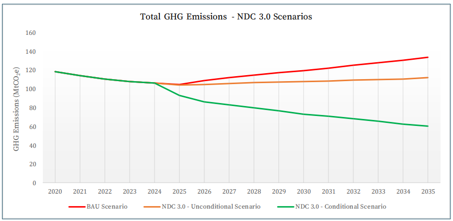
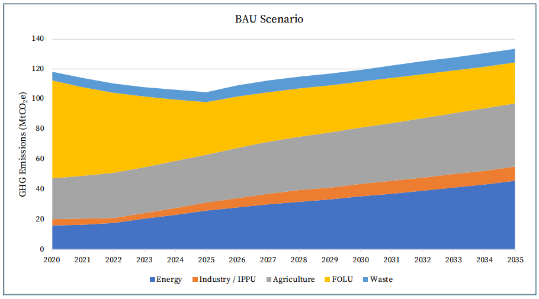
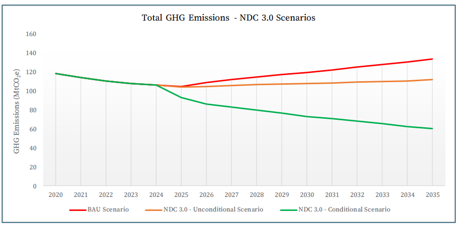
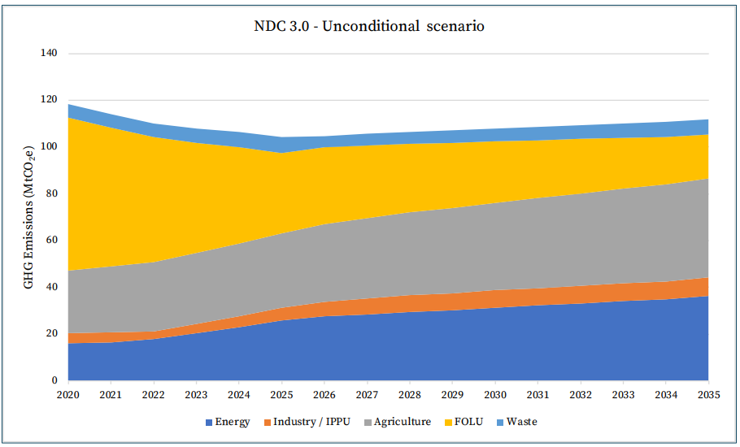
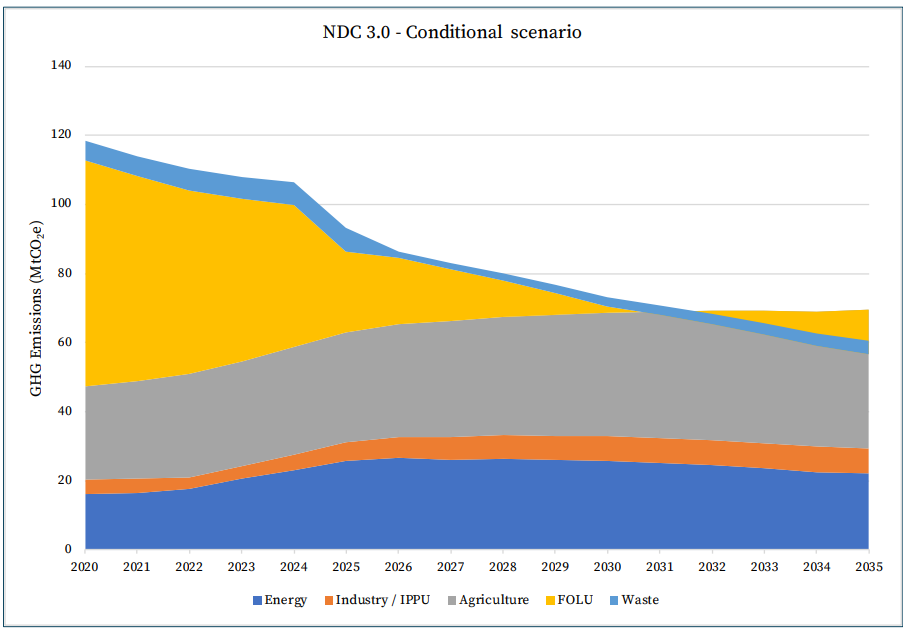
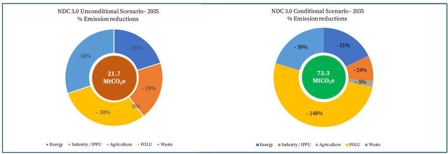
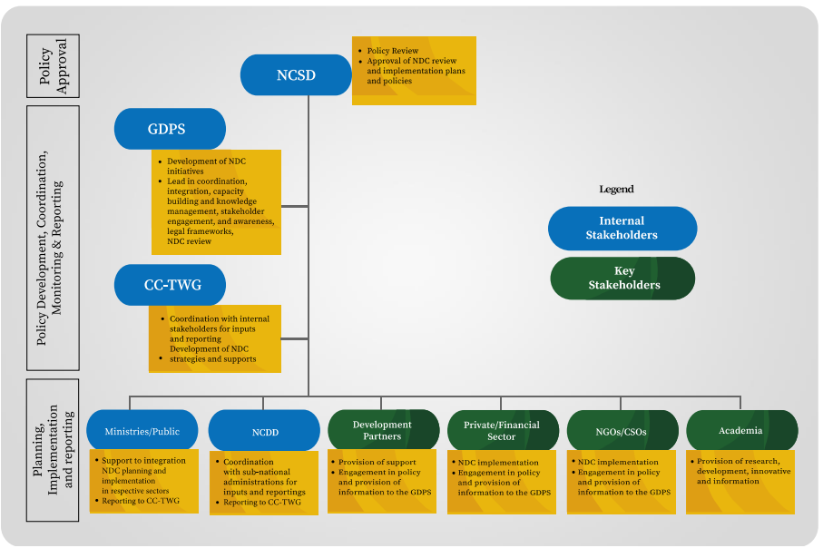

July 2025
The development of Cambodia's Third Nationally Determined Contribution (Cambodia's NDC 3.0) was carried out under the visionary leadership of Samdech Moha Borvor Thipadei HUN Manet, the Prime Minister of the Kingdom of Cambodia. His guidance enabled the Ministry of Environment to coordinate the formulation of this crucial document, which reflects Cambodia's strong ambition to reduce greenhouse gas emissions and address global warming and climate change.
The coordination of Cambodia's NDC 3.0 was led by the General Directorate of Policy and Strategy of the Ministry of Environment, under the leadership of H.E. Dr. EANG Sophalleth , Minister of Environment and Chair of the National Council for Sustainable Development of the Royal Government of Cambodia.
Special appreciation is extended to H.E. Mr. SAN Vanty , Permanent Secretary of State of the Ministry of Environment; H.E. Dr. CHUOP Paris , Secretary of State of the Ministry of Environment and Chair of the Climate Change Technical Working Group; and H.E. Mr. SUM Thy , Director General of the General Directorate of Policy and Strategy, for their strong leadership in providing guidance, strategic direction, and coordination. Their efforts were instrumental in ensuring that Cambodia's NDC 3.0 is ambitious, imp lementable, and inclusive.
These comprehensive efforts actively engaged all members of the Climate Change Technical Working Group (CC-TWG), the Gender Mainstreaming Action Group (GMAG), as well as officials and senior representatives from line ministries including MAFF, MEF, MISTI, MLMUPC, MLVT, MME, MoCFA, MoCR, MoEYS, MoH, MoINFO, MIns, MoP, MoSVY, MoT, MoWA, MoWRAM, MPWT, MRD, NCDD, NCDM, SSCA, CARD, and GS-NSPC. Their dedication and expertise were vital in shaping Cambodia's climate actions for the next 10 years.
The United Nations Development Programme (UNDP) provided close support to the Ministry of Environment through technical guidance and coordination. Tasked by the UN SecretaryGeneral to lead a system-wide effort under the Climate Promise initiative, the UN Resident Coordinator and UNDP convened the UN Country Team and the Development Partners to mobilize expertise and resources for the development of Cambodia's joint offer that is aligned with national priorities. The support of ADB, the European Union, FAO, GIZ, UNESCO, UNICEF, WFP, WHO, NDC Partnership was an instrumental contribution to Cambodia's NDC 3.0 development. Additional contributions from ILO, OHCHR, UNEP/UNESCAP, UN-Habitat, UNWOMEN, UNCDF and GGGI, as well as Conservation International, NGO Forum, and Oxfam further advanced the document and our shared commitment to sustainable development.
Sincere appreciation is extended to representatives from civil society, NGOs, development partners, the private sector, academia, youth, women, persons with disabilities, and Indigenous Peoples groups for their valuable insights during technical consultations on NDC 3.0.
Cambodia's NDC 3.0 is the result of proactive collaboration among a wide range of stakeholders, who are expected to contribute to its implementation in alignment with the country's wider development context.
|
ADB |
Asian Development Bank |
|
AQ |
Air Quality |
|
AWD |
Alternate Wetting and Drying |
|
BAU |
Business as Usual |
|
BTR |
Biennial Transparency Report |
|
BTR1 |
First Biennial Transparency Report |
|
BUR |
Biennial Update Report |
|
CARD |
Council for Agricultural and Rural Development |
|
CCS |
Carbon Credit Secretariat |
|
CC-TWG |
Climate Change Technical Working Group |
|
CCCSP |
Cambodia Climate Change Strategic Plan |
|
CCFF |
Cambodia Climate Financing Facility |
|
CEMIS |
Cambodia Environmental Management Information System |
|
CF |
Community Forest |
|
CFi |
Community Fisheries |
|
CLT |
Collective Land Title |
|
CP |
Child Protection |
|
CPA |
Community Protected Area |
|
CPER |
Climate Public Expenditure Review |
|
DPO |
Disabled People's Organisation |
|
DRM |
Disaster Risk Management |
|
DRR |
Disaster Risk Reduction |
|
EAC |
Electricity Authority of Cambodia |
|
EIA |
Environmental Impact Assessment |
|
ESG |
Environmental, Social, and Governance |
|
ETF |
Enhanced Transparency Framework |
|
EV |
Electric Vehicle |
|
EWS |
Early Warning System |
|
EW4ALL |
Early Warning for All |
|
F&B |
Food and Beverage |
|
FA |
Forestry Administration |
|
FAO |
Food and Agriculture Organization |
|
FiA |
Fisheries Administration |
|
FOLU |
Forestry and Other Land Use |
|
FRLD |
Fund for Responding to Loss and Damage |
|
FSM |
Fecal Sludge Management |
|
GAP |
Good Agricultural Practices |
|
GAqP |
Good Aquaculture Practices |
|
GCF |
Green Climate Fund |
|
GDPS |
General Directorate of Policy and Strategy |
|
GDB |
General Department of Budget |
|
GDICDM |
General Department of International Cooperation and Debt Management |
|
GDPPP |
General Department of Public-Private Partnerships |
|
GEF |
Global Environment Facility |
|
GESI |
Gender Equality and Social Inclusion |
|
GFT |
Garment, Footwear and Travel Goods |
|
GGGI |
Global Green Growth Institute |
|
GHG |
Greenhouse Gas |
|
GIS |
Geographic Information System |
|
GIZ |
Deutsche Gesellschaft für Internationale Zusammenarbeit |
|
GMAG |
Gender Mainstreaming Action Group |
|
GMAP |
Gender Mainstreaming Action Plan |
|
GS-NSPC |
General Secretariat for the National Social Protection Council |
|
GWP |
Global Warming Potential |
|
HFC |
Hydrofluorocarbon |
|
HH |
Household |
|
HoH |
Head of Household |
|
ICE |
Internal Combustion Engine |
|
IDPoor |
Identification of Poor Households Mechanism |
|
IEA |
International Energy Agency |
|
ILO |
International Labour Organization |
|
iNDC |
IntendedNDC |
|
INFF |
Integrated National Financing Framework |
|
IP |
Indigenous People |
|
IPO |
Indigenous Peoples Organization |
|
IPPU |
Industrial Processes and Product Use |
|
KAP |
Knowledge, Attitudes, and Practices |
|
LDC |
Least Developed Country |
|
LDCF |
Least Developed Countries Fund |
|
LFG |
Landfill Gas |
|
LMs |
Line Ministries |
|
LPG |
Liquefied Petroleum Gas |
|
LTS4CN |
Long-Term Strategy for Carbon Neutrality |
|
M&E |
Monitoring and Evaluation |
|
MAFF |
Ministry of Agriculture, Forestry and Fisheries |
|
MCFA |
Ministry of Culture and Fine Arts |
|
MEF |
Ministry of Economy and Finance |
|
MEPS |
Minimum Energy Performance Standard |
|
MFMA |
Marine Fisheries Management Area |
|
MISTI |
Ministry of Industry, Science, Technology &Innovation |
|
MLMUPC |
Ministry of Land Management, Urban Planning and Construction |
|
MLVT |
Ministry of Labour and Vocational Training |
|
MME |
Ministry of Mines and Energy |
|
MoCFA |
Ministry of Culture and Fine Arts |
|
MoCR |
Ministry of Cults and Religion |
|
MoE |
Ministry of Environment |
|
MoEYS |
Ministry of Education, Youth and Sport |
|
MoH |
Ministry of Health |
|
MoI |
Ministry of Interior |
|
MoINFO |
Ministry of Information |
|
MIns |
Ministry of Inspection |
|
MoP |
Ministry of Planning |
|
MoSVY |
Ministry of Social Affairs, Veterans and Youth Rehabilitation |
|
MoT |
Ministry of Tourism |
|
MoWA |
Ministry of Women's Affairs |
|
MoWRAM |
Ministry of Water Resources and Meteorology |
|
MPTC |
Ministry of Post and Telecommunications |
|
MPWT |
Ministry of Public Works and Transport |
|
MRD |
Ministry of Rural Development |
|
MRV |
Monitoring, Reporting, and Verification |
|
MSME |
Micro, Small, and Medium Enterprises |
|
MtCO 2 e |
Metric tons of carbon dioxide equivalent |
|
NAP |
National Adaptation Plan |
|
NbS |
Nature-based Solutions |
|
NBSAP |
National Biodiversity Strategy and Action Plan |
|
NCDD |
National Committee for Sub-National Democratic Development |
|
NCDDS |
National Committee for Sub-National Democratic Development Secretariat |
|
NCDM |
National Committee for Disaster Management |
|
NCSD |
National Council for Sustainable Development |
|
NDC |
Nationally Determined Contribution |
|
NEEP |
National Energy Efficiency Policy |
|
NGO |
Non-Governmental Organization |
|
NSDP |
National Sustainable Development Plan |
|
NSPC |
National Social Protection Council |
|
NTFP |
Non-Timber Forest Products |
|
OHCHR |
Office of the High Commissioner for HumanRights |
|
OSH |
Occupational Safety and Health |
|
PDP |
Power Development Master Plan |
|
PES |
Payment for Ecosystem Services |
|
PPP |
Public-Private Partnership |
|
PS |
Private Sector |
|
PWD |
People with Disabilities |
|
RDF |
Refuse-Derived Fuel |
|
REDD+ |
Reducing Emissions from Deforestation and Forest Degradation |
|
RGC |
Royal Government of Cambodia |
|
S&L |
Standards and Labelling |
|
SDG |
Sustainable Development Goal |
|
SDGs |
Sustainable Development Goals |
|
SOPs |
Standards Operating Procedures |
|
SNA |
Sub-National Administration |
|
SRSP |
Shock Responsive Social Protection |
|
SSCA |
State Secretariat of Civil Aviation |
|
SSS |
Specialized Social Services |
|
TNC |
Third National Communication |
|
TVET |
Technical and Vocational Education and Training |
|
UNDP |
United Nations Development Programme |
|
UNDRIP |
United Nations Declaration on the Rights of Indigenous Peoples |
|
UNESCAP |
United Nations Economic and Social Commission for Asia and the Pacific |
|
UNESCO |
United Nations Educational, Scientific and Cultural Organization |
|
UNFCCC |
United Nations Framework Convention on Climate Change |
|
UN-Habitat |
United Nations Human Settlements Programme |
|
UNICEF |
United Nations Children's Fund |
|
UNWOMEN |
United Nations Entity for Gender Equality and theEmpowermentofWomen. |
|
UNCDF |
United Nations Capital Development Fund |
|
WASH |
Water, Sanitation and Hygiene |
|
WFP |
World Food Programme |
|
WHO |
World Health Organization |
|
WWF |
World Wildlife Fund |
|
WtE |
Waste-to-Energy |
|
YCCA |
Youth Council for Climate Action |
Cambodia's Third Nationally Determined Contribution (Cambodia's NDC 3.0) reaffirms the country's strong commitment to the Paris Agreement under the United Nations Framework Convention on Climate Change (UNFCCC). Despite contributing less than 1% to global greenhouse gas (GHG) emissions, Cambodia has demonstrated leadership in climate governance to submit the Intended NDC in 2015, the Updated NDC in 2020, the Long-Term Strategy for Carbon Neutrality (LTS4CN) in 2021 and its first Biennial Transparency Report (BTR1) in 2024.
Cambodia's NDC 3.0 aligns with key national frameworks, including the Pentagonal Strategy -Phase I, the Circular Strategy on Environment 2023-2028 and the Cambodia Climate Change Strategic Plan 2024 -2033 (CCCSP 2024 -2033), guiding the integration of climate action into national development priorities.
The development of Cambodia's NDC 3.0 was a highly participatory and inclusive process under the lead coordination of the Ministry of Environment and supported by UNDP under the Climate Promise initiative, as well as other UN agencies and development partners. It engaged over 650 stakeholders through 17 sectoral consultations and over 300 participants in four sub-national workshops. Participants included representatives from government ministries, development partners, NGOs, academia, women, youth, Indigenous Peoples, and persons with disabilities.
The sectoral approach ensured alignment with national priorities and enhanced interministerial collaboration. It involved policy reviews, GHG modeling, and scenario analysis to identify ambitious yet feasible mitigation and adaptation measures. Special attention was given to gender equality and social inclusion (GESI), with dedicated training for CC-TWG members and consultations with marginalized groups. Meaningful youth engagement was a cornerstone of the process, culminating in the development of the National Youth Statement on Cambodia's NDC 3.0 priorities. The private sector was also actively involved, particularly in discussions on carbon markets and sustainable industry practices.
A total of 163 measures have been endorsed by the Line Ministries, comprising 49 mitigation measures, 75 adaptation measures, and 39 enabling measures.
Greenhouse Gas Mitigation
Cambodia's NDC 3.0 outlines ambitious greenhouse gas mitigation targets across five key sectors: Energy (including transport and manufacturing and construction), Industrial Processes and Product Use (IPPU), Agriculture, Forestry and Other Land Use (FOLU), and Waste. The country aims to reduce GHG emissions by:
Figure 1 compares the three scenarios - BAU, NDC 3.0 Unconditional and NDC 3.0 Conditional - from 2020 to 2035, and Table 1 presents the detailed figures by mitigation sector in terms of emissions, emission reductions and percentage reductions under the three scenarios.

Figure 1: BAU and Cambodia's NDC 3.0 scenarios
Table 1: Emission reductions NDC 3.0 Conditional and Unconditional scenarios compared to 2035 BAU
|
Sectors |
BAU 2035 |
NDC3.0 Unconditional 2035 |
NDC3.0 Conditional 2035 |
||||
|
Emissions (MtCO 2 e) |
Emissions (MtCO 2 e) |
Emissions reduction (MtCO 2 e) |
Emissions reduction [%] |
Emissions (MtCO 2 e) |
Emissions reduction (MtCO 2 e) |
Emissions reduction [%] |
|
|
Energy |
45.5 |
36.5 |
-9.0 |
-20% |
22.2 |
-23.3 |
-51% |
|
IPPU |
9.4 |
7.6 |
-1.8 |
-19% |
7.2 |
-2.2 |
-24% |
|
Agriculture |
42.4 |
42.4 |
0 |
0% |
40.2 |
-2.2 |
-5% |
|
FOLU |
27.0 |
19.0 |
-8.0 |
-30% |
-13.0 |
-40.0 |
-148% |
|
Waste |
9.3 |
6.5 |
-2.8 |
-30% |
3.9 |
-5.4 |
-59% |
|
Total |
133.7 |
112.1 |
-21.6 |
-16% |
60.4 |
-73.3 |
-55% |
Key mitigation strategies include:
Cambodia's NDC 3.0 expands the scope of adaptation sectors, in line with the national priorities and recommendations from the Global Stocktake Outcome (2023) and the Global Goal on Adaptation. It outlines the strategic priorities identified to strengthen national adaptation measures and resilience across key economic and vulnerable sectors constituting of Energy, Industry/IPPU, Agriculture, FOLU, Human health and WASH (Water Sanitation and Hygiene), Infrastructure, Livelihood and ecosystems, Disaster and climate risk management, Social protection, social services and child protection, Food systems, and Air quality. Notably, recognizing that poor vulnerable and at-risk populations are disproportionately affected by climate change, Social protection, social services and child protection have been explicitly identified for the first time as a key adaptation sector. In addition, Food systems have also been explicitly included as a priority area for adaptation, and Disaster and climate risk management, Livelihood and ecosystems, WASH, and Air quality sectors have been enhanced and treated as distinct and critical components of climate resilience.
To effectively implement the mitigation and adaptation measures outlined in Cambodia's NDC 3.0, strong enabling conditions are essential. These conditions are grouped into the following key areas: Education, information and awareness raising, Governance, and Policy, planning and capacity building. Together, they create the foundation for informed decisionmaking, inclusive participation, and effective climate action across all levels of society.
The private sector is then recognized as a key partner in financing and implementing climate solutions, particularly in energy, transport, and industry.
NDC 3.0 integrates cross-cutting themes to ensure inclusive and equitable climate action following the principles of a Just Transition. Building on dedicated consultations that engaged women, youth, Indigenous Peoples, and persons with disabilities throughout the NDC 3.0 development process, specific considerations on Gender Equality and Social Inclusion (GESI) have been integrated in the measures, focusing on proactive engagement, leadership training, disaggregated data collection and Monitoring Reporting and Verification (MRV). Youth were actively involved in consultations and policy shaping, following a roadmap and statement for increased participation, and the focus on children, recognized as vulnerable group to climate change, reflects a shared commitment towards promoting, protecting, and engaging children to participate in climate action.
Cambodia's climate governance is led by the Ministry of Environment and the National Council for Sustainable Development, supported by the Climate Change Technical Working Group (CC-TWG), which includes 22 ministries and institutions. This structure ensures crosssectoral coordination and inclusive decision-making. Sub-national authorities, civil society, and development partners are also engaged to ensure climate action is locally grounded and nationally coherent.
To implement NDC 3.0, Cambodia prioritizes strengthening institutional and technical capacities across all levels. Key areas include GHG inventories, climate finance, MRV systems, and proposal development. Cambodia has access to many essential climate technologies, especially in energy, transport, and agriculture. However, scaling up requires investment in local adaptation, training, and maintenance. Digital tools -such as GIS, mobile apps, and smart infrastructure -are increasingly used to support both mitigation and adaptation goals. Cambodia operates an online NDC tracking platform aligned with the Enhanced Transparency Framework of the Paris Agreement. Future upgrades will enhance inclusivity by integrating gender, youth, and Indigenous Peoples indicators.
Cambodia's NDC 3.0 is closely aligned with the Sustainable Development Goals (SDGs), particularly SDGs 5, 6, 7, 9, 11, 13, 14, and 15. Climate actions are designed to deliver cobenefits across poverty reduction, health, education, and gender equality, ensuring that climate ambition supports broader national development priorities.
Cambodia's NDC 3.0 outlines a total estimated cost of USD 32.2 billion for the period 2026 -2035:
Nearly two-thirds (USD 20.37 billion) of this will go to the energy sector, with USD 12.78 billion specifically aimed at increasing renewable energy to 80% of the electricity mix by 2035.
The total cost consists of two parts:
The financial strategy emphasizes blended finance, carbon markets, and private sector investment. Cambodia aims to leverage international climate funds such as the Green Climate Fund (GCF), Global Environment Facility (GEF), and the new Fund for Responding to Loss and Damage (FRLD). The Cambodia Climate Financing Facility (CCFF) and a forthcoming national carbon registry are key instruments to mobilize and track climate finance.
The year 2025 marks the 10 th anniversary of the Paris Agreement and constitutes a critical moment in the collective fight against climate change, in parallel with the deadline for the submission of the third round of the Nationally Determined Contributions, the so-called NDCs 3.0.
The NDCs are crucial for achieving the collective goal stated in the Paris Agreement of limiting global temperature to well below 2 degrees Celsius, preferably to 1.5 degrees Celsius, compared to pre-industrial levels. Globally, there is a common recognition of both the ambition and implementation gap in current NDCs. Despite considerable progress, greater emission reductions are required to align global emission trajectories with the goal of 1.5 degrees Celsius given the gap in implementation of existing pledges. Enhanced financial resources, technology transfer, technical cooperation, and capacity-building support are needed to deliver these targets.
The Royal Government of Cambodia (RGC) is committed to combating climate change through an active engagement towards achieving its international commitments under the United Nations Framework Convention on Climate Change (UNFCCC), ratified in 1996, and the Paris Agreement, as well as key national frameworks, such as the Pentagonal Strategy Phase I, the Long-Term Strategy for Carbon Neutrality (LTS4CN) and the Cambodia Climate Change Strategic Plan 2024-2033 (CCCSP 2024-2033).
Following the submissions of Cambodia's Intended NDC in 2015 and the Updated NDC in 2020 with GHG emissions reductions target of 27% and 42%, respectively, compared to Business as Usual (BAU), Cambodia's Third Nationally Determined Contribution (Cambodia's NDC 3.0) reflects the country's strong dedication and continuous commitment to the collective fight against climate change despite its status as a Least Developed Country (LDC) with less than 1% contribution to global GHG emissions.
The RGC has implemented climate change initiatives and policies development, aiming to accelerate the transition to a climate-resilient, low-carbon sustainable mode of development, through the implementation of various adaptation and mitigation measures through major climate change policies and strategies as well as active participation in global climate change initiatives.
At the national level, Cambodia's development focus is on poverty reduction and achieving upper-middle-income status by 2030, as per the National Sustainable Development Plan (NSDP). The country is expected to graduate from its Least Developed Country (LDC) status in December 20292
Cambodia's first Biennial Update Report (BUR) was submitted in August 2020, and the Third National Communication (TNC) in December 2022. Cambodia was also among the first LDCs to submit the first Biennial Transparency Report (BTR1) to the UNFCCC in December 2024. The same year, the country developed the Operational Manual for the Implementation of Article 6 of the Paris Agreement on Climate Change in Cambodia.
In 2021, Cambodia developed the Long-Term Strategy for Carbon Neutrality (LTS4CN) aimed at achieving a carbon-neutral and resilient society by 2050 as the first country in ASEAN and the second LDC worldwide to submit a Long-Term Low Emission Development Strategy (LTLEDS).
In August 2023, the RGC adopted the Pentagonal Strategy -Phase I, serving as the government's overarching policy direction for sustainable socio -economic growth and standpoint to addressing climate change, and Cambodia's long-term vision of becoming a high-income nation by 2050. Key climate policy instruments developed are required to align and directly support the Pentagonal Strategy's fifth pillar, focusing on sustainable and inclusive development, which emphasizes environmental protection, natural resource management, and climate resilience as essential components of inclusive growth.
Cambodia's Environment and Natural Resources Code was also adopted in 2023, aiming to ensure environmental management, protection, conservation, and restoration of natural resources, biodiversity, cultural property, and sustainable living. Soon after, the Circular Strategy on Environment 2023-2028 was launched with a focus on three pillars (Clean, Green, and Sustainable) intending to transform the potential of the environmental sector for the benefit of Cambodians, ensure environment response to climate change, and promote sustainable development. Cambodia has also made significant progress in developing and implementing monitoring and evaluation (M&E) frameworks, including climate finance. The NDC tracking system, a first-ever online-based web platform in Cambodia under the Enhanced Transparency Framework (ETF) of the Paris Agreement, was developed in 2022 to track the NDC implementation progress on an annual basis. The country has produced regular Climate Public Expenditure Reviews (CPER) from 2013 to 2023 and has improved climate finance in its Official Development Assistance (ODA) database. The National M&E Framework for Climate Change Response, including the Climate Change Vulnerability Index and other climate change information systems3
Cambodia's NDC 3.0 is aligned with the key policy frameworks, ensuring that climate actions are integrated into broader developmental goals and environmental management initiatives, fostering a cohesive approach to sustainable development.
The country recognizes the urgent need to tackle climate change impacts, which are characterized by frequent floods, droughts, storms, heat waves and irregular rainfall and threaten its sustainable development, biodiversity, social economy, and people's livelihoods. Climate change would reduce the country's annual average GDP growth by 6.6% in 2030 and up to 9.8% in 20504
Cambodia places a strong emphasis on climate change adaptation, recognizing its high vulnerability to climate impacts and extreme weather events. This NDC reaffirms the country's commitment to accelerating adaptation efforts to protect its people, ecosyste ms, and economy. At the same time, despite historically low GHG emissions, Cambodia acknowledges the growing challenges posed by increasing emissions linked to its rapid development. Therefore, this NDC also reflects a stronger ambition on mitigation, signaling Cambodia's determination to pursue a low -carbon development pathway while building resilience.
Building on its previous NDCs, Cambodia's NDC 3.0 emphasizes the commitment made by the RGC, led by the National Council for Sustainable Development and the Ministry of Environment, to develop a more ambitious, implementable, and inclusive NDC 3.0.
Cambodia's NDC 3.0 presents a comprehensive framework for climate action, focusing on various mitigation sectors, including Energy (which includes energy in industries and buildings, transport and manufacturing and construction), Waste, Industry/IPPU, Agriculture, and Forestry and Other Land Use (FOLU). Additionally, it aims to enhance adaptation capacities by addressing critical adaptation sectors such as Energy, Industry, Agriculture, FOLU, Human health, WASH, Infrastructure (which includes building, urban planning, and roads), Livelihood and ecosystems (tourism, cultural heritage, biodiversity, protected areas, coastal areas), Disaster and climate risk management, Social protection, social services and child protection, Food system, and Air quality. It also includes enabling measures, emphasizing the importance of Education, information, awareness-raising, Policy, planning and capacity building. Governance measures are also highlighted, including strengthening institutional mechanisms to foster climate action, and addressing crosscutting priorities such as gender equality, social inclusion, youth and private sector engagement.
Cambodia's NDC 3.0 marks the first time that social protection, as a means to strengthen the resilience of those vulnerable to climate change by enhancing adaptive capacities and promoting a just transition, social services and child protection have been explicitly included as key components. Additionally, the emphasis on the WASH and Disaster and climate risk management sector has increased, treating them as distinct categories, underscoring their critical importance in climate adaptation. Furthermore, Food systems and nutrition are addressed by recognizing their integral role in building resilience against climate impacts. Crosscutting themes within Cambodia's NDC 3.0 include Gender Equality and Social Inclusion (GESI) considerations essential for fostering comprehensive and sustainable climate action based on the human rights to a clean, healthy, and sustainable environment. It is recognized that integrating human rights into NDCs ensures effective, sustainable, and equitable climate action. Cambodia's NDC 3.0 emphasizes that the transformation to a decarbonized, resilient economy must leave no one behind, aiming to reduce rather than deepen existing social gaps by considering re-skilling and economic diversification in line with the principles of just transition.
Aside from the sector-specific targets and strategic measures abovementioned, the need for international support in terms of finance, technology transfer, and capacity building is indispensable to transform Cambodia's NDC 3.0 measures into tangible actions on the ground feeding into broader climate outcomes. As a comprehensive policy document, Cambodia's NDC 3.0 serves as both a national roadmap and a reaffirmation of Cambodia's role as a responsible member of the global climate community.
A total of 163 measures have been endorsed by the Line Ministries, comprising 49 mitigation measures, 75 adaptation measures, and 39 enabling measures.
The development of Cambodia's NDC 3.0 followed a comprehensive participatory approach, under the leadership of the Ministry of Environment and the National Council for Sustainable Development. The RGC received technical assistance from UNDP, which leveraged the infrastructure of the Climate Promise to lead a coordinated, system-wide support of the United Nations Country Team (UNCT) and development partners (DPs) to mobilize expertise and resources effectively to assist line ministries in proposing and validating their priority measures across the mitigation, adaptation, and enabling sectors.
The preparatory work was successfully completed in December 2024, including a mapping of support provided by UN Agencies and DPs and the national stocktake analysis to assess progress towards existing NDC targets and identify opportunities for increased ambition for Cambodia' s NDC 3.0. The proposed methodology and workplan were presented to more than 180 participants from line ministries, members of the Climate Change Technical Working Group (CC-TWG), development partners, NGOs, academia, and youth representatives at the Inception workshop on 27 January 2025.
The approach consisted of a comprehensive desk review and analysis on a sectoral basis which aimed to increase collaboration and uncover synergies between different ministries. The sectoral approach consisted of i) Policy alignment with recent priorities and targets to ensure coherence and strategic direction; ii) Sectoral assessments, reviewing recent studies and available data; iii) GHG emission reduction calculation and scenario modeling for mitigation sectors; iv) Critical analysis of the current status of Cambodia's Updated NDC measures; v ) Draft measures for the Cambodia's NDC 3.0.
This analysis was followed by sectoral consultations to inform key stakeholders about the NDC 3.0 development processes, present the progress made in implementing the existing measures and facilitate discussions on the ambitions and priorities for Cambodia's NDC 3.0 by sector. The consultations targeted CC-TWG focal points, specific departments within the Line Ministries (LMs), representatives from the private sector, as well as NGOs, civil society organizations, youth and academia. Over the course of the Cambodia's NDC 3.0 development, a total of 17 sectoral consultations involved over 650 participants (150+ women, 40+ youth, 7 Indigenous Peoples and 6 People with Disabilities) with the majority (62%) from the government, followed by development partners (26%), NGOs (8%), private sector (4%) and academia (<1%). These culminated in the zero draft document shared at the National Consultation Workshop at the end of April 2025. The event provided an opportunity for nearly 300 participants (33% women) to comment on the proposed measures and contribute to improving targets. This effort was complemented by four Sub-national Consultation Workshops, organized in Kep, Battambang, Siem Reap and Mondulkiri, bringing together 300+ attendees (around 30% women and 20% youth) in order to reflect the views, experiences and priorities across all 25 provinces.
Throughout the process, a special attention was paid to the representation of voices from marginalized groups and the inclusion of cross cutting topics in the sectoral discussions. For this purpose, the CCTWG members received a training on ' Development of a Transformative Cambodia's NDC 3.0: Goal Setting and Strengthening Inclusive Approaches' on 12 March 2025 drawing on key principles from the Toolkit on Integrating Human Rights in NDCs developed by OHCHR. In addition, two sessions targeting representatives from Indigenous People's Organizations (IPOs) and Disabled People's Organisations (DPOs) took place ahead of the main consultative events in order to share knowledge and identify entry points to effectively contribute to the process. Finally, all measures and targets were reviewed by a team of dedicated experts on Gender Equality and Social Inclusion (GESI), complimenting the heightened effort of tracking the participation of representatives from various socio-economic groups in the process. A dedicated Dialogue on Gender Mainstreaming in the NDC was organized on 25 April 2025 with support from ADB, to strengthen collaboration between representatives of the CC-TWG and the Gender Mainstreaming Action Groups (GMAGs) from across the line ministries. An additional emphasis was placed on the engagement of youth in the process as the stewards of Cambodia's climate future. More than 150 young people (under 35 years old) participated in the form ulation of the Cambodia's NDC 3.0 and additional 550 (250 in person + 200 online) provided inputs on young people's priorities through the National Youth Statement devised as part of the Local Conference of Youth hold on 3 June 2025, supported by UNDP and UNICEF. Two separate sessions, with nearly 100 participants, were dedicated to the engagement with the private sectors and their perspective on relevant measures. One session focused on the garment and textile sectors, as part of the Cambodia Global Textile Summit 2025, leveraging the networks of the UNFCCC Fashion Charter and EuroCham. The other session, supported by the EU, explored carbon market opportunities and enabling mechanisms to enhance private sector involvement in the NDC measures.
All the inputs were integrated in the updated draft, leading to a consolidated document presented at the Validation Workshop held on 4 July 2025, where it received general appreciation from the Line Ministries and engaged a broad range of DPs and NGOs. Additionally, the draft report was presented at an official session of the NCSD on 10 July 2025, where it received formal endorsement.
This chapter outlines the strategy to address climate change by targeting key sectors that contribute significantly to reducing greenhouse gas emissions. The sectors covered include energy5
Cambodia's NDC 3.0 Energy strategy aims to accelerate the transition to a cleaner, more resilient energy system by increasing the share of renewable energy (RE) in installed capacity to 72% by 2035 (conditionally up to 80%). The plan includes near-universal rural electrification -targeting 99% of villages and households by 2035 -by replacing diesel and fossil-based sources with decentralized RE solutions. The strategy includes the improvement of the supply-side energy efficiency through the adoption of grid modernization technologies. A no-new-coal policy supports the phase-down of coal-fired power, while exploring carbon capture and utilization technologies to repurpose emissions from existing plants. To promote energy efficiency, the strategy introduces mandatory Minimum Energy Performance Standards (MEPS) and labeling for residential and industrial appliances, as well as public lighting. Additionally, it targets 60% national adoption of clean cooking solutions and advances building energy codes with passive cooling indicators to reduce energy demand in the built environment.
In Transport , Cambodia's NDC 3.0 aims to transition toward a low-carbon, efficient, and integrated mobility system by 2035. The plan targets a 15% modal share for urban public buses and promotes electric mobility, aiming for 35% of motorcycles, 5% of tuk-tuks, 5% of passenger cars, and 20% of urban buses to be electric vehicles. The country will adopt national standards for internal combustion engine vehicles, with a goal for 50% of the vehicle stock to comply by 2035. A centralized transport data platform will be developed to support planning and monitoring, with two-thirds of inspection centers equipped to track emissions by 2025. The strategy also includes shifting 5% of long-distance passenger and freight transport to rail and enhancing waterborne transport via the Funan Techo Canal, targeting a 6% modal share. To address aviation emissions, the NDC 3.0 includes measures to improve operational efficiency, adopt fuel-saving practices, and transition to sustainable aviation fuels, with 80% of airline operators expected to comply.
Manufacturing industries and construction focuses on enhancing energy efficiency and promoting sustainable energy use. Key actions include implementing an Energy Management Program to enhance sustainable energy efficiency in industries, developing regulations, and leveraging energy standards and labeling for industrial equipment across sectors like garments, food and beverage, agro-processing, and electrical industries. It also promotes efficient and renewable steam generation, aiming for 100% sustainable wood use and 80% steam system efficiency. Additional measures include transitioning to energyefficient brick kilns and improving energy performance in the cement sector.
Cambodia's NDC 3.0 strategy for the IPPU sector targets emissions reduction through material substitution and refrigerant transition. In the cement industry, it promotes lowcarbon materials by reducing the clinker-to-cement ratio to 75% using alternatives like fly ash and other supplementary cementitious materials. For cooling, the NDC 3.0 supports a phasedown of fluorinated gases by shifting to low-GWP refrigerants. These measures aim to reduce GHG emissions by 56% (unconditional) and 72% (conditional) by 2035.
Key goals for a climate-resilient and sustainable Agricultural sector by 2035 include reducing chemical fertilizer use by 15% across 2 million ha of rice, expanding biochar and organic alternatives, and applying water-saving practices like intermittent flooding on 90,000 hectares. Mechanized Direct Seeded Rice (mDSR) is expected to cover 100,000 hectares by 2035. The country also aims to manage rice straw sustainably, with 75% collected for reuse and 25% returned to the soil. Integrated nutrient management will be adopted on 40% of cropland, and agro-ecological practices will be applied on 16,000 hectares, with 30% of women farmers trained in climate-smart techniques. For livestock, Cambodia targets a 100% increase in biogas use in pig farming and 25% adoption in cattle, reaching 97,000 households with biodigesters. Improved feeding will benefit over 200,000 cattle, with training for women farmers. The rubber sector will see 50,000 hectares under sustainable practices and 150,000 hectares of improved rubber wood harvesting.
The FOLU sector, historically accounting for the majority of Cambodia's GHG emissions, is aiming to halve deforestation rate by 2030 through REDD+ and sustainable land use. By 2035, 80% of wood used in key industries will come from certified sustainable sources, supported by a national traceability system. Forest cover will expand with 600,000 ha of plantations and 220,000 ha of restored land by 2035. Assisted natural regeneration will cover 450,000 ha, alongside restoration of 56,900 ha of flooded forests and 4,080 ha of mangroves. Improved forest management will cover 60% of forest land by 2035, including 2 million ha under Community Forestry. Agroforestry will also scale up, reaching 50,000 ha by 2025 and 160,000 ha by 2050.
The Waste management sector focuses on reducing municipal solid waste (MSW) generation through targeted actions such as food waste reduction, recycling programs, and public awareness campaigns, with a strong emphasis on limiting plastic waste. By 2035, 50% of MSW is expected to be segregated at source, 75% of households will have access to regular waste collection services, and open burning will be reduced to 10%. Organic waste processing capacity will be expanded to 600,000 tons/year (25% of the total), emphasizing municipal and regional facilities, community composting and farmer participation. To extend landfill lifespan, the approach includes establishing Refuse Derived Fuel (RDF) processing and a large-scale waste-to-energy facility by 2035, aiming to reduce landfill MSW by 30% and boost medical waste treatment to 8 tons/day. Landfill operations will be strengthened, with a 50% increase in controlled and sanitary landfills by 2035, and the Toul Prech regional landfill will feature landfill gas (LFG) extraction by 2027. Textile waste management will be improved through centralized sorting centers and factory-level initiatives supported by incentives. In industrial wastewater management, the goal is 100% treatment coverage for Garment, Footwear and Travel goods (GFT) and leather factories and a 100% increase in biogasproducing treatment plants.
Based on the specific mitigation targets, GHG emissions have been modeled for all the mitigation sectors: Energy, Industrial Processes and Product Use (IPPU), Agriculture, Forestry and Other Land Use (FOLU), and Waste.
The modeling presents GHG emissions projections and the impact of intervention measures for the period 2026 to 2035, under the following scenarios:
The Business-as-Usual (BAU) Scenario reflects the projected trajectory of GHG emissions in the absence of new climate mitigation policies beyond those already in place as of the 2020 base year. It serves as a benchmark for assessing the impact of proposed interventions under NDC 3.0, highlighting the urgency and scale of emissions reductions required.
Cambodia's NDC 3.0 Unconditional Scenario includes climate actions that the RGC commits to implementing using its own resources and capabilities, its national budget and support that is already confirmed from development partners.
Cambodia's NDC 3.0 Conditional Scenario includes all unconditional measures as well as the measures where the RGC requires external financial and technical support for the implementation to fully achieve its climate ambitions.
To ensure consistency and comparability across all mitigation sectors, a set of common assumptions has been applied. While each sector utilized the most appropriate and widely recognized modeling tools to estimate sectoral GHG emissions, the following shared assumptions were adopted:
A common database of socio-economic parameters was developed to support modeling across the mitigation sectors and data, which includes household income, consumption, labor, land use, agricultural production, industrial output, and demographic indicator, is sourced from national socio-economic surveys and sectoral databases maintained by various ministries.
The Energy sector has been modeled using a harmonized approach across the IPCC categories, including 1.A.1 Energy Industries, 1.A.2 Manufacturing Industries and Construction, 1.A.3. Transport, and 1.A.4 Other sectors. The Energy (1.A.1 and 1.A.4) modelling approach is based on the Cambodia Energy-Economics Model (CEEM), which generates annual projections from 2025 to 2050 for key indicators, including GHG emissions, energy demand and supply, generation capacity, energy intensity, intervention costs, and socio-economic metrics like GDP, employment, and fiscal balances. The model is calibrated using historical data from 2010 -2024 and supports scenario analysis. Data sources include national inputs such as Cambodia's GHG Inventories, the MME Power Developmen t Master Plan (PDP) 2022 -2040, the BTR1 2024, and the NEEP. International datasets supplement these, including IEA energy balances, global energy prices, and IPCC guideline parameters.
To model both Energy/Transport and IPPU sectors, the modelling tool LEAP (Low Emissions Analysis Platform) was selected. It aligns with BTR1 to ensure consistency and uses annual time steps for greater resolution in planning and policy assessment. Emission estimates rely on internationally recognized guidelines and default factors. Transport emissions use the 2006 IPCC Guidelines and EMEP/EEA values, cement emissions apply Tier 1 methodology based on clinker ratios, while HFC emissions are calculated using GWP values from IPCC AR6 (2021).
The mitigation potential of the measures of Energy/Manufacturing Industries and Construction is based on the NEEP, on the EU Switch Garment project and is developed using the projected grid emission factor and sub-sector-specific energy demand growth. Baseline data from the NEEP and PDP are used instead of BTR1, as they consider the rapid development of the industrial sector more accurately and align more closely with statistics from the MME and the International Energy Agency (IEA).
The GHG emission modeling for the Waste sector follows the 2006 IPCC Guidelines for National GHG Inventories -Volume 5: Waste. The approach incorporates both Tier 1 and Tier 2 methodologies, selected based on data availability, and covers municipal solid waste (MSW), industrial wastewater (IWW), and urban wastewater (UWW). Baseline data from BTR1 has been used for all sub-sectors, with the following exceptions: the 2020 baseline data for total solid waste generation is sourced from the MoE's Waste Manageme nt in Cambodia Overview (2021); an estimate based on regional averages of the population practicing open burning was used. It is noted that the calculation of UWW emissions is accounted for under WASH sector.
The Nationally Determined Contribution Expert Tool (NEXT) was used in the Agriculture sector. It was developed using the IPCC methodologies, and estimates can be made using either the 2006 IPCC guidelines or the 2019 IPCC refinement to the 2006 IPCC, which are complemented with the 2013 IPCC Wetlands Supplement. The BAU scenario was aligned with the BTR1 for enteric fermentation, manure management, rice cultivation, direct and indirect N₂O emissions from soils, urea application, and biomass burning, while t he baseline from rice were revised following extensive technical discussions between GIZ, International Rice Research Institute (IRRI), and MAFF.
In the FOLU modelling approach, in accordance with the BTR1, emissions and removals from deforestation, afforestation, and reforestation activities are calculated using the stockdifference method (Equation 2.5 of the 2006 IPCC Guidelines). The calculations are based on land use monitoring, utilizing government-produced national maps. Carbon stock changes are estimated by land cover class. The mitigation potential from enhanced forest management, Assisted Natural Regeneration, other forest restoration activities, and agroforestry, is estimated using the LTS4CN methodology. Emissions / removals are estimated per scenario for both definition of forests, i.e., the REDD+ definition and the national forest definition. The key distinction between these two definitions lies in land classification: under the REDD+ definition, areas occupied by rubber, oil palm plantations, and other perennial crops are excluded from the forest land category, whereas these areas are typically included under the national definition.
The BAU scenario reflects the projected trajectory of GHG emissions in the absence of new climate mitigation policies beyond those already in place as of the 2020 base year. It serves as a benchmark for assessing the impact of proposed interventions under NDC 3.0.
GHG emissions are projected to rise significantly across most sectors by 2035. The energy sector leads with a 183% increase from 2020 levels, followed by a 124% rise in IPPU emissions. Emissions from the waste and agriculture sectors are expected to grow by 60% and 56%, respectively. In contrast, the FOLU sector is projected to achieve a 59% reduction in emissions compared to 2020 levels, under the BAU scenario.6
Table 2 and Figure 2 present the BAU scenario from 2020 to 2035, highlighting the contribution of each mitigation sector, while Table 3 shows the sectoral shares in 2020 and 2035, still within the BAU scenario.
Table 2: BAU Scenario
|
Sectors |
2020 |
2021 |
2022 |
2023 |
2024 |
2025 |
2026 |
2027 |
2028 |
2029 |
2030 |
2031 |
2032 |
2033 |
2034 |
2035 |
Cumulative 2026-2035 |
|
Energy |
16.1 |
16.5 |
17.8 |
20.6 |
23.1 |
25.7 |
27.9 |
30.1 |
31.8 |
33.5 |
35.4 |
37.2 |
39.2 |
41.2 |
43.2 |
45.5 |
364.9 |
|
IPPU |
4.2 |
4.2 |
3.3 |
3.8 |
4.6 |
5.4 |
6.2 |
7.0 |
7.5 |
7.8 |
8.1 |
8.4 |
8.7 |
9.1 |
9.3 |
9.4 |
81.6 |
|
Agriculture |
27.1 |
28.3 |
29.9 |
30.3 |
31.1 |
32.0 |
33.5 |
34.5 |
35.5 |
36.5 |
37.5 |
38.5 |
39.5 |
40.5 |
41.4 |
42.4 |
379.8 |
|
FOLU |
65.4 |
59.3 |
53.2 |
47.2 |
41.1 |
35.0 |
34.2 |
33.3 |
32.4 |
31.6 |
30.7 |
30.0 |
29.2 |
28.5 |
27.7 |
27.0 |
304.5 |
|
Waste |
5.8 |
5.9 |
6.1 |
6.2 |
6.4 |
6.8 |
7.3 |
7.4 |
7.7 |
7.9 |
8.1 |
8.3 |
8.5 |
8.8 |
9.1 |
9.3 |
82.4 |
|
Total |
118.5 |
114 |
110.3 |
108 |
106.3 |
104.9 |
109.0 |
112.3 |
115.0 |
117.2 |
119.8 |
122.3 |
125.2 |
127.9 |
130.7 |
133.7 |
1,213.1 |

Figure 2: BAU Scenario
Table 3: Sectoral share in BAU 2020 and BAU 2035
|
Sector |
BAU 2020 [MtCO2e] |
Sectoral share 2020 [%] |
BAU 2035 [MtCO2 ] |
Sectoral share 2035 [%] |
|
Energy |
16.1 |
14% |
45.5 |
34% |
|
IPPU |
4.2 |
4% |
9.4 |
7% |
|
Agriculture |
27.1 |
23% |
42.4 |
32% |
|
FOLU |
65.4 |
55% |
27.0 |
20% |
|
Waste |
5.8 |
5% |
9.3 |
7% |
|
Total |
118.5 |
100% |
133.7 |
100% |
GHG emissions reductions have been projected up to 2035, assuming full implementation of mitigation measures and achievement of their respective targets.
Under the unconditional scenario ( Cambodia's NDC 3.0 Unconditional ), which includes climate actions that the RGC commits to implement using its own resources and capabilities, the total GHG cumulative reduction from 2026 to 2035 is estimated at 130.17 MtCO₂e . The estimated GHG emissions reduction under the NDC Unconditional scenario will be approximately 21.7 MtCO2e , representing a 16% reduction compared to the 2035 BAU scenario.
With the additional implementation of conditional measures ( Cambodia's NDC 3.0 Conditional ), which include all unconditional actions plus those requiring external financial and technical support, the total GHG cumulative reduction (2026 -2035) is approximately 485.93 MtCO₂e . The estimated GHG emissions reduction under the NDC Conditional scenario will be approximately 73.3 MtCO2e , which corresponds to a 55% reduction compared to the 2035 BAU scenario.
Table 4 and Figure 3 compare the three scenarios - BAU, NDC 3.0 Unconditional and NDC 3.0 Conditional - from 2020 to 2035.
Table 4: BAU and Cambodia's NDC 3.0 scenarios
|
Scenarios |
2020 |
2021 |
2022 |
2023 |
2024 |
2025 |
2026 |
2027 |
2028 |
2029 |
2030 |
2031 |
2032 |
2033 |
2034 |
2035 |
Cumulative 2026-2035 |
|
BAU |
118.5 |
114 |
110.3 |
108 |
106.3 |
104.9 |
109.0 |
112.3 |
115.0 |
117.2 |
119.8 |
122.3 |
125.2 |
127.9 |
130.7 |
133.7 |
1,213.1 |
|
NDC3.0 Unconditional |
118.5 |
114.1 |
110.3 |
108.1 |
106.3 |
104.9 |
104.8 |
105.7 |
106.6 |
107.1 |
107.8 |
108.5 |
109.4 |
110.2 |
110.8 |
112.1 |
1083.0 |
|
NDC 3.0 Conditional |
118.5 |
114.1 |
110.3 |
108.1 |
106.3 |
93.2 |
86.3 |
83.0 |
80.2 |
76.7 |
73.2 |
70.8 |
68.4 |
65.7 |
62.7 |
60.4 |
727.2 |

Figure 3: BAU and Cambodia's NDC 3.0 Scenarios
Under Cambodia's NDC 3.0 Unconditional Scenario, the waste and FOLU sectors will lead in GHG emission reductions, achieving a 30% decrease relative to BAU levels in 2035. This is followed by reductions in the Energy (20%) and IPPU (19%) sectors. No measures are under the unconditional scenario for Agriculture.
In Cambodia's NDC 3.0 Conditional Scenario, the FOLU sector shows the most significant impact, with emissions reduced by 148%, indicating a net carbon sink. This is followed by substantial reductions in the waste (59%), energy (51%), and IPPU (24%) sectors. Emission reductions in the agriculture sector remain more modest at 5%.
Table 5 presents the detailed numbers by sector in terms of emissions, emission reductions and percentage reductions under the different scenarios, Figure 4 and Figure 5 further illustrate the emissions by sector up to 2035.
Table 5: NDC 3.0 Conditional and Unconditional scenarios compared to 2035 BAU
|
Sectors |
BAU 2035 |
NDC3.0 Unconditional 2035 |
NDC3.0 Conditional 2035 |
||||
|
Emissions (MtCO2e) |
Emissions (MtCO2e) |
Emissions reduction (MtCO2e) |
Emissions reduction [%] |
Emissions (MtCO2e) |
Emissions reduction (MtCO2e) |
Emissions reduction [%] |
|
|
Energy |
45.5 |
36.5 |
-9.0 |
-20% |
22.2 |
-23.3 |
-51% |
|
IPPU |
9.4 |
7.6 |
-1.8 |
-19% |
7.2 |
-2.2 |
-24% |
|
Agriculture |
42.4 |
42.4 |
0 |
0% |
40.2 |
-2.2 |
-5% |
|
FOLU |
27.0 |
19.0 |
-8.0 |
-30% |
-13.0 |
-40.0 |
-148% |
|
Waste |
9.3 |
6.5 |
-2.8 |
-30% |
3.9 |
-5.4 |
-59% |
|
Total |
133.7 |
112.1 |
-21.6 |
-16% |
60.4 |
-73.3 |
-55% |

Figure 4: GHG Emissions - NDC 3.0 Unconditional scenario

Figure 5: GHG Emissions - NDC 3.0 Conditional scenario
The following table presents the sectoral shares under the two NDC 3.0 scenarios in terms of emissions in 2035.
Table 6: Sectoral share NDC Unconditional and NDC Conditional (GHG emission) in 2035
|
Sector |
NDC3.0 Unconditional [MtCO2e] |
Sectoral share [%] |
NDC3.0 Conditional [MtCO2e] |
Sectoral share [%] |
|
Energy |
36.5 |
33% |
22.2 |
37% |
|
IPPU |
7.6 |
7% |
7.2 |
12% |
|
Agriculture |
42.4 |
38% |
40.2 |
66% |
|
FOLU |
19.0 |
17% |
-13.0 |
-22% |
|
Waste |
6.5 |
6% |
3.9 |
6% |
|
Total |
112.1 |
100% |
60.4 |
100% |
The following figures illustrate the percentage of emission reductions by sector under Cambodia's two NDC 3.0 scenarios. In the Unconditional scenario, the waste and FOLU sectors each contribute 30% of the total reductions, making them the dominant contributors. In the Conditional scenario, FOLU's contribution increases up to 148%, becoming a net carbon sink.

Figure 6: Percentage of emission reductions by sector in Cambodia's NDC 3.0 Unconditional scenario
Figure 7: Percentage of emission reductions by sector in Cambodia's NDC 3.0 Conditional scenario
These two figures also summarize that, under Cambodia's NDC 3.0 Unconditional, the estimated GHG emissions reduction will be approximately 21.7 MtCO2e, and that with the additional implementation of conditional measures (Cambodia's NDC 3.0 Conditional), the estimated GHG emissions reduction under the NDC Conditional scenario will be approximately 73.3 MtCO2e.
Table 7: List of mitigation measures, with description, GHG emissions reduction and Line Ministries involved
|
# |
Title of the Measures, Descriptions and Estimated GHG Emission Reductions |
LMs |
|
Energy7 |
||
|
1 |
Increase the share of RE-installed capacity to72% by 2035 (conditionally to 80% by 2035) The measure focuses on scaling up utility-scale solar, wind, biomass, hydro, and pumped hydro storage, while also promoting grid modernization to enhance energy efficiency and reliability. This transition will be implemented in two key phases: 70% RE by 2030, followed by a further increase to 72% by 2035, ensuring a gradual yet decisive shift away from fossil fuel dependency in the power sector. A core element of this plan is the prioritization of modern RE technologies, particularly solar and wind, to diversify Cambodia’s energy mix and maximize sustainability. GHG ER: 15.335 MtCO₂e |
MME with EAC, EDC |
|
2 |
Electrification of rural areas to switch from diesel battery charging or fossil-based energy sources to national grid electricity and renewable energy This measure tackles Cambodia's last-mile electrification gaps, where 120 unelectrified villages and 2 diesel mini-grids (647.5 kW) still rely on expensive, polluting energy. It transitions these communities to clean power through solar hybrid mini-grids, and solar home systems, eliminating, on average, around 1.3-2.0 kgCO 2 /kWh from diesel while cutting energy costs. GHG ER: 6.949 MtCO₂e |
MME with EAC, EDC |
|
3 |
Improve supply-side energy efficiency through the adoption of grid modernization technologies (e.g., high temperature low sag technologies, more efficiency conductors, etc.) This measure focuses on upgrading Cambodia's electricity transmission and distribution infrastructure through advanced grid technologies to reduce technical losses and enhance energy efficiency. Key interventions include, among others, deploying high-temperature low-sag (HTLS) conductors, high-efficiency transformers, and dynamic line rating systems, which collectively minimize power wastage and increase the grid's capacity to integrate renewable energy. By modernizing power system infrastructure, Cambodia can significantly reduce the 8-12% technical losses currently experienced in its grid, while improving reliability and reducing the need for additional fossil-fuel-based generation to compensate for inefficiencies. GHG ER: 2.738 MtCO₂e |
MME with EAC, EDC |
|
4 |
Phase downcoal-fired power plants This measure outlines Cambodia's commitment to gradually reduce reliance on coal-fired power plants while ensuring energy security during the transition to renewable energy. The strategy involves implementing a coal moratorium on new projects, accelerating the retirement of older inefficient plants, and transitioning some existing facilities to cleaner alternatives like biomass co-firing or LNG as transition fuels. This phased approach prioritizes grid stability while aligning with LTS4CN and its pledge to achieve an 72% renewable energy share in installed capacity by 2035. |
MME with EDC |
|
5 |
Carbon Capture and Utilization (CCU) from Coal Power Plants This measure explores the feasibility of capturing CO₂ emissions existing coal -fired power plants and repurposing them for industrial and food-grade applications, such as beverage carbonation, urea production, or concrete curing. Given Cambodia's limited CCS (carbon capture and storage) geology, the focus will be on low-cost capture technologies (e.g., modular amine scrubbing) paired with short-cycle utilization to create economic value while reducing emissions. The initiative targets coal plants in Sihanoukville, which contribute ~36% of GHG Emission from the energy sector (IEA, 2025). It was estimated that around 30 GgCO₂e will be captured and utilized. GHG ER: 4.891 MtCO₂e |
MME with EDC |
|
6 |
Adopt efficient and clean energy for cooking This measure aims to transform Cambodia's household and institutional cooking practices by promoting widespread adoption of energy-efficient cookstoves and clean cooking solutions (e.g., improved biomass stoves, biogas, LPG, and electric induction). Targeting 72.8% of rural households still reliant on traditional wood/charcoal stoves (NIS 2021), the initiative addresses both forest conservation and public health by reducing indoor air pollution. The measure will target a 30% clean cookstove adoption by 2030 and 60% by 2035 GHG ER= 2.129 MtCO₂e |
MME with MAFF |
|
7 |
Energy Efficiency Standards and Labelling (S&L) Program for residential This measure establishes mandatory Minimum Energy Performance Standards (MEPS) and energy labeling for high-consumption residential appliances, including air conditioners, refrigerators, fans, LED light, and rice cookers. Targeting appliances that account for ~60% of household electricity use, the program will phase out inefficient models while promoting affordable, high-efficiency alternatives through a tiered labeling system (1 - 5 stars). The initiative builds and aligns with ASEAN harmonized standards, ensuring access to regionally tested, climate-appropriate technologies. Target: 5 residential designated appliances with EE S&L in 2035 GHG ER: 3.276 MtCO₂e |
MME with MEF, MOC, MISTI |
|
8 |
Energy Efficiency S&L Program for Industrial designated appliances This measure introduces mandatory MEPS and energy labeling for key industrial appliances (e.g. transformers, engines, fans, air compressors, pumps, and boilers) which collectively account for over 50% of industrial energy consumption in Cambodia. By phasing out inefficient models and promoting high-efficiency alternatives, the program aims to improve energy efficiency in Cambodia's garment, building, and manufacturing sectors. GHG ER: 6.651 MtCO₂e |
MME with MEF, MOC, MISTI |
|
9 |
Establishment of the digital energy balance linking with energy management program for the building (MLMUPC), Industry, and SMESector (MISTI) and others Digital energy management technology uses digital tools like sensors, smart meters, and software to monitor, analyze, and manage energy consumption, ultimately aiming to improve energy efficiency and reduce costs. This technology leverages data to identify areas for optimization, allowing for informed decision-making and automation of energy- saving processes. The proposed measure establishes a national digital energy balance platform to integrate real-time energy data across key sectors, including buildings (managed by MLMUPC), industries, and SMEs (under MISTI). By creating a unified system for energy monitoring and management, Cambodia can optimize demand-side efficiency. The initiative supports Cambodia's NEEP. GHG ER: 4.807 MtCO₂e |
MME with MLMUPC , MISTI |
|
10 |
Establishment of MEPS for public lighting This measure introduces MEPS for Cambodia's public lighting systems, including streetlights, garden lighting, and municipal infrastructure. The standards will phase out inefficient technologies (e.g., high-pressure sodium lamps) in favor of Light Emitting Diode (LED) lighting with smart controls, reducing energy consumption by 50-70% while improving illumination quality and safety contributing to the objectives of Cambodia's NEEP. GHG ER = 1.202 MtCO₂e |
MME with MPWT |
|
11 |
Development of Building Energy Code policy framework &inclusion of a Passive Cooling strategies performance indicator This measure aims at accelerating the Cambodian Government effort with Energy Efficiency and the Building Sector. The Inclusion of a Passive Cooling Strategies performance index within the country building energy regulations, will support and accelerate the practical implementation of the Building Energy Codes with options (technologies & know-how) that are already available and accessible (costs) in Cambodia. GHG ER= 2.978 MtCO₂e |
MLMUPC withMME |
|
Energy/ Transport |
||
|
12 |
Accelerate integrated public transport and low-carbon urban mobility in major cities This measure expands transit-oriented urban spaces with integrated public transport, better coverage, and traffic upgrades, while enhancing walkability, and green spaces to cut emissions and improve inclusive, resilient urban access. GHG ER= 0.3 MtCO₂e |
MPWT with MEF, SNA and city administr ations |
|
13 |
Enforce regulations for introducing fuel efficiency and emission standards for internal combustion engine (ICE) vehicles in road transport This measure introduces fuel economy standards for new and newer used vehicles through phased, regionally aligned benchmarks, supporting the NEEP and promoting equitable access to cleaner transport. GHG ER= 8.7 MtCO₂e |
MPWT withMME and MoE |
|
14 |
Develop an integrated, centralized transport data platform to enforce standards, support planning and MRVtracking This measure links vehicle inspection data with other systems to enforce safety and emission standards, support phased regulations, improve air quality, and enhance planning, equity, and progress tracking. GHG ER= 2.6 MtCO₂e |
MPWT |
|
15 |
Scale up the adoption of electric mobility for low-carbon road transport This measure accelerates e-mobility through EV infrastructure, incentives, and partnerships, supporting Cambodia's EV and climate goals while promoting inclusive access for women and underserved groups. GHG ER= 12.1 MtCO₂e |
MPWT |
|
16 |
Shift long-distance freight and passenger transport from road to rail This measure shifts long-distance travel and freight to rail through upgrades and incentives, cutting emissions, reducing costs, and improving access for all users. GHG ER = 0.9 MtCO₂e |
MPWT |
|
17 |
Enhance efficient and low-carbon waterborne transport through Funan Techo Canal The Funan Techo Canal, Cambodia's largest inland waterway, will connect the Mekong to the sea via a 172 kmroute, cutting freight trips by up to 80 km and reducing costs, fuel use, and emissions. It also supports water management, agriculture, flood control, and tourism. GHG ER = 19.1 MtCO₂e |
MPWT |
|
18 |
Improve operational efficiency and environmental improvements in civil aviation This measure reduces emissions from Cambodia's civil aviation sector through operational improvements, adoption of fuel-efficient practices, and long-term transition to sustainable aviation fuels. It will align with ICAO's CORSIA framework and Cambodia's 2 050 carbon neutrality goal. GHG ER =1.9 MtCO₂e |
SSCA |
|
Energy/Manufacturing and Construction |
||
|
19 |
Energy Management Program to Enhance Sustainable energy efficient in industries Develop regulations promoting energy efficiency, including leveraging MME's work on standards and labeling for key industrial equipment improvement across all industries (GFT, F&B, agro processing, i.e., rubber, rice, cassava, electrical industries etc.) - Implementation of standards and labeling protocols and Minimum Energy Performance Standards (MEPS) for industrial equipment. - Support from the NEEP 2022-2030. - Alignment with Resource Efficiency and Cleaner Production Strategy and Action Plan for Industry and SME Sector 2021-2030 GHG ER= 7.5 MtCO₂e |
MISTI with MAFF for agro- processin g interventi ons and with MMEon standards and labelling |
|
20 |
Renewable and efficient steam generation Targets steam using industries (GFT, F&B, agro-processing), focusing on steam system efficient improvement and gradual transition to sustainable biomass fuels, biogas recovery from waste water or electrification from renewable energy sources. Leverages on the FOLU action on developing certified sustainable wood supply chains GHG ER = 11.4 MtCO₂e |
MISTI with MAFFand MME |
|
21 |
Transition to energy efficient brick kilns technology -Gradual displacement of intermittent kilns by rotary kilns -Kilns energy efficiency improvements (insulation, VSD fans) -Brick improvement (increase perforation area in hollow bricks, aerated autoclave bricks GHG ER= 5.1 MtCO₂e |
MISTI |
|
22 |
Energy efficiency improvement in the cement sector -Thermal efficiency improvement through replacement of ball mills with vertical mills -Waste heat recovery -Adjustable speed drives for kiln fans -Coal reduction through clinker reduction (leveraging on IPPU action on clinker reduction). -RDF to reduce coal consumption GHG ER= 8.42 MtCO₂e |
MISTI |
|
23 |
Convert Special Economic Zone (SEZ)/ Industrial Park (IP) into Eco-industrial parks (EIPs) Convert existing SEZs and IPs into EIPs through an integrated approach focusing on: -Resource Efficiency (Reduce energy (contributing to NEEP targets), water, and material consumption); -Circular Economy (Promote industrial symbiosis, waste reuse, and recycling); -Green Infrastructure (Implement sustainable systems like renewable energy, water treatment, green spaces). Aims to enhance environmental performance and generate economic benefits (e.g., cost savings) for participating industries. |
MISTI |
|
Industry/IPPU |
||
|
24 |
Transition to low-carbon materials to reduce clinker use in cement production This measure reduces cement emissions by lowering the clinker-to-cement ratio using alternative materials like blended cement, fly ash, and other Supplementary Cementitious Materials (SCMs). GHG ER = 6.8 MtCO₂e |
MISTI |
|
25 |
HFC Phase-down in cooling by transitioning to low-GWP alternatives This measure gradually reduces hydrofluorocarbons (HFCs) unconditionally, by promoting low-GWP alternatives through regulations, capacity building and private sector participation (synergies with NEEP, National Cooling Action Plan and LTS4CN) GHG ER= 1.8 MtCO₂e (Unconditional) and 2.4 MtCO₂e (Conditional) over a 10-year period |
MoE with MISTI |
|
Agriculture |
||
|
26 |
Increase the adoption of management and intermittent flooding in rice fields Encourage the adoption of non- photosensitivity rice cultivars alongside a shift from continuously flooded fields to intermittent irrigation methods. The proposed action aims to: 1. Integrate AWDinto national and subnational agricultural water-use policies and guidelines. 2. Incentivize AWDthrough subsidy schemes (e.g., for water-saving equipment or land leveling services). 3. Establish inter-agency coordination (e.g., MAFF, MOWRAM, local authorities) for irrigation scheduling and water governance. 4. Facilitate access to microfinance or grants for smallholder farmers to invest in AWD- enabling tools. 5. Implement performance-based payments (e.g., for water use reduction of GHG mitigation under climate-smart agriculture financing). |
MAFF with MoWRA M |
|
27 |
Increase Mechanized Direct Seeded-Rice (mDSR) Support the adoption of dry direct seeding techniques and increased mechanization in rice cultivation to reduce labor demand, lower production costs, and improve efficiency. They contribute to replacing traditional transplanting with machine-based direct seeding. It reduces labor demand, saves water, shortens the cropping cycle, and cuts methane emissions. 1. Integrate mDSR into national rice and climate-smart agriculture strategies, such as the National Action Plan for Rice Sector Development. 2. Subsidize or provide tax incentives on mDSR equipment. 3. Develop national technical guidelines on mDSR practices, including land preparation, seed rates, and weed management protocols. 4. Promote inclusive financing mechanisms, including Machinery leasing schemes and soft loans or grants for service providers and cooperatives. |
MAFF |
|
28 |
Enhance rice straw management practices Promote improved rice straw management practices by discouraging open field burning and encouraging alternative uses such as composting, mulching, biochar production, or incorporation into soil combined with improved water management to avoid long anaerobic periods that could lead to methane emission. Reducing straw burning helps lower air pollution, mitigate greenhouse gas emissions, and improve soil health, contributing to more sustainable and climate-friendly rice production systems. |
MAFF |
|
29 |
Increase adoption of integrated and site-specific nutrient management |
MAFF |
|
Promote the adoption of sustainable agricultural practices to improve land productivity and long-term soil health. These practices contribute to increasing soil organic matter content, enhancing nutrient retention, water infiltration, and overall soil fertility - ultimately leading to higher yields, improved climate resilience, and reduced environmental degradation. 1. Integrate ISSNM into national agricultural development strategies, fertilizer policies, and climate-smart agriculture guidelines. 2. Develop technical standards and protocols for nutrient diagnostics, organic input use, and site-specific recommendations. 3. Support enforcement of fertilizer quality control to reduce counterfeit or substandard inputs. |
||
|
30 |
Introduce agro-ecological practices, land productivities including reducing tillage and sustainable agriculture (such as mulching, cover cropping, crop rotations, alternative crops) Support the promotion and scaling-up of agroecological practices, with a focus on reduced tillage, to improve soil structure, enhance soil moisture retention, and reduce erosion. These practices contribute to enhancing carbon stock, increased soil organic matter, and greater climate resilience, while maintaining productivity and promoting long-term sustainability in agricultural systems. |
MAFF |
|
31 |
Improve animal waste management for soil improvement and rural energy Support the development of sustainable animal waste management systems to convert livestock waste into valuable resources for soil improvement and renewable energy in rural areas. Properly managed manure can be used as organic fertilizer to enhance soil fertility and structure, while biogas production from animal waste offers a clean, affordable energy source for rural households. These practices contribute to circular agriculture, reduce greenhouse gas emissions, and promote climate-smart farming solutions. The objectives are: 1. Integrate Biogas in Manure Management Guidelines 2. Assess and Promote Bioslurry Valorization Technologies 3. Scale Up Composting through a National Promotion Programme |
MAFF |
|
32 |
GHG ER=9.27 MtCO e Improve fodder and feeding for livestock production Encourage the adoption of feed additives in cattle production systems to improve feed efficiency, enhance animal health, and reduce enteric methane emissions. The use of scientifically proven additives - such as enzymes, probiotics, and methane inhibitors - can contribute to higher productivity, lower environmental impact, and support the transition to climate-smart livestock systems. |
MAFF |
|
33 |
Improve Good Agricultural Practices (GAP) and Sustainable Natural Rubber (SNR) The measure is improving productivity, quality, and environmental stewardship within the rubber sector. Advancing GAP, farmers are empowered with knowledge and techniques that enhance soil health, optimize resource use, reduce chemical inputs, and improve overall farm management. Simultaneously, supporting the adoption of Sustainable Natural Rubber standards ensures that rubber production aligns with global sustainability goals, emphasizing traceability, deforestation-free supply chains, respect for labor rights, and resilience to climate change with following objectives: 1. Integrate GAP and SNR into national and subnational agricultural policies and guidelines 2. Incentivize GAP and SNR through subsidy schemes 3. Promote climate smart agriculture GHG ER=0.002 MtCOe |
MAFF |
|
34 |
2 Introduce agroforestry practices on rubber-high value timber for smallholders The measure is improving productivity, quality, and environmental stewardship within the rubber sector. Advancing GAP, farmers are empowered with knowledge and techniques that enhance soil health, optimize resource use, reduce chemical inputs, and improve overall farm management. Simultaneously, supporting the adoption of Sustainable |
MAFF |
|
Natural Rubber standards ensures that rubber production aligns with global sustainability goals, emphasizing traceability, deforestation-free supply chains, respect for labor rights, and resilience to climate change with following objectives: 1. Integrate GAP and SNR into national and subnational agricultural policies and guidelines 2. Incentivize GAP and SNR through subsidy schemes 3. Promote climate smart agriculture |
||
|
35 |
Introduce sustainable rubber wood harvesting Support the financial sustainability of rubber smallholders during periods of declining latex yields by enabling income generation from harvested rubber wood for timber. This provides an additional revenue stream while maintaining continuous land productivity through timely replanting. The sustainable cycle enhances carbon sequestration, reduces pressure on natural forests, and supports soil and water conservation. Economically, it diversifies income and strengthens long-term financial planning. Socially, it creates rural employment, builds community resilience, promotes stable land use, and contributes to |
MAFF |
|
36 |
Sustainable Energy Shift in Rubber Processing Promotes sustainable forest management by reducing pressure on natural forests and encourages the use of renewable, locally available biomass. By creating a circular economy around rubber wood residues, it adds value to plantation byproducts and supports rural livelihoods. The shift also enhances energy security and cost stability for processing facilities, while improving the environmental profile. |
MAFF |
|
FOLU |
||
|
37 |
Reduce deforestation throughREDD+ Mechanism and other measures This measure supports the reduction of deforestation by implementing key actions outlined in the National REDD+ Strategy Action and Investment Plan, the Circular Strategy on Environment (2023-2028), and other relevant policies. Moreover, incentivizing deforestation through access to markets, credit, and sustainable certification schemes |
MoE, with MAFF (FA and FiA) |
|
38 |
Transitioning to Certified and Sustainable WoodEnergy and Feedstock Fuelwood is one of the key drivers of forest loss in Cambodia. This action aims to avoid deforestation of remaining natural forests by promoting and mandating a phased transition towards the use of 100% certified sustainable fuelwood for energy generation and as a feedstock in key Cambodian industrial sectors, particularly the Garment, Footwear, and Travel Goods (GFT) and brick manufacturing sectors. Development of a robust national wood certification system, strengthening the traceability of wood supply chains, and establishing regulations that progressively require industries to use certified wood. This will create viable business models for sustainable wood plantations, address international market compliance requirements (e.g., Higg FEM4.0), mitigate reputational risks for export-oriented industries, and support their decarbonization strategies. The action will also explore Article 6 financing mechanisms to offset initial transition costs and incentivize uptake by industries. GHG ER= 7.5 MtCO e |
MAFF/ FA with MoE, MME, MISTI |
|
39 |
2 Expand forest cover through afforestation and reforestation activities(A/R) This measure contributes to increasing the country's forest cover in alignment with the Pentagonal Strategy - Phase I. It includes, among others, through afforestation and reforestation initiatives, engaging stakeholders at all levels, community-led tree plantation in CPA and other areas, distribution of at least one million saplings annually among the public, strengthening forest monitoring, incentivizing afforestation/reforestation through industrial and smallholder plantations through enhanced market access and incentives. GHG ER= 83.06 MtCO 2 e |
MoE/ GDLC, GDNPA, Carbon Crediting Secretaria t (CCS) with MAFF / FA/FiA |
|
40 |
Increase forest carbon stocks through assisted natural regeneration (ANR) and other forest restoration measures This measure includes Assisted Natural Regeneration (ANR) and natural forest restoration activities aimed at enhancing ecosystem resilience, restoring degraded forest landscapes, and promoting biodiversity recovery. These efforts focus on supporting the natural regeneration of native tree species, minimizing human disturbance, and creating conditions that accelerate forest ecosystem recovery in both Protected Areas and surrounding landscapes. It includes, among others, development of forest restoration plans, good practice guidelines on forest rehabilitation, strengthen forest ecosystem monitoring, improve law enforcement, interventions focused on the restoration, sustainable management of forest and other resources including blue carbon habitats, and good governance, ecosystem- based management of critical and vulnerable ecosystems which have high potential such as blue carbon are vital for millions of fishing households, community fisheries, aquatic biodiversity, and ecosystem health. GHG ER= 11.37 MtCO 2 e |
MoE / GDLC / GDNPA with MAFF / FA/FiA |
|
41 |
Incorporate good and/or improved forest management practices to enhance forest carbon stocks as well as ecosystem integrity This measure includes actions to strengthen the implementation of sustainable forest management across Cambodia's forests, aiming to ensure the long -term health, productivity, and ecological function of forest ecosystems. It focuses on balancing conservation, sustainable use, and restoration objectives while enhancing the livelihoods of forest-dependent communities and contributing to climate resilience. -Development of forest management plans for Protected Areas (PAs), Community Protected Areas (CPAs), Community Forests (CFs), and Community Fisheries (CFis) - Establishment of clear demarcation and registration of forests, PAs, CPAs, CFs, and CFis to secure tenure and management rights - Preparation of guidelines for forest management planning, with an emphasis on reforestation and forest rehabilitation - Development and support of ecotourism and other sustainable uses of natural forests as complementary strategies for conservation and local economic development - Incentivizing improved forest management through access to markets, credit, and sustainable certification schemes (Article 6, Voluntary Carbon Standard Projects and Results-based Payments) of community-based organizations. |
MoE / GDLC / GDNPA forPA& CPA domain with MAFF / FA/FiA for Productio n forest, CF, FiC, & Cfi, Carbon Crediting Secretaria |
|
42 |
Introduce and promote agroforestry This measure includes agroforestry actions aimed at promoting sustainable land use practices that integrate trees with crops and/or livestock. These actions contribute to both forest conservation and rural development. It includes, among others, the following actions: - Promotion of agroforestry systems tailored to local ecological conditions and community needs - Integration of forest-based agroforestry model into CPA management plans - Development and dissemination of technical guidelines and training programs on agroforestry practices - Introduce multi-purpose tree species (e.g., fruit, timber, fodder) for integration into farming systems; - Rubber and other horticulture-based agroforestry models GHG ER= 1.19 MtCO 2 e |
MAFF with MoE / GDLC / GDNPA Carbon Crediting Secretaria t (CCS) |
|
Waste |
||
|
43 |
Implement solid waste reduction strategies, and pollution control measures - Applying the waste hierarchy model and promoting 3Rs (Reduce, Reuse, Recycle) in line with Sub-decree 113 - Implementing the Circular Economy Strategy and Action Plan 2021-2034; - Implementing the Cambodia Climate Change, Strategic Plan 2024 -2033 - Implementing the Resource Efficiency and Cleaner Production (RECP) Action Plan and Strategy for SME and Industry 2021-2034 - Establishing an EPR scheme on specific waste types; - Implementing the Prakas No. 2196/0325 on the liabilities of exclusive manufacturers, importers or suppliers of electrical and electronic equipment concerning e-waste management, (March 2025), and - Implementing the Cambodia National Plastic Action Partnership Roadmap. |
MoE |
|
44 |
Waste collection and segregation at source (at households, schools, markets, restaurants/hotels levels) To strengthen waste collection coverage in secondary cities (to reduce open burning) notably by investing in new collection trucks (specific for organic waste); implementMSW segregation at source, with national color code and sorting guidelines; provide incentives schemes; and conduct large awareness raising campaigns and activities. This measure aims to implement a unified Waste Collection System. |
MoE withPDoE and SNA |
|
45 |
GHG ER: 5.37 MtCO₂e Increase capacities for organic waste processing To limit volumes of organic waste that are landfilled by: - Orientating organic fraction from both MSWandagro-processing industries (especially cassava, rubber, mango) to appropriate processing facilities using either aerobic or anaerobic digestion; - Integrating composting facilities in the design of new landfill projects and existing landfill sites (wherever it is technically possible); - Promoting decentralized solutions, including community-based and home composting, particularly in urban and peri-urban areas, to minimize transportation distances, fuel use, and air pollution |
MoE with MAFF, PDoE, SNA |
|
46 |
GHG ER: 1.84 MtCO₂e Introduce alternative SWMprocessing at existing landfills To prolong the lifetime of existing landfill sites by implementing alternatives for the treatment of mixed MSWandhazardous waste. Technologies that will be prioritized in the national context include, among others, waste-to-energy (WtE), gasification, pyrolysis, and the production of synthetic fuels like refuse derived fuel (RDF). |
MoE withMME |
|
47 |
GHG ER: 1.44 MtCO₂e Landfill management To strengthen the operations of controlled and sanitary landfills, while supporting the MoE's interim strategy of establishing necessary dumpsite locations where appropriate, with a long-term goal of transitioning from open dumpsites to sanitary waste disposal systems. |
MoE with PDoE, SNA. |
|
48 |
GHG ER: 6.40 MtCO₂e Improve textile waste management capacities 1. Establish centralised textile waste collection and sorting centers in Cambodia to increase the recycling rate of post-industrial textile waste (PITW). It includes having a registration process for textile waste operators (e.g. the companies managing the collection and sorting centers), a standardized textile waste data submission process to MoE, and a potential auction process to manage textile waste transactions. 2. Promoting textile waste segregation and the use of sustainable packaging at factory level, by supporting factories with capacity building and tax incentives, a necessary step for the collection and sorting centers to operate efficiently. GHG ER: 0.69 MtCO₂e |
MoE (1) and MISTI (2) |
|
49 |
Industrial wastewater (IWW)management Improve the management of industrial wastewater in the food & beverage (F&B), GFT and leather, and agro-processing sectors. This measure aims to address the second biggest emitter of GHG emissions under the waste sector, namely wastewater management. By properly treating the wastewater, it allows the reduction of uncontrolled anaerobic digestion and contributes to reducing theGHG emissions. It also presents the opportunity to produce biogas and reduce environmental pollution. GHG ER: 3.05 MtCO₂e |
MISTI |
Adaptation remains a central component of Cambodia's climate response, reflecting the country's high vulnerability to climate change and the associated socio -economic and environmental impacts. As in its iNDC and Updated NDC, Cambodia continues to emphasize adaptation in NDC 3.0, driven by increasing scientific evidence of the socio-economic and environmental risks posed by climate hazards.
Cambodia's adaptation measure under NDC 3.0 outlines the strategic priorities identified to strengthen its resilience economic and vulnerable sectors constituting of Energy, Industry, Agriculture, FOLU, Human health & WASH, Infrastructure, Livelihood and ecosystems, Disaster and climate risk management, Social protection, social services and child protection, Food systems and Air quality, aligned with key national strategies, including the Cambodia Climate Change Strategic Plan (CCCSP 2024-2033), the National Biodiversity Strategy and Action Plan (NBSAP) and other sectoral development plans as well as the country's commitments under the Paris Agreement.
Cambodia is recognized as one of the 65 most climate-vulnerable countries globally89
Cambodia is already experiencing significant exposure to natural hazards, with disadvantaged households facing cumulative risks. Flooding is the most prevalent and recurrent natural disaster in Cambodia. According to the INFORM Risk Index, Cambodia ranks as the fourth most flood-exposed country globally. Flash flooding, driven by extreme rainfall during tropical cyclones and the monsoon and typhoon seasons, presents a persistent threat. On average, major flood events recur every five years1011
The regions along the Mekong River, Tonle Sap Basin, and northwest Cambodia face heightened vulnerability to climate hazards. Analysis combining climate risk and poverty data from the National Institute of Statistics (2022) shows that low-income households in these areas are disproportionately exposed to floods, droughts, and heat stress. These compounded impacts pose significant risks to agricultural livelihoods, with the poorest communities most affected by recurring climate shocks12
Sea level rise and coastal inundation will increasingly threaten Cambodia's 17,237 km 2 of coastal zone. Sea level rise across Cambodia's four coastal provinces is projected to increase 0.21 m by 2050 and 0.69 m by 2100 131415
Cambodia faces significant heat stress, and cities suffer from urban heat island effect, facing higher temperatures due to the built environment. The country experiences 64 days per year on average with temperatures exceeding 35°C, placing it among the top 23 countries with extreme heat exposure. This poses serious health and economic risks, particularly for outdoor workers, manufacturing employees, and vulnerable populations16
To address these climate-related risks, Cambodia has strengthened its adaptation efforts through increased investments and the implementation of targeted policies and strategies. Key measures include the promotion of climate-resilient and sustainable agricultural practices, investment in renewable energy development, and the enhancement of disaster risk management systems and climate-resilient infrastructure 17
The Energy sector is boosting climate resilience by reinforcing 100% of high-risk assets by 2035, aiming to halve climate-related outages. By 2030, 80% of high-priority infrastructure will be strengthened to improve grid resilience. Additionally, the sector targets a ≤30 -minute response time for 90% of warnings by 2035, supported by personnel training. Cambodia's NDC 3.0 strategy also includes heat stress adaptation measures for industrial workers, recognizing heat as a significant climate hazard in the workplace.
Cambodia's Agriculture adaptation strategy aims to build resilience across crops, livestock, and aquaculture by 2035. Key targets include developing climate-resilient crop varieties, with 2,000 conserved annually and 20% of farmland adopting high-yield resilient types. Climatesmart practices will cover 20% of agricultural land, and 30% will be diversified with highvalue, climate-resilient crops. Aquatic ecosystems will see over 96,000 hectares restored, while aquaculture will benefit from improved native species and strengthened management of 344 Community Fishery Reserves. For livestock, climate-related losses will be kept under 5%, with 53,000 cattle born via artificial insemination and 22,000 hectares under smart fodder management. The strategy also promotes solar irrigation, improved post-harvest systems, and expanded digital climate services, aiming to reach 600,000 farmers and enhance national food security and climate resilience.
On FOLU , improved forest management practices, such as integrated landscape management and sustainable forestry, are essential for enhancing forest resilience and adapting to climate change. Conservation efforts focus on protecting High Conservation Value areas within production forests, which support biodiversity, watershed management, and recreation. Additionally, restoring degraded forest ecosystems offers significant potential for climate adaptation and ecological recovery.
The Health sector aims to strengthen climate resilience by improving early warning systems, surveillance, and healthcare infrastructure. Key goals include training 21,000 healthcare workers, upgrading 100 health facilities for climate resilience, and maintaining surveillance at 15 sentinel sites. It also targets gender mainstreaming in 10 provinces and emphasizes support for vulnerable groups like children, the elderly, and persons with disabilities. The WASH sector is strengthening climate resilience by conducting climate risk assessments and implementing an inclusive climate-resilient response framework across 25 provinces. Efforts include integrating climate risk into the planning, design, and management of piped water supply systems, especially in areas vulnerable to floods, droughts, and rising temperatures. The strategy emphasizes inclusive, pro-poor approaches to ensure vulnerable communities, women, and children benefit from climate-resilient and low-carbon WASH services. Urban sewage and fecal sludge management (FSM) systems will be expanded by 30% and a national FSM monitoring system will be developed with climate-resilient indicators to support inclusive, pro-poor service delivery.
The Infrastructure sector is advancing climate resilience through housing, urban planning, and building standards. By 2035, 4,000 climate-resilient houses -100 of them in coastal areas -will be built for low-income households, and resilient design will be integrated into the national building permit system. To address urban heat, a green space development toolkit will be introduced by 2028, with pilot projects in two cities. By 2035, half of small city development proposals will be guided by this toolkit. Meanwhile, a new building code and green building certification system will promote sustainable construction. Starting with voluntary standards in 2026, the program aims to certify 500 buildings by 2035, with 5% of new buildings adopting green standards and 5% of public and commercial buildings retrofitted by 2030. By 2030, 12,000 km of rural roads will be rehabilitated with climateresilient designs, and, by 2035, 5,000 km will meet climate-proofing standards with 300 km of new national roads will be built to withstand climate impacts and 15% featuring green belts. By 2026, school resilience guidelines will be in place and, by 2035, 1,000 new schools will be constructed and 200 retrofitted to withstand climate impacts. By 2035, 20 Climate and Disaster Resilience Safe Evacuation Centres will be established, following updated guidelines by 2028 and supported by 25 training sessions. At the sub-national level, climate resilience will be integrated into development planning. By 2030, at least one climate risk and vulnerability assessment will be conducted, and by 2035, 10 cities will incorporate this data into their plans. In addition, 70 district administrations will implement climate-proof infrastructure projects for construction, repair, and rehabilitation by 2035.
The Livelihood and ecosystems sector consist of the five sub sectors -biodiversity, protected areas, coastal areas, tourism, and cultural heritage. Central to the enhancement of biodiversity resilience is the alignment with Cambodia's National Biodiversity Strategy and Action Plan (NBSAP). By 2035, Cambodia's NDC 3.0 forese es the operationalization of a biodiversity tracking tool, the update of all 23 NBSAP targets, and the integration of biodiversity data into the Cambodia Environment Management Information System (CEMIS). The strategy also strengthens the use of traditional knowledge in conservation, with 300 Indigenous households actively involved in ecosystem management and climate adaptation. Efforts include engaging 100 indigenous communities in conservation, conducting climate vulnerability assessments in all protected areas, and expanding marine spatial planning. The strategy also promotes climate-resilient ecotourism, with 20 community sites supported and 10 coastal administrations integrating nature-based solutions. Public-private partnerships will be strengthened to support ecosystem services, while environmentally friendly tourism practices will be encouraged through guidelines and green certifications. The cultural heritage component focuses on enhancing the resilience of heritage sites to climate change. By 2035, the plan targets the restoration and adaptive management of 136 sites, including Koh Ker, Angkor, and Sambor Prei Kuk. It promotes the integration of traditional and Indigenous water management systems into 13 water schemes. Additionally, 76,250 trees will be planted, and 3,040 hectares restored around heritage Koh Ker, Preah Vihear, Angkor and Sambor Prei Kuk areas.
Cambodia's NDC 3.0 strategy on Disaster and climate risk management , aims to strengthen early warning systems through inclusive, digital, and impact-based forecasting under the Early Warnings for All ( EW4ALL) initiative. It targets connecting 1.2 million poor households. Disaster preparedness will be enhanced by integrating anticipatory action, inclusive planning, and securing financing. A national contingency plan for drought and heat will be developed, and Commune Development and Investment Plans will incorporate inclusive disaster risk measures. To support evidence-based decisions, updated multidisaster risk assessments will be developed, identifying vulnerable communities and strengthening national and local response capacities. By 2035, Cambodia will establish a nationwide automated meteorological and hydrological monitoring network to enhance weather forecasting and early warning systems, which includes installing 50 meteorological stations, more than 90 automated hydrological stations, and 410 groundwater stations to achieve full national coverage. An integrated data service platform will provide real-time access to support climate resilience and sustainable water management.
The Social protection sector aims to help communities manage climate risks and shocks and to strengthen the adaptive capacity of poor, vulnerable, and at-risk populations through targeted, inclusive, and climate-responsive systems. By 2035, Cambodia aims to enhance routine social protection programs and service delivery, targeting 95% coverage of IDPoor households under the Family Package, engaging over 1,114 schools under the Home-Grown School Feeding program, and enrolling 80% of the population in social health protection. Shock-responsive social protection will be strengthened through operational guidelines, climate hazard risk assessments, and impact-based triggers. Interoperable databases and sub-national training in high-risk areas will build institutional capacity for climate-related adaptation. To ensure a just and inclusive transition, social protection will extend to those affected by climate change through the National Graduation-Based Social Protection Program and a referral mechanism for Family Package beneficiaries. Feasibility studies will support new programs like Cash-for-Work, unemployment-related support, and climatesensitive housing assistance for poor and vulnerable populations, including those in informal settlements exposed to climate h azards. Cambodia's NDC 3.0 strategy includes expanding Specialized Social Services and reinforcing the climate resilience of all rehabilitation centers, residential care institutions and communities. Child protection , adopting a system strengthening approach, is integrated into climate adaptation through training, policy development, evidence generation, service delivery and prevention services. By 2035, 379 social service workers will be equipped, engaged, and supported, in climate resilience programming, and a climate-responsive child protection case management system, informed by climate markers, will be operational. Efforts also include embedding child protection in climate policies, with 5,000 children receiving services in the context of climate-linked migration and trafficking and mitigate vulnerabilities of children to child protection issues or harmful practice like child marriage. All these efforts are to ensure the resilience of the child protection system, services, and the social service workforce, to contribute to the positive outcome for all children, communities and families.
For Food systems , the NDC 3.0 promotes healthier, more sustainable diets by improving access to nutritious food, regulating unhealthy products, and linking nutrition with social protection programs. It also aims to reduce food loss and waste through research, policy development, and pilot projects that encourage reuse and value addition across the food chain.
Improving Air Quality (AQ) monitoring is essential for protecting public health, informing policy, and raising awareness, and its consideration in the NDC helps link climate action with public health, enabling co-benefits from emissions reductions and improved local air quality. By 2035, Cambodia will expand its monitoring network to 28 stations, upgrade the AQ app, and modernize the existing centralized data center. A platform to collect emissions data from factories will be in place by 2027, with 100% of cement and coal plants and 80% of garment factories equipped with emission controls by 2035. Air quality will also be monitored at five major construction sites.
Table 8: List of adaptation measures, with description and Line Ministries involved
|
# Title of the Measures and Descriptions |
LMs |
|
|
Energy |
||
|
1 |
Enhance Climate-Proof Energy Infrastructure |
MME |
|
2 |
Cambodia's NDC commitments. Strengthen Grid Resilience &Monitoring This measure enhances Cambodia's electricity network against climate threats through three integrated actions: 1. physically reinforcing transmission infrastructure with flood-resistant substations, storm-proof towers, and heat-tolerant conductors; 2. implementing smart monitoring systems using IoT sensors and AI analytics to detect and respond to weather-induced faults in real time; 3. updating grid design standards using climate projections to ensure long-term resilience. The initiative combines immediate infrastructure upgrades with predictive technologies and forward-looking regulations, reducing outage risks while improving recovery speeds - critical for maintaining energy security under increasing climate extremes. |
MME with EAC, EDC |
|
3 |
Enhance Preparedness &Capacity Building in the Energy sector This measure strengthens Cambodia's energy resilience through three approaches: (1) Operational Resilience by deploying early warning systems, standardizing emergency protocols, and maintaining repair stockpiles; (2) Workforce Development via climate- adaptive design certifications, field training on flood/heat-proofing, and annual disaster drills; and (3) Strategic Planning through climate stress-tests for new projects, drought contingency plans for hydropower, and dynamic risk mapping for infrastructure upgrades. Together, these actions enhance preparedness against climate disruptions |
MME |
|
Industry/IPPU |
||
|
4 |
Implement Heat Stress Adaptation Measures for Industrial Workers |
MISTI |
|
Implement comprehensive heat stress adaptation in industries using integrated prevention and alleviation strategies. Prevention: - Improve working conditions with better ventilation, lower humidity& breathable uniforms. - Implement engineering solutions like passive cooling, insulation, cool roofs, optimized ventilation, and solar-powered cooling. - Promote individual practices such as increased water intake and appropriate attire. Alleviation (Organizational& Support): -Conduct awareness campaigns and training on heat stress -Ensure access to cool drinking water and designated rest areas (shade or air- conditioned). -Adjust work-rest cycles based on heat. |
with MLVT |
|
|
Agriculture |
||
|
5 |
Develop climate resilient crop varieties well suited to market demand |
MAFF |
|
Strengthen research, development, and commercialization efforts to support the creation and deployment of climate-resilient crop varieties in Cambodia. This includes accelerating research and breeding cycles, enhancing collaboration between research institutions and the private sector, and improving the scaling-up of new varieties through well-functioning seed value chains. Key activities involve strengthening the capacity of seed multipliers, increasing farmer awareness and adoption, and ensuring that high- quality, resilient seeds are accessible and available at scale to support sustainable agricultural transformation. The main objectives indicated in following: 1. Support for certified seed production and community-based seed banks. 2. Mechanisms for seed distribution, quality assurance, and public-private partnerships in seed delivery. |
||
|
6 |
Increase climate smart practices and technologies on crop production This package includes actions to address current impacts of climate variability and extremes, as well as to ensure resilience to future change, including demonstration, financing and incentives. This will include evaluation and scaling up of current pilots. |
MAFF |
|
7 |
Improve Diversification through the production of Climate-Resilient High-Value Crops Support the diversification of agricultural systems by promoting the cultivation of high- value, climate-resilient crops that are better adapted to changing weather patterns and market demands. This climate action enhances farmers' income stability, reduces climate-related risks, and supports the transition to sustainable, low-emission agricultural practices. Priority interventions include identifying locally suitable crop varieties, strengthening value chains, and improving access to climate information, inputs, and markets. The objectives are in following: 1. Support for certified production and public-private partnerships for modern agricultural associations. 2. Input subsidies, tax relief for CSA equipment 3. Climate-resilient input credit, risk insurance schemes, and blended finance from public-private partnerships. 4. Improving access to climate finance and markets for diversified producers. |
MAFF |
|
8 |
Increase restoration, Management and Conservation of mangroves, flooded forests, and aquatic habitats The intervention includes restoration and sustainable protection and management and good governance in both critical marine and inland water habitats, mangrove, seagrass, coral reef and flooded forests, where are a significant consideration for millions of households of fishing community/community fisheries members, fisheries resources and biodiversity, healthy ecosystem and effective resilience to climate change. The measure aims to increase restoration, management, and conservation of mangroves, flooded forests, coral reefs, and seagrass involves robust policies, community-driven co- management, climate-smart strategies, infrastructure investment, and advanced monitoring. |
MAFF |
|
9 |
Strengthen Climate-Smart Aquaculture and Enhance aquatic Rice-Field Biodiversity Resilience Enabling climate-smart aquaculture and rice-field aquatic biodiversity resilience involves robust policies, financial and infrastructural support, capacity building, community-driven cooperatives, and climate monitoring. These actions, embedded in the SPF 2025 - 2033, ensure resilient aquatic food systems by strengthening pond-based fish production and enhancing rice-field ecosystems through biodiversity that align with adaptive water management and climate mitigation practices, addressing challenges like water scarcity and extreme weather. |
MAFF |
|
10 |
Improve Good Aquaculture Practices (GAqP) Encourage aquaculture producers to comply with technical requirement and regulation in order to ensure environmental health, Sustainability, Safety product for consumers and possibility for export market. Building capacity of adaption and mitigation to Aquaculture-related actors , including women and youth group at the ground where they inhabitant is a very important intervention to effective protection and conservation of fisheries resources, biodiversity and habitat. The capacity building focus on climate-resilient techniques, such as improved fish farming methods to cope with changing water availability and quality. |
MAFF |
|
11 |
Increase awareness of disaster crises (flood, drought heat stress, disease outbreak) in animal production and develop readiness to respond to hazards This measure aims to enhance awareness and preparedness among livestock producers and relevant stakeholders regarding disaster risks such as floods, droughts, heat stress, and disease outbreaks. It involves capacity building through early warning systems, risk communication strategies, and training on climate-related hazards affecting animal production. By promoting knowledge sharing and response planning, the initiative seeks to minimize livestock losses, protect livelihoods, and build resilience within the sector. Collaboration with veterinary services, extension officers, and community-based networks ensures timely dissemination of information and effective emergency response mechanisms tailored to local contexts and vulnerabilities. |
MAFF |
|
12 |
Enhance Research and Development of Climate-Resilient Livestock Breeds The measure aims to increase adaptive capacity and resilient to climate stressors, such as heat, drought, and disease. Enhancing genetic traits for adaptability and productivity will help livestock producers maintain performance under changing climate conditions, while also contributing to resource efficiency, food security, and reduced greenhouse gas emissions. This climate action is essential for building a more sustainable and resilient livestock production system. |
MAFF |
|
13 |
Improve Climate-Smart Fodder Management and production Enhance fodder management practices to improve livestock nutrition, increase farm productivity, and build climate resilience. This includes promoting drought-tolerant forage species, optimizing harvesting and storage techniques, and integrating agroforestry and rotational grazing systems. Improved fodder management reduces pressure on natural grazing lands, enhances carbon sequestration, and contributes to lower methane emissions - supporting the transition to climate-smart livestock systems. |
MAFF |
|
14 |
Increase climate resilient processing, storage and logistic for agri-food system Enhance the resilience of Cambodia's agri -food system by investing in climate-resilient processing, storage, and logistics infrastructure. This includes promoting energy- efficient and low-emission technologies for food processing, establishing climate-proof storage facilities to reduce post-harvest losses, and strengthening supply chain logistics to ensure the uninterrupted flow of goods during climate shocks and extreme weather events. These efforts will contribute to greater food security, reduced emissions, and increased adaptive capacity of producers and agribusinesses. |
MAFF |
|
15 |
Enhance Climate Services, Including Digital Solutions and early warning system Strengthen the provision of weather and climate services, with a focus on integrating digital technologies to support climate-informed decision-making in agriculture and rural development. This includes expanding access to real or near-time weather forecasts, seasonal climate outlooks, and early warning systems through digital platforms such as mobile applications, SMS alerts, and online advisory systems (monitoring, forecasting, communication, uptake and use). Enhanced climate services will improve risk preparedness, support climate-resilient farming practices, and enable timely responses to climate hazards across vulnerable farming communities The measure aims to: 1. Develop Standard Operating Procedures (SOPs) for the production and dissemination of agrometeorological advisory services and data sharing needs and architecture in close collaboration with the MoWRAM. 2. Develop MAFF capacities for data processing and translate weather and climate data into specific advisory services for agricultural applications. 3. Develop and disseminate tailored agrometeorological advisory services. Providing free access to this information so that private digital service providers can use this. |
MAFF |
|
16 |
Scaling up solar irrigation to improve climate-resilient agriculture practices, enhance water efficiency and mitigation potentials |
MoWRAM, with MAFF |
|
17 |
Improved forest management practices, such as integrated landscape management and sustainable forestry practices Improved forest management practices, including integrated landscape management and sustainable forestry practices, are crucial for long-term forest health and resilience, particularly in the face of climate change. These practices involve adapting management strategies to changing conditions, ensuring the ecological, social, and economic benefits of forests are maintained. |
MoE with MAFF |
|
18 |
Forest Ecosystem adaptation and resilience through protection of the existing forest and biodiversity ecosystem: Conservation Forest ecosystem and forest biodiversity in the production forest area. High Conservation Value (HCV) areas located within production forest zones under the jurisdiction of MAFF/FA represent significant potential for forest and biodiversity conservation, contributing to climate adaptation efforts. These HCV areas include watershed management zones, tree seed conservation areas, biodiversity protection habitats, and forest recreation sites, all managed under the authority of MAFF/FA. |
MAFF with MoE |
|
19 |
Forest Ecosystem adaptation and resilience through restoring of the degraded forest and biodiversity ecosystem: Restore forest ecosystem and biodiversity conservation in watershed management area, forest recreation, MAFF/FA managed forest, ecosystem conservation, and climate change adaptation. Degraded forest ecosystems under the jurisdiction of MAFF/FA hold significant potential for ecological restoration, offering opportunities to transform these areas into landscapes that contribute meaningfully to climate change adaptation and environmental resilience. Human health and WASH |
MAFF with MoE |
|
|
Human health and WASH |
|
|
20 |
Enable effective decision-making for health interventions by developing a health national adaptation plan, improving surveillance and early- warning systems focused on climate-related health vulnerabilities among children and other highly impacted groups 1.Update NSP for Disaster Risk Management for Health and National Climate Change Action Plan for Public Health to reduce the risks and impacts of severe weather or emergency events (e.g., floods, drought, heatwave) at facility and community levels. 2.Enhance Dengue Sentinel Surveillance through lab maintenance, sample shipment processes, and staff support. 3.Digitalize and integrate dengue and other vector-borne diseases, and climate data into existing Dengue and Malaria Information Systems for early warning and decision- making for outbreaks/re-emergences of vector-borne diseases. 4.Strengthen early warning and risk assessment by integrating multi-sectoral and multi- source surveillance data through a dedicated platform at national and sub-national levels. |
MoH |
|
21 |
Enhance multi-sectoral coordination mechanisms to adapt and implement Climate Resilient and Environmentally Sustainable Health Care Facilities, includingWASH, considering the needs of vulnerable groups (e.g., children, pregnant women, elderly, migrants, and persons with disabilities).
|
MoH |
|
22 |
Conduct climate risk assessments, develop a climate-resilient and inclusiveWASH response framework, and monitoring and evaluation to strengthen climate risk- informed programming across 25 provinces - Assessment of the climate risks affecting WASHservices at the provincial level, and identification and prioritization of climate resilient WASHsolutions using the UNICEF- GWPstrategic framework for WASHclimate resilience - Development of the provincial climate resilient and inclusive WASHframework, costed provincial action plan. - Monitor the implementation of the response framework through the MIS system. |
MRD |
|
23 |
Operationalize the implementation of the climate resilient and inclusiveWASH response framework for climate-resilient, low-carbon, and inclusiveWASH This measure promotes climate and WASHawareness among rural populations, especially vulnerable groups like women, children, and youth. It builds community capacity to understand climate-WASH-health links and encourages preventive behaviors to reduce related health risks: - Develop a community outreach strategy on climate impacts, WASH, and health - Create child- and youth-friendly materials to build early awareness and empower action - Conduct school and community campaigns on climate-WASH-health impacts and prevention measures |
MRD |
|
24 |
Streamline climate risk assessments and the implementation of climate resilient measures for piped water supply infrastructures and services, particularly in climate risk prone areas and promoting inclusive and pro-poor approaches for vulnerable communities, women and children. This measure aims to integrate climate risk considerations into the planning, design, and management of piped water supply systems, especially in areas highly vulnerable to climate change impacts such as floods, droughts, and rising temperatures. The focus will be on: - Conducting climate risk assessments for piped water systems to identify vulnerabilities and inform adaptation options. - Implementing climate-resilient measures such as flood-proofing, drought-resilient water sources, energy-efficient pumping systems. - Ensuring pro-poor and inclusive service delivery by prioritizing access for vulnerable groups, particularly women, children, and low-income communities. - Capacity strengthening of service providers and sub-national authorities to integrate climate resilience into water supply planning and operations. |
MISTI |
|
25 |
Promote and de-risk investments and climate financing for climate-resilient and low carbon water supply infrastructures and systems This measure aims to mobilize and scale up climate financing and investment - both public and private - for piped water supply infrastructure that is climate-resilient, low- carbon, and inclusive. It will: - Develop enabling policies, financing instruments, and incentives to attract private sector participation in climate-resilient water supply. - Promote blended finance models that combine public, private, and international climate funds to reduce financial risks. - Facilitate technical assistance and capacity building for service providers to develop bankable, climate-aligned water projects. - Ensure investments benefit vulnerable communities, promoting equitable access and gender-responsive design. |
MISTI |
|
26 |
Update the national piped water data monitoring system with inclusion of climate resilient aspects to assess vulnerabilities, track progress, and ensure targeted interventions for the communities (with particular attention for womenandchildren) living in climate disaster prone areas. This measure will enhance the national piped water data monitoring system by integrating climate resilience indicators to enable more effective and equitable decision- making. It focuses on: - Capturing climate vulnerability data related to piped water infrastructure and service disruptions in disaster-prone areas. - Monitoring access and resilience gaps, especially among vulnerable groups such as women, children, and poor households. - Enabling data-driven planning and adaptation investments based on real-time information and climate risk analysis. - Ensuring accountability and transparency in climate-resilient WASHservice delivery. |
MISTI |
|
27 |
Expand sewage and Fecal Sludge Management (FSM) systems coverage area in urban areas to reduce GHG and prevent contaminations during extreme weather events promoting pro-poor services for vulnerable groups, including women and children This measure aims to expand climate-resilient sewage and faecal sludge management (FSM) systems by at least 30% by 2035 in Cambodia's urban areas. It will: - Reduce GHGemissions from unmanaged human waste - Prevent wastewater overflows and contamination during floods and extreme weather - Provide pro-poor, gender-sensitive sanitation services for vulnerable groups, especially women, children, and low-income households - Improve urban public health, environmental quality, and resilience through safely managed, inclusive sanitation systems. Establish a national sewage and FSMdata monitoring system with inclusion of climate resilient indicators |
MPWT |
|
28 |
This measure focuses on the creation and operationalization of a national data monitoring system for urban sewage and FSM services, embedded with climate resilience indicators to: - Assess service coverage, infrastructure condition, and vulnerabilities to climate risks. - Track progress on the implementation of climate-resilient urban sanitation measures. - Enable data-driven planning and targeted interventions in disaster-prone and underserved areas, with special attention to women, children, and low-income communities. - Strengthen coordination, transparency, and governance in urban sanitation sector management. |
MPWT |
|
Infrastructure |
||
|
29 |
Design and build guidance for climate-resilient houses and buildings for low-income households This intervention aims to design and construct affordable housing and buildings specifically designed to withstand the adverse effects of climate change, such as floods, storms and extreme heat. The goal is to provide safe, durable, and energy-efficient homes for low-income households, reducing their vulnerability while promoting long- term resilience and improved living standards. The final output of this measure will be standardised and applied country-wide based on the disaster contexts in the areas. |
MLMUPC |
|
30 |
Prepare the modality of green spaces for urban planning or newsub-cities to address the vulnerability of urbanisation This initiative involves the development of a green space development toolkit, which will integrate green spaces into urban planning to enhance resilience against climate change, reduce environmental degradation, and improve the quality of life. This includes creating parks, green corridors, and sustainable landscapes that support biodiversity, |
MLMUPC |
|
31 |
Develop a building code that mainstreams climate resilience into building designs and building/housing construction This initiative establishes and enforces building codes that integrate climate resilience by incorporating sustainable materials, energy efficiency, disaster-resistant designs, and adaptive construction techniques. This ensures that buildings and housing are better prepared for climate-related risks, such as extreme weather, floods, and heatwaves, enhancing safety and long-term sustainability. |
MLMUPC |
|
32 |
Promote the implementation of a Green Building Certificate This measure aims to encourage the adoption of standardised Green Building Certification systems to recognise and incentivise environmentally responsible construction practices. This includes promoting energy efficiency, water conservation, sustainable materials, and indoor environmental quality in building projects, reducing environmental impact and enhancing climate resilience. |
MLMUPC |
|
33 |
Rural road rehabilitation and improvement for climate change resilience This intervention aims to enhance the durability and accessibility of rural road infrastructure by integrating climate-resilient design and construction practices. The initiative reduces vulnerability to climate-related hazards such as flooding and erosion by rehabilitating and improving key rural road networks |
MRD |
|
34 |
Repair and rehabilitate existing road infrastructure, ensuring climate-resilient designs, and establish effective operation and maintenance systems that consider the impacts of climate change This initiative focuses on restoring and upgrading existing road infrastructure by incorporating climate-resilient design standards that address the risks posed by climate change, including flooding and erosion. It also involves establishing robust operation and maintenance systems to ensure long-term functionality and resilience. By enhancing structural integrity and promoting adaptive maintenance practices, the program ensures safer, more reliable transportation networks that support economic activity and disaster risk reduction in a changing climate. |
MPWT |
|
35 |
New national road construction with climate-resilient designs to withstand the impacts of climate change This initiative focuses on designing and constructing the new national road infrastructure using climate-resilient approaches that anticipate and withstand the impacts of climate change. This includes incorporating durable materials, advanced drainage systems, elevated roadbeds, and green belts to enhance long-term sustainability and reduce maintenance costs. The aim is to ensure road networks remain safe, functional, and cost-effective despite changing environmental conditions. |
MPWT |
|
36 |
Develop and expand resilient school infrastructure by constructing newbuildings and facilities, retrofitting existing structures, and designing climate-resilient infrastructure tailored to geographic and demographic needs This involves constructing new school buildings and facilities to meet climate-resilient standards. It also includes retrofitting and upgrading existing structures to withstand natural disasters such as floods. The infrastructure should be climate-resilient, incorporating sustainable materials and adaptable designs tailored to each location's geographic and demographic characteristics. The goal is to ensure safe, inclusive, and long-lasting student learning environments. |
MoEYS |
|
37 |
Construct climate and Disaster Resilience Safe Evacuation Centres with integrated climate and inclusive disaster-resilient design in disaster-prone areas This involves the construction of Climate and Disaster Resilience Safe Evacuation Centres, which focus on building secure, durable facilities in disaster-prone areas that can serve as shelters during emergencies. These centres are designed with integrated climate and disaster-resilient features, including elevated structures, reinforced materials, sustainable energy sources, and water and sanitation systems. Beyond immediate safety, they provide dignified, accessible spaces that support and address varied needs of vulnerable populations - especially women, children, the elderly, and persons with disabilities - during crises. These centres also serve as community hubs for preparedness training and risk reduction education, enhancing long-term resilience and adaptive capacity. |
NCDM |
|
38 |
Enhancing climate-resilient cities at the sub-national level by conducting climate vulnerability and impact assessments to integrate climate resilience strategies into sub-national development plans This initiative focuses on strengthening urban resilience by conducting detailed climate vulnerability and impact assessments with GEDSI within cities at the sub-national level. The findings from the assessment will inform the integration of climate resilience strategies into sub-national development plans. By aligning sub-national development plans with climate risk data, this approach enables cities to proactively address current and future climate challenges, ensuring sustainable, inclusive, and adaptive urban growth. |
NCDD with MLMUPC |
|
39 |
Strengthen climate proof infrastructure for supporting local economy and development It will focus on providing technical support and mobilizing fund for sub-national administrations' infrastructure projects that are climate proof. |
NCDDs |
|
40 |
Rehabilitate and construct the irrigation infrastructure to enhance water efficiency and manage floodwater This includes repairing canals, reinforcing embankments, and building new flood drainage channels that serve both irrigation and flood mitigation functions. Properly designed irrigation systems act as flood buffers, helping to divert or retain excess rainwater during peak monsoon periods. |
MoWRAM |
|
Livelihood and ecosystems |
||
|
41 |
Enhance biodiversity resilience targets in line with Cambodia's NBSAP Enhance biodiversity resilience targets as highlighted in Cambodia's National Biodiversity Strategy and Action Plan (NBSAP) by identifying, prioritizing, and implementing actions for species and ecosystems in order to strengthen adaptive capacity, support species diversity, improve ecological connectivity, and contribute to community well-being. |
MoE with MAFF |
|
42 |
Conduct gap assessments and develop policy and framework instruments on biodiversity Conduct gap assessments and develop policy instruments to integrate climate change considerations into biodiversity policies and sub-national development planning, including species-specific conservation guidelines and commune-level biodiversity actions to enhance ecosystem resilience and ensure alignment with policies and commitments on rights of Indigenous Peoples. |
MoE |
|
43 |
Establish and strengthen national biodiversity monitoring and assessment systems reflecting ecosystem and livelihood resilience Establish and strengthen national biodiversity monitoring and assessment systems reflecting ecosystem and livelihood resilience by developing and improving data collection tools (including community-based mobile application), formalizing institutional arrangement for integration into CEMIS with clear institutional roles, and ensuring the use of locally collected data to support inclusive planning and sustainable management of natural resources. |
MoE |
|
44 |
Operationalize and make biodiversity monitoring and assessment data publicly available in CEMIS Operationalize biodiversity monitoring and assessment within CEMIS by providing access to data and sharing analyses and reports on biodiversity status, so that the public is informed about ecosystem conditions, climate risks, and contributions to community well-being in line with NBSAP targets. |
MoE with MAFF |
|
45 |
Improve and/or enhance Indigenous Peoples and Local Communities (IPLC) customary practices and knowledge for climate-driven conservation and restoration initiatives Improve and/or enhance IPLC customary practices and knowledge for climate-driven conservation and restoration initiatives and assure adequate IPLC participation to restore degraded areas, safeguard biodiversity, and maintain access to natural resources that support resilient livelihood and ecosystem health. |
MoE with MAFF MoT MRD |
|
46 |
Identify zones within Protected Areas (PAs) that are threatened by climate risks and increase their resilience Identify zones within PAs that are threatened by climate risks and increase their resilience by demarcating zones crucial for ecosystems and community livelihoods and ensuring their intactness, it is possible to effectively maintain biodiversity, habitats, and ecosystems as well as livelihoods for IPLC in the concerned areas. |
MoE |
|
47 |
Develop M&Eframework for assessing climate impacts in PAs Develop and implement protected area-specific M&Eframeworks to assess climate impacts on biodiversity, ecosystem services, and the livelihoods of local communities in order to inform adaptive conservation strategies and strengthen climate resilience. |
MoE |
|
48 |
Strengthen Private-Public Partnerships (PPP) to promote and operationalise Payment for Ecosystem Services (PES) in PAs Strengthen Private-Public Partnerships (PPP) to promote and operationalise Payment for Ecosystem Services (PES) in PAs contributing to resource mobilization to support biodiversity conservation and improving IPLC's livelihood. |
MoE |
|
49 |
Develop and implement integrated marine spatial planning Develop and implement integrated Marine Spatial Planning (IMSP) at national, provincial and community level to conserve, restore, and sustainably manage coastal and marine ecosystems (e.g., mangrove forests, seagrasses, coral reefs and oysters) ensuring ecosystem functionality, enhancing community resilience to climate change, and supporting sustainable livelihood opportunities. |
MoE with MAFF MLMUPC |
|
50 |
Expand, establish and improve the management of coastal and marine protected areas Increase the coverage and improve the management of coastal and marine protected areas by applying ecosystem-based approaches that conserve biodiversity, restore critical habitats and ensure sustainable access to marine resources for local communities. These actions include recognizing and supporting Other Effective area- based Conservation Measures (OECMs), enhancing enforcement, and enabling communities to benefit from ecologically intact and well-managed ecosystems that sustain livelihoods, ecosystem services, and coastal resilience in line with national and international conservation targets. |
MoE with MAFF MLMUPC |
|
51 |
Register and increase climate resilience in ecotourism and community-based ecotourism sites Support community's livelihood by promoting official registration of Community -Based Ecotourism (CBET) with capacity building to these local communities, including indigenous people and women, on climate resilience/climate change adaptation. |
MoT with MoE MAFF |
|
52 |
Strengthen community livelihood in Protected Areas (PAs), Community Forestry (CF) and Community Fisheries (CFi) through ecotourism Strengthen community livelihood in PAs, CF and CFi through ecotourism by strengthening the community capacity on developing, and implementing CBET Management Plans that include fair benefit sharing mechanisms, infrastructure development, business plans, and risk/climate change adaptation management plan. These efforts contribute to supporting local communities to expand climate-resilient livelihoods and strengthen adaptive capacity, especially in vulnerable rural areas and coastal areas. This includes the increase of sustainable practices as for example Nature-based Solutions. |
MoT with MoE |
|
53 |
Promote environmentally friendly practices in the tourism sector, engaging stakeholders (private sector and tourism association) Promote environmentally friendly practices in the tourism sector and stakeholder (private sector and tourism association) through tree-planting campaigns, solar-powered tourism facilities, and community-based waste segregation, no single plastic use or promote alternative use of plastics and recycling initiatives, to enhance climate resilience and support sustainable tourism development. |
MoT |
|
54 |
Enhance the Resilience of natural and cultural heritage to climate change Enhance the Resilience of natural and cultural heritage to climate change by restoring, protecting, and applying adaptive management of ancient structural, natural and cultural landscapes exposed to climate-related hazards. |
MCFA with MoT, MoE, MAFF, MoWRAM |
|
55 |
Promote water management resilience by integrating traditional and Indigenous water management systems Promote water management resilience by integrating traditional and Indigenous water management systems, such as Angkor-era hydraulic engineering and community-based and Indigenous practices, into modern planning to enhance sustainable use, flood and drought adaptation, and climate-resilient infrastructure. |
MCFA with MoE, MAFF, MoWRAM |
|
56 |
Strengthen the conservation and development of application of traditional knowledge Strengthen the conservation and development of application of traditional knowledge by indigenous peoples and local communities (IPLC) most affected by climate change including their language, cultural practices, subsistence farming and landscape protection approaches to support biodiversity conservation, ecosystem resilience, and sustainable livelihoods. |
MCFA with MAFF, MoWRAM |
|
57 |
Increase forest restoration areas at cultural heritage sites Increase forest restoration areas at cultural heritage sites through the '1 tourist 1 tree' approach to reduce the temperature and noise pollution in temples and other heritage sites. |
MCFA with MoE and MoT |
|
Disaster and climate risk management |
||
|
58 |
Improve early warning systems by ensuring inclusive dissemination and integrating digital platforms with impact-based forecasting under the Early Warning for All (EW4ALL) initiative. The intervention aims to expand coverage to poor households and vulnerable groups including rural communities, women, persons with disabilities, and marginalized populations. Automated data sharing across key platforms will improve access, focusing on women and at-risk groups. A Common Alert Protocol (CAP) will be adopted nationally to standardize alerts. The programme will also build knowledge and trust among vulnerable communities to act on warnings and develop accessible, user-friendly communication materials to strengthen disaster awareness and response. |
NCDM with MOP, GS- NSPC, MOWRAM |
|
59 |
Strengthen disaster preparedness and resilience by integrating anticipatory action (AA), securing appropriate financing, and enhancing local and community capacities. This includes adopting AA plan for priority hazards to boost community resilience, linking social protection programs to improve shock responsiveness, and exploring disaster risk financing. The intervention also builds local capacity through updated multi-sectoral contingency plans for floods, droughts, storms, and develops a heatwave action plan for Phnom Penh. Community- based initiatives will enhance vulnerable groups' ability to respond |
NCDM with MOWRAM, MPTC, MOE, GS- NSPC, NBFSA/ MEF |
|
60 |
Strengthen the preparedness and response capacities of national and local institutions and communities through mainstreaming migration and displacement trends, gender and disability inclusion. Integrates inclusive DRMinto Commune Development Plans (CDP) and Commune Investment Plans (CIPs), and develops gender-responsive, disability-inclusive emergency preparedness and response plans at the commune level. Capacity building for stakeholders, development of drought and heatwave contingency plans, and improved coordination through upgraded data platforms like PRISM and CamDi are prioritized. The programme enhances data collection on climate-induced migration, supports policy integration, and ensures vulnerable groups' needs are met in sector contingency plans with safe shelters. |
NCDM with NCDD, PCDM |
|
61 |
Enhance disaster risk analytics and identify vulnerable communities to support evidence-based decision-making. This includes developing risk knowledge products that address the diverse needs of vulnerable groups considering gender, age, geography, and disabilities to improve effectiveness for decision-makers. It also involves creating climate hazard and gender- responsive vulnerability assessments and monitoring tools for informed risk management. Additionally, this will strengthen data sharing among key agencies to improve targeting and coordination, ensuring more accurate and inclusive disaster risk |
NCDM with NCDD, PCDM |
|
62 |
Establish, improve, modernize and rehabilitate an automated nation- wide meteorology monitoring network and data management system in order to collect and transmit meteorological data to improve meteorological forecasting for short, medium and long range and support early warning systems This measures includes the installation of a network of meteorological stations, including hardware and software equipment to support data collection and meteorological parameters measurements, such as: - Meteorological Synoptic stations (Automatic weather stations) - Automatic and manual Rain gauge stations - Doppler weather radar, - Upper Air (Radiosonde) stations - Wind profile stations - Global Telecommunication System (GTS) - Meteorology Satellite receiving Station (Himawari8/9 and GK-2A) - NWPmodel short, medium, long range - Heat wave stations |
MoWRAM |
|
63 |
- Earthquake and tsunamis observation and monitoring stations Establishment and modernization of a centralized and standardized meteorological and hydrological data centre for water management This measure targets the establishment of a data bank storage portal (Integrated Data Service Platform) accessible to all stakeholders and users, with a friendly access to it. |
MoWRAM |
|
Social protection, social services and child protection |
||
|
64 |
Building climate resilience among poor, vulnerable and at-risk population by strengthening routine social protection programmes and service delivery This Measure focuses on providing targeted, timely, and adequate social protection support, including cash, in-kind, and health services, to poor, vulnerable, and at-risk populations, including pregnant women and children under 2-years, school children, persons with disabilities, elderly, and persons living with HIV/AIDS, to enhance their adaptive capacity to climate change. This includes: 1. Strengthening routine social protection programmes access, implementation and enrolment with attention to gender and community engagement (e.g. intersectional gender analysis, public awareness campaigns) 2. Strengthening IDPoor system by addressing registration and verification challenges 3. Strengthening delivery systems, including grievance mechanisms and shock- responsive components 4. Implementing the National-Home Grown School Feeding (NHGSFP) Joint Transition |
GS-NSPC with MoP, MoE, MoSVY, MoH, MoEYS, MLVT, MoWA, NSAF, NSSF |
|
65 |
Reducing climate vulnerability among poor, vulnerable, and at-risk population by implementing shock responsive social protection (SRSP) and improving interoperability of social protection systems This measure focuses on strengthening the five building blocks of the SRSP Framework to ensure systematic, predictable, timely and effective support for poor, vulnerable, and at-risk populations including pregnant women and children under 2- years, school children, persons with disabilities, elderly, and persons living with HIV/AIDS facing climate and other shocks. This includes: 1. developing and implementing shock responsive social protection system as well as improving IDPoor identification of climate-vulnerable households, service delivery and monitoring while leveraging interoperable systems and data exchange mechanisms and 2. Expanding the Digital Social Protection Platform to link with early warning systems, enabling social protection beneficiaries to receive customized early warning messages, in alignment with CREWS and EW4ALL initiatives. |
GS-NSPC with MoP, MoSVY, NCDM, MoWRAM, MoEYS, MoE, GDB/MEF, MoI, MoWA, NCDDS, NSAF, NSSF |
66 |
Enabling a just and inclusive transition by expanding social protection to those whose livelihoods are/will be affected by climate change This measure includes: 1. the implementation of the National Graduation-Based Social Protection Programme to enhance the climate resilience and adaptive capacities of poor and vulnerable households through training, improved livelihood options, and providing sustainable pathways out of poverty 2. the design of a Family Package referral and linkage mechanism to strengthen access to essential services and promote climate-resilient development. In addition, this measure assesses the feasibility of: 1. a Cash-for-Work Programme under NSPC coordination for climate adaptation and mitigation, including during shocks 2. unemployment related support for those who become unemployed, including as a direct result of climate change or Cambodia's green transition. |
GS-NSPC with MoP, MoSVY, MLVT, MoE, MAFF, MRD, MoWRAM, GDICDM, MEF, GDB/MEF, MoWA, NSAF, NSSF, Provincial, and Municipal Authorities |
|
67 |
Establishing the foundations for climate-sensitive housing related support for poor, vulnerable and at risk population through the social protection system This measure aims to explore housing related support to enable access to affordable, safe, and climate-resilient housing to vulnerable populations, including those in informal settlements prone to climate hazards like heat waves and floods. It includes: 1. a feasibility study to understand needs arising from climate change impacts by exploring climate-sensitive housing related supports for vulnerable groups and demand for other social protection supports, 2. a feasibility study to examine the potential for providing support to vulnerable groups residing in pagodas and other religious sites. |
GS-NSPC with MLMUPC, GDB/MEF, GDPPP/MEF , MoP, MoSVY, MoCR, NSAF |
|
68 |
Expand Specialized Social Services (SSS) and reinforce the climate resilience of all rehabilitation centers, residential care institutions (RCIs) and communities Extending social work interventions, counselling, holistic care, therapy and medical support for persons with disabilities, the elderly and individuals in rehabilitation centers, residential care institutions (RCIs) and community-based centers to receive safe and supportive services before, during and after emergency responses of natural disasters of climate change. |
MOSVY with MoH, MoI, NCDM |
|
69 |
Integrate disaster risk reduction and climate change into the planning, development and support of the Social Service Workforce through enhancement of legal framework, adoption of quality assurance system and capacity building of theSSW 1. Integrate climate change into quality assurance for the social service workforce, draft child protection law, and Child Protection SOPs. 2. Develop evidence-based training curricula on climate adaptation, green practices, and social work in disaster risk reduction. 3. Build capacity of the social service workforce on climate-responsive child protection and disaster risk reduction. 4. Strengthen child protection services responsive to climate and disability, including integrating a climate marker in Primero and case management 5. Ensure SSW inclusion in disaster responses, data systems, and relocation planning. 6. Promote child and youth participation in climate-responsive protection systems. 7. Conduct risk assessments for diverse groups of children (e.g. indigenous, rural, disabled) to inform tailored responses. |
MOSVY with MoI and SNA |
|
70 |
Embed child protection provisions in climate policies and planning to address children affected by climate change, particularly child trafficking, migration, and repatriation, and to ensure adoption of risk mitigation for children affected by climate change, with a focus on case management and social work 1. Collect data on children affected by migration and trafficking, with analysis of climate change impacts to inform policy and programmes. 2. Develop and implement SOPs on child protection in contexts of migration, trafficking and violence, integrating climate change adaptation. 3. Strengthen child protection services and case management for children impacted by climate-induced migration, trafficking, and violence. 4. Enhance coordination on child protection across ministries and with destination countries. 5. Include children and youth perspectives in policy and SOP development. 6. Use child- and youth-friendly formats to share SOPs and climate adaptation information with at-risk children. |
MOSVY with MoI, National Committee for Counter Trafficking (NCCT), SNA |
|
Food systems |
||
|
71 |
Shift food consumption towards more nutritious, healthier and more sustainable diets. 1. Increase physical and economic access to the foods required for healthy and sustainable diets. 2. Strengthen linkages between social protection (particularly home-grown school feeding) to improve equity in access to sustainable and healthy diets 3. SBC for sustainable and healthy diets 4. Regulation of unhealthy and ultra-processed foods and beverages 5. Expand use of fortified rice across social protection programs, food reserves, and institutional markets. 6. Strengthened food reserve system 7. Strengthened food system governance at national and sub-national levels, including food safety and quality 8. Supporting action from Agriculture: Promotion of domestic fruit and vegetable production. |
CARD with MoP, MoSVY, MISTI, MoEYS, MoC, GS- NSPCC, MEF |
|
72 |
Reducing food loss and waste 1. Baseline study on food waste in urban and rural situations. 2. Policy and programme development for food waste reduction, reuse and value adding. 3. Research and development of cooperative actions and information to reduce food loss and food waste, to manage potential risks along the food chain and support pilot projects to reuse and add value to food waste. |
CARD with MoE, MAFF, MoEYS& Municipaliti es |
|
Air quality |
||
|
73 |
Enhance air quality monitoring: expand coverage and upgrade equipment and the centralized data center This measure enhances Cambodia's Air Quality (AQ) management system by expanding the number of air quality monitoring stations nationwide and upgrading the AQ monitoring stations as well as upgrading the centralized data center. The expanded network will ensure province-wide coverage, enabling the collection of accurate, real- time data on key air pollutants. The centralized center located at the MoEprocesses, analyzes, and disseminates AQ data through a publicly accessible digital platform, including a mobile application that provides real-time air quality updates, alerts, and health advisories. |
MoE |
|
74 |
Strengthen emission control and management in factories This measure aims to control air pollution and industrial emissions from key sectors such as cement, coal power plants, and garment factories by equipping with Continuous Emission Monitoring System (CEMS) and emission control, following the national emission standard and existing air quality control regulations. |
MoE with MISTI |
|
75 |
Promote air quality control and management in construction sites This measure focuses on controlling air pollution from construction activities by implementing regulatory control over dust emissions at construction sites. It involves enforcing the air quality regulations through pilot demonstration, and progressive enforcement. |
MoE with MLMUPC |
To effectively implement the mitigation and adaptation measures outlined in Cambodia's NDC 3.0, strong enabling conditions are essential. These conditions are grouped into the following key areas: Education, information and awareness raising, Governance, and Policy, planning and capacity building. Together, they create the foundation for informed decisionmaking, inclusive participation, and effective climate action across all levels of society.
By 2035, the Education sector will strengthen climate resilience through the following key actions. 1,000 schools will implement the National Guidelines on Eco-schools and other 1,000 the Guidelines for Safe School Framework. Climate change will be integrated into primary and secondary curricula, each with at least one learning outcome. Fifty Lifelong Learning Centers will adopt updated climate change curricula, and educators, pre-service teachers, and in-service teachers in early childhood, primary and secondary education will be trained on climate change. Climate resilience will also be embedded in the Education Strategic Plan 2028 -2032, with dedicated strategies, KPIs, and operational measures. The development and implementation of Green TVET programs will promote green skills and the integration of environmental sustainability into Cambodia's vocational training system.
By 2035, climate change awareness and understanding will be boosted through expanded media outreach and public awareness-raising campaigns reaching millions of people via various channels (print, TV, radio, social media) and assessed through regular KAP studies in addition to targeted trainings for journalists, civil servants and vulnerable groups public access to climate information will be further enhanced via the NCSD portal, with 1,200 publications and 100,000 downloads by 2035.
In the next 10 years, Cambodia will continue strengthening climate change Governance through improved coordination, capacity building, and data systems. The CC-TWG will be expanded with additional members, meet regularly, assess capacity gaps and address them through training. Environmental diplomacy will be enhanced through active participation in international forums and a wide dissemination of outcomes. In addition, Cambodia will prepare one position paper per event, and join ASEAN climate meetings. It will also submit annual NDC/LTS4CN tracking reports, establish a carbon registry, and publish 12 technical reports annually, aiming for 3,000+ data portal users per year. At the local level, 500 climateintegrated plans will be developed, supported by improved monitoring and vulnerability assessments. On finance, a carbon tax and climate investment fund will be in place by 2027, with public access to climate finance data by 2030.
Cambodia's approach to NDC 3.0 prioritizes mainstreaming gender equality in climate governance , aiming to increase women's leadership and decision -making roles across all priority sectors. By 2028, the goal is to reach 31% average representation of women in senior and mid-level management positions across NDC LMs, with 32% at provincial and district levels. By 2035, the measures target training 15 Gender Mainstreaming Action Group (GMAG) and CC-TWG 's members on gender-climate linkages, and integrating 25 gender-responsive actions into sectoral plans. It also aims to conduct 5 gender-informed climate vulnerability assessments and enhance 10 climate policies with gender equality and social inclusion considerations, especially in the transition to a green economy.
The Policy, planning, and capacity building subsector focuses on equipping institutions, officials, professionals, and communities with the tools, knowledge, and systems needed to plan and respond effectively to climate risks. In the health sector, technical guidance will be developed for climate-sensitive diseases and conditions, with capacity building provided to effectively integrate climate risks and adaptation options in national and provincial-level health sector planning and implementation. Urban resilience is also prioritized, with climate-resilient land use and urban planning guidelines to be developed by 2028, and half of all commune and district land use plans integrating climate considerations by 2035. Capacity building extends to the tourism sector, social workers, and child protection systems. Thousands of social workers and caregivers will be trained to support vulnerable populations, while child- and youth-sensitive climate adaptation will be integrated into national policies. Religious leaders, particularly Buddhist monks, will also be mobilized to raise awareness and support community resilience, reaching over 180,000 people. Air quality management will be strengthened through regulatory enforcement, with targets for compliance across industrial, transport, and agricultural sectors. Finally, support will be provided to develop thermal comfort regulation for working environments and improving Occupational Safety and Health (OSH).
Table 9: List of Enabling measures, with description and Line Ministries involved
|
# |
Title of the Measures and Descriptions |
LMs |
|
Education, information and awareness raising |
||
|
1 |
Implement safe schools and Eco-schools to promote environmental sustainability, ensure resilient facilities, uphold child rights, and support continuous learning Increased ambition and coverage to implement both safe schools and eco-schools. This involves the implementation of the National Guidelines on Eco-school and the Guidelines for Safe School Framework as part of the child-friendly school program, which the MoE has developed to promote environmental friendliness and ensure the safety of students before, during and after climate-related hazards. These schools prioritize the rights and needs of children, ensuring inclusive access to education in all circumstances. By integrating green infrastructure and disaster risk reduction strategies, they support continuous learning and community resilience while fostering environmental awareness among students. |
MoEYS with MoE |
|
2 |
Update curricula, textbooks and other pedagogical documents for learning, and teaching in response to climate change, in primary and secondary education Increased ambition compared to the Updated NDC 2.0 where coverage was limited to primary education. The Education Strategic Plan 2024-2028 refers to: - Primary Education Review and update curriculum to respond to climate change - Modernize and improve teaching and learning documents for environmental education and climate change for grades 4-6 and Secondary Education accompanying teacher training - Review and revise curricula, syllabi and core textbooks and other pedagogical documents for learning and teaching (including in response to climate change, green technology and digitalization) and develop curriculum assessment framework |
MoEYS |
|
3 |
Upgrade non-formal education curriculum to build green competencies Adjusted measure aligned with new policy frameworks such as ESP 2024-2028, which aims to: - Enhance the curriculum and teaching materials for non-formal education including life skills and green competencies - Implement the updated curriculum through Lifelong Learning Centers (LLCs) |
MoEYS |
|
4 |
Mainstream climate change in Pre-Service teacher education and in-service teacher training Adjusted measure aligning with new policy frameworks such as ESP 2024-2028 and Teacher Policy Action Plan (TPAP) 2024-2030 and Green Curriculum Guidelines which aim to: - Integrate climate action into the provision of continuous professional development for teacher educators and teachers - Integrate climate change resilience into teacher training - Train teachers and student teachers on climate change resilience |
MoEYS |
|
5 |
Mainstream climate change into Education Strategic Plan 2028-2032 and ESP operational plans Adjusted measure aligning to new policy frameworks such as ESP 2024-2028 which aims to develop policy measures and an operational plan on climate change for the education sector. Building on the earlier commitments, the new ESP 2028-2032 will further reinforce and expand efforts to strengthen climate resilience, education for sustainable development, and disaster risk management within Cambodia's education system. |
MoEYS |
|
6 |
Promote environmental sustainability and climate resilience in Cambodia by integrating green concepts into the national Technical and Vocational Education and Training (TVET) system. |
MLVT |
|
7 |
Expand the number of broadcasting programs on climate change to increase understanding, promote best practices and combat misinformation - Develop and implement broadcasting and awareness programs on climate change through roundtables, banners, radio, tv and online media - Organise trainings for journalists to combat fake news and misinformation. - Cooperate with other LMs on technical support - The training topics include climate change, gender, social inclusion. |
MoINFO |
|
8 |
Increase awareness and understanding of climate change related concepts and environmental pollution among the public. - Public awareness raising campaigns, trainings and other communication materials disseminated in cooperation with MoINFO, promoting clean, green and sustainable practices. This activity will be accompanied by a dedicated social media campaign. - An annual conference dedicated to sharing progress, discussing challenges and solutions on climate change and the environment, held with participation from CSOs, communities and private sector and youth representatives. |
MoE with MoINFO and MIns |
|
9 |
Promote climate conscious thinking among civil servants Increase the number of trainings for government officials across ministries on key climate policies and strategies, including the NDC, CCCSP, Circular Strategy on Environment and others in collaboration with National School of Local Administration (NASLA). |
MoE with NASLA |
|
10 |
Continue enhancing public access to climate change information through theNCSD portal Collaborate with other ministries, notably MISTI, MoEYS as well as academia and think tanks to share latest findings and information on climate change and update the portal accordingly. |
MoE with MISTI, MoEYS |
|
11 |
Strengthen community resilience to climate-related health risks by developing and implementing public awareness campaigns on climate-sensitive diseases (e.g., dengue, malaria), injuries (e.g., drowning, snakebites), nutrition, and mental health, with targeted messaging for vulnerable groups (e.g., children, pregnant women, elderly, migrants, and persons with disabilities). (Human health and WASH) 1.Improve health literacy and build capacity of village health support groups (VHSG) and local authorities on climate-sensitive conditions. 2.Increase community awareness on climate-sensitive conditions. 3.Ensure community preparedness for climate impacts (extreme heat, flooding, air pollution, food/general hygiene, WASH) 4. Effectively disseminate information through communications campaigns and operationalization of a public information system 5. Enhance food safety through training, monitoring of end-use sites, and enforcement of food hygiene and safety standards |
MoH |
|
12 |
Research/Evidence generation and knowledge management for climate impacts, including adaptation and mitigation actions, with consideration for determinants of health. [includes healthcare waste management, impact of air pollution, supply chain management, carbon footprint, etc.]. (Human health and WASH) 1. Mapping for identification of future adaptation and mitigation measures. 2. Conduct health risk assessments on climate-related threats, such as greenhouse gases, heat waves, drought, etc. 3. Longitudinal study of climatic risks of vector-borne disease transmission at sentinel sites to inform adaptation and mitigation strategies and a real-time dengue prediction model using national surveillance and climate-environmental anomaly indicators. 4. Post-validation survey of knowledge, attitudes, and practices and assessment of transmission dynamics for vector-borne and water-borne diseases. |
MoH |
|
13 |
Increase awareness and knowledge in the vulnerable rural communes, including children and young people, on climate change impacts on WASHservices, related health risks, and prevention measures. (Human health and WASH) This measure promotes climate and WASHawareness among rural populations, especially vulnerable groups like women, children, and youth. It builds community capacity to understand climate-WASH-health links and encourages preventive behaviors to reduce related health risks: - Develop a community outreach strategy on climate impacts, WASH, and health - Create child- and youth-friendly materials to build early awareness and empower action - Conduct school and community campaigns on climate-WASH-health impacts and prevention measures - Conducting awareness campaigns on impacts of climate change on WASH, related health risks, and prevention measures in both schools and local communities. -Public awareness-raising campaigns on the links of gender equality and social inclusion in climate change and WASHamong rural populations - especially vulnerable and marginalized groups to reduce climate-related health risks. |
MRD |
|
14 |
Increase awareness and knowledge in the most vulnerable urban communities, including women, children and young people, on climate change impacts on sanitation services, related health risks, and prevention measures. (Human health and WASH) This measure, led by the Ministry of Public Works and Transportation, aims to increase awareness in vulnerable urban communities, especially women, children, and youth. It will: -Launch a comprehensive awareness campaign -Build understanding of health risks from climate-related sanitation disruptions -Promote preventive behaviors and community action -Empower residents to support climate-resilient sanitation -Foster early awareness and behavior change among children and youth as future change agents. |
MPWT |
|
15 |
Increase child and youth-sensitive commitments of government to enhance access to information and public awareness on climate change and its impacts on the promotion, protection and fulfillment of rights of children, and support families and communities to become climate resilient. (Child Protection)
|
MOSVY with MoWA, MoI, SNA, MoE |
|
Governance |
||
|
16 |
Strengthen the institutional capacities of the NCSDthrough the Climate Change Technical Working Group (CC-TWG) - Support regular meetings of the CC-TWG - Review the list of LMs in the CC-TWG - Review the TOR for CC-TWG members and observers, including DPs, academia, CSOs, medias and youth representatives - Propose an annual workplan with clear and achievable goals and indicators - Provide structured capacity-building support to CC-TWG - Ensure buy-in from high-ranking officials within eachLM - Enhance coordination between GMAGand CC-WTG - Build GESI capacity of CC-TWG and promote joint meetings with GMAGmembers to foster GESI mainstreaming in climate actions. |
NCSD |
|
17 |
Enhance environmental diplomacy effort - Strengthen the capacities of Cambodia's climate change delegation to negotiate at the international level. - Support meaningful participation to international negotiations like COPs and other ASEAN dialogues, e.g. ASEAN Working Group on Climate Change (AWGCC) - Support the participation of delegates representing the civil society and Indigenous People - Clearly communicate the key outcomes of the international negotiations and assign relevant tasks among the CC-TWG to enhance implementation of the Paris Agreement on Climate Change and other UNFCCC commitments - Enhance collaboration with the MoFAIC - Conduct annual reflections on progress, challenges and solutions to inform |
MoE |
|
18 |
Comply with ETF requirements under Paris Agreement on Climate Change and other tracking mechanisms to facilitate access to climate finance - Efficiently manage, regularly update and develop tools and mechanisms needed to comply with the ETF requirements under the Paris Agreement - Develop reporting tools and an online registry as compliance mechanisms for the carbon market. - Collaboration with MEF in the annual development of the CPER and climate finance tracking mechanisms, including also private investment tracking - Development of MRVsystems focused on the consistent collection and use of sex-disaggregated data. |
MoE |
|
19 |
Document evidence-based data on climate change to support decision making and planning process - Ensure the maintenance and regular updating of a user-friendly digital platform for storing and sharing documents and data, building on the existing NCSD Data Portal that already includes Vulnerability Index, air quality data, CEMIS, and other key datasets - Facilitate the collection and integration into the same digital platform of project findings, reports, and case study from other LMs, DPs, NGOs, CSOs and academia - Enhance cooperation with academic institutions on technical or scientific research on climate change. |
MoE |
|
20 |
Strengthen subnational capacity to assess, manage, and respond to climate change and disaster risks in their local areas and enhanced climate change coordination mechanism and other coordination mechanisms -Pertains to enhancing the capacity of sub-national administration to access climate data and vulnerable assessment in their development plans and investment programmes. -Involve preparing/updating Climate Change and Disaster Strategy and Action Plan for sub-national levels including vertical and horizontal coordination for climate change and other coordination mechanisms. -Improve capacity of women in leadership positions on climate change at Capital/Province (CP) and District/Municipality/Khan (DMK) levels. -Involves enhancing national and sub-national systems (database) to monitor and track climate change projects in targeted areas. |
NCDD with MoE, MoWRAM NCDMand MoWA |
|
21 |
Develop an inclusive climate financing policy framework, supported by tools and coordination mechanisms, to mobilize and track climate expenditures, funds and revenues. Further explore opportunities in climate finance and carbon markets The measure aims to strengthen its climate finance system by developing an inclusive policy framework and tools to mobilize and track climate-related funds, expenditures, and revenues. This includes establishing sub-national climate funds mechanisms, expanding access to green finance, integrating GESI, and building capacity at all levels. It will also develop the NDC 3.0 financing strategy, explore carbon markets and pricing mechanisms, improve public finance linked to NDC 3.0. These efforts will support effective implementation of climate actions and long-term resilience. climate change mainstreaming in the development plans, including |
MEF |
|
22 |
Strengthen M&E, and in the public investment program, at the national/capital/ provincial levels This measure aims to further mainstream climate change considerations in the National Strategic Development Plan (NSDP), sectoral plans and sub-national plans, taking into account GESI. It includes updating existing guidelines for the formulation of the NSDP and sub-national plans, as well as the organisation of capacity-building programmes. The three-year rolling Public Investment Program (PIP) with climate-related projects will be developed annually at national and provincial levels. Guidelines and training sessions support its preparation. By 2030, an online platform will provide public access to updated climate investment trends, expenditures, and funding opportunities. |
MoP |
|
23 |
Strengthen digital data governance and reporting mechanism to in line with the Enhanced Transparency Framework (ETF) reporting requirement (Agriculture) Enhance national capacity for data governance, coordination, and reporting to ensure compliance with the ETF under the Paris Agreement. This includes developing institutional arrangements, establishing data-sharing protocols, improving sectoral data quality and accessibility, and aligning GHG inventory and adaptation tracking systems with ETF requirements. Strengthened mechanisms will enable transparent, timely, and accurate reporting of progress toward Cambodia's NDC targets and other climat e commitments. |
MAFF |
|
24 |
Increase the proportion and capacity of womeningovernment leadership and decision-making roles relevant to all NDCpriority sectors. This measure aims to increase women's representation and capacity within governmental institutions responsible for NDC sectoral policy, planning, and implementation. It aligns with Cambodia's Pentagonal Strategy Phase 1 on promoting women's participation in leadership. |
MoWA |
|
25 |
Strengthen sectoral capacity on the nexus between gender and climate change and institutional coordination between sectoral GMAGsandCC-TWGs, as well as between MoWAandMoEfortheimplementation and monitoring of gender-responsive climate actions This measure aims to build capacity and improve joint collaboration among gender and to ensure that agreed gender mainstreaming actions and key performance indicators are systematically integrated throughout the implementation of NDC 3.0. |
MoWA with MoE |
|
26 |
Enhance the integration of systematic Gender Analysis into Climate Vulnerability Assessments and sectoral planning. Climate change impacts menand women differently. Conducting gender analysis as part of climate vulnerability assessments to promote climate actions that address specific needs will result in more equitable outcomes. This is in line with government policies including Neary Rattanak VI for 2024-2028. |
MoWA |
|
27 |
Scale-up the integration of gender considerations in climate-related policies in all NDCsectors, with special focus on the transition to green economy. Review all climate-related policies to ensure gender integration in climate plans, programs and projects relating to the promotion of green practices and clean technology. |
MoWA |
|
Policy, planning and capacity building |
||
|
28 |
Establish climate-resilient guidelines for planning and managing industrial facilities (Industry/IPPU) This measure promotes climate resilience in industrial facilities by developing national guidelines and training programs that integrate risk assessments, resilient infrastructure, and sustainable resource management into industrial planning and operation. |
MISTI with CDC |
|
29 |
Increasing Awareness and Capacity Building in the implementation of REDD+ mechanism, ecotourism models, monitoring systems, law enforcement, and others. (FOLU) Increasing awareness and capacity building are crucial for effective climate adaptation. Capacity building involves strengthening the ability of individuals, communities, and organizations to respond to climate change, while awareness raising focuses on informing and engaging stakeholders about the risks and opportunities related to adaptation. Target audiences include personnel from government ministries, forest agencies, local authorities, non-governmental organizations (NGOs), and indigenous communities, among others. |
MoE with MAFF, MRD, MLMUPC, NCDM,MEF, MOWRAM |
|
30 |
Strengthening institutional frameworks in REDD+ implementation, forest and land use/cover change monitoring, and community-based financing framework. (FOLU) Strengthening institutional frameworks for climate change adaptation involves building the capacity of institutions to effectively develop and implement adaptation strategies, policies, and measures. This process includes assessing existing capacities, defining roles and responsibilities, and ensuring coordination among different actors. The goal is to improve resilience to climate change impacts by identifying shortcomings and opportunities for improvement. |
MoE with MAFF,MRD, MLMUPC, NCDM,MEF, MOWRAM |
|
31 |
Strengthen technical guidance for climate sensitive diseases, injuries, and conditions, such as: vector/water-borne diseases, drowning/heat stress, snake bites, malnutrition, respiratory illness, etc. (Human health and WASH) Develop technical guidelines and protocols for diagnosis, detection, control, prevention and treatment of climate sensitive diseases and injury such as: vector/water-borne diseases, drowning/heat stress, snake bites, respiratory illness, malnutrition, etc (PMD, MCH, CNM) |
MoH |
|
32 |
Strengthen capacity building to effectively integrate climate risks and adaptation options in national and provincial-level health sector planning and implementation, including capacity building for healthcare providers to address climate health impacts on vulnerable populations. (Human health and WASH) 1. Capacity building for sub-national health staff on vector-borne diseases, such as dengue and Zika, climate change adaptation, and resilience (PMD, CNM) 2. Capacity building for sentinel sites reporting and SOP for a rapid response plan integrated with the dengue surveillance system and the early warning system (CDC) 3. Provide capacity building on climate change and health & nutrition (PMD & MCH) 4. Provide capacity building on Climate Change and WASH |
MoH |
|
33 |
Develop guidelines and plans to integrate climate resilience into land use and urban planning. (Infrastructure) This involves incorporating climate resilience principles and criteria into land use and urban planning frameworks to ensure that future development is sustainable, adaptive, and capable of withstanding climate-related risks. This includes the development of the guidelines for climate-resilience, including vulnerability assessment for land use and urban planning, and the development of an urban adaptation plan, that includes city heat action plan. |
MLMUPC |
|
34 |
Strengthen institutional capacity within the tourism sector (Livelihood and ecosystems) Strengthen institutional capacity within the tourism sector by implementing targeted training programs for tourism authorities and stakeholders (private sector and association), alongside public education and awareness campaigns aimed at enhancing climate resilience and preparedness across tourism-dependent communities and enterprises. |
MoT with MoE |
|
35 |
Strengthen the capacities of social workers, caregivers, and local communities to support victims and vulnerable groups in climate risk and disaster preparedness (Social services) Equipping social workers, caregivers and local communities with skills and materials to support the climate-preparedness of vulnerable populations through awareness programs and disaster preparedness training and including the caseworks on disasters of climate change in the Integration Case Management System. |
MOSVY with MoH, MoI, NCDM |
|
36 |
Strengthen and integrate child and youth protection and climate change adaptation, including child and youth sensitive and gender responsive interventions, disaster risk reduction and emergency response into MoSVY's relevant plans and policies. (Child protection) 1. Build awareness among NCDMand CC-TWG on child rights and protection in climate adaptation and disaster response. 2. Update the child protection Emergency Contingency Plan (2025 - 2026). 3. Integrate child protection - climate actions into MoSVY and child protection strategic plans. 4. Include and implement child protection climate change adaptation actions and ensure child rights are reflected in climate-related M&Eframeworks. 5. Produce data analysis or policy briefs on child rights and protection in climate contexts. 6. Strengthen MoSVY's institutional capacity (mitigation, adaptation, enabling, policy, planning and finance) through training, advocacy and planning. 7. Promote meaningful participation of children and youth in climate and disaster risk reduction strategies. |
MOSVY with NCDM, CC-TWG |
|
37 |
Strengthen religious leaders' capacity especially Buddhistmonks to prevent and respond to children and youth protection issues, violence and abuse against children and youth caused by impacts of natural disasters and various risks related to climate change (Child protection) 1. Develop a national strategic plan (2025 - 2030) for environmental and climate education in cults and religion sectors. 2. Develop education materials on child protection, and prevention and response to violence during climate disasters for Buddhism and other religions. 3. Provide capacity building on environment, climate change, and child protection for monks and religious leaders at all levels. 4. Disseminate information on environment, climate change, child protection, and violence prevention in pagodas, religious institutions, schools, and communities. 5. Integrate action plans on environment, climate change, child protection, and disaster risk into royal decrees and interfaith dialogue resolutions. 6. Include these topics in training, workshops, and meetings for religious leaders. 7. Use spiritual and intergenerational dialogue tools to engage children and elders on culture-rooted climate solutions. 8. Encourage monks and leaders to support climate messaging for children and youth through local, accessible practices. 9. Promote standards for climate-resilient construction focused on child protection during disasters. 10 . Issue guidelines for pagodas to promote renewable energy and implement climate- resilient, gender-sensitive, and inclusive infrastructure standards. |
MoCR with Supreme Patriarchs of the two distinct branches, MoI, SNA |
|
38 |
Strengthen air quality regulatory enforcement: operationalize air quality management sub-decree and emission standard (Air quality) This measure aims to accelerate the adoption of a key air quality regulation, such as the draft sub-decree on Air Pollution, Noise and Vibration Control, through improved institutional coordination. It includes development of technical guidelines, in collaboration with other LMs, the enforcement of other key strategies, such as the Clean Air Plan of Cambodia and the Environmental Code, among others, through compliance monitoring, and legal action mechanisms. |
MoE with MISTI, MPWT, MLMUPC, MAFF |
|
39 |
Supporting the development of thermal comfort regulation for working environments &related OSHstrengthening This measure includes the following actions: - Develop thermal comfort regulation for indoor &outdoor working environments (including thermal comfort indicators for place assessment& progress monitoring, definition of several levels of thermal comfort health & safety) - Develop case studies in collaboration with other relevant ministries and research academy on best practices in combating heat stress (heat tolerant clothing, cooled drinking water, ventilation, drawing on national and international experiences for both indoor and outdoor workers) |
MLVT |
The successful implementation of Cambodia's NDC 3.0 requires drawing upon the knowledge and addressing the specific needs of all segments of the Cambodian community. Specific groups including women, children & youth, Indigenous Peoples (IPs), people with disability (PWD) and the private sector all have a strong stake in Cambodia successfully reducing the high risks it faces due to climate change and are well placed to contribute to achieving this. Cambodia has shown international leadership in integrating GESI, youth and private sector considerations into its climate policies, the Cambodia's NDC 3.0 has a greatly enhanced focus on IPs and PWD and expanded the role of women, youth and private sector, based on enhanced consultation and mutual learning during the development process, laying the path for stronger and more sustainable implementation of the measures in this document. Targets and proposed social inclusion indicators are clearly highlighted in the 'cross -cutting' column in the detailed table in the Annex 1. Marginalized peoples' climate vulnerability is caused by attitudes, policies and practices related to existing inequalities, not by climate change itself. Climate-related crises exacerbate but do not cause vulnerability. Marginalised people are knowledge holders and actors in their communities, and can be powerful agents for change. Their contribution is essential in NDC decisions and actions. Actions must support marginalised individuals and their communities and organisations to build their own agency and resilience, stay strong, flexible, and resourceful and support themselves and their ecosystems in the face of climate stresses and uncertainty.
The implementation of commitments made in Cambodia's NDC 3.0 will require significant work to: build on and deepen the relationships and maintain communication channels formed during the NDC development process; build capacity, collective ownership and shared knowledge among both officials and civil society organizations at all levels through ongoing learning and exchange to enable meaningful engagement; review and address gaps in policy; improve data collection and disaggregation; and strengthen institutional coordination, including amplifying or building new mechanisms for engagement. This critical foundational work is a prerequisite to inclusive implementation and will require specific resourcing and institutional support. Equally important is inclusive monitoring and reporting, ensuring meaningful participation of marginalized voices so their voices are heard in reports and assessments, including in the Global Stocktake process. Social Inclusion goes beyond the groups mentioned in this section and should also consider the needs and perspectives of, and engage with, other marginalized groups including children, elderly and the poor and LGBTQAI+ community.
In addition, a Just Transition approach is critical to ensuring that Cambodia's shift toward a low-carbon, climate-resilient economy is socially inclusive, economically fair, and environmentally sustainable. The impacts of climate change and climate-related policies extend far beyond environmental considerations, directly affecting employment, working conditions, income security, and the inclusion or exclusion of vulnerable groups. By embedding Just Transition principles across sectors, Cambodia can ensure that its climate response creates fair job opportunities, protects workers' rights, strengthens livelihoods, and supports micro, small, and medium enterprises to adapt and thrive in the green economy. Strengthened dialogue and the formal participation of workers' and employers' organizations and civil society will play a central role in the implementation of NDC 3.0.
Climate change likely impacts women due to existing gender inequalities and societal norms, making them on one hand more vulnerable to natural disasters and associated risk, but also less represented in decision-making processes related to climate change adaptation and mitigation. Cambodia's NDC 3.0 offers a crucial opportunity to deepen gender-responsive climate actions by addressing institutional gaps and strengthening women's participation, policy coherence, implementation, and MRV. The integration of gender equality in NDC is anchored on the principles of strong country ownership, provision of means of implementation and broad-based, meaningful participation of all relevant stakeholders, led by the Ministry of Women's Affairs (MoWA), in collaboration w ith the MoE and all the line ministries' Gender Mainstreaming Action Groups (GMAGs) and the CC -TWG. The GMAGs are institutional mechanisms established within each ministry in Cambodia to integrate gender considerations into policies, programs, and climate strategies through the development and implementation of Gender Mainstreaming Action Plans (GMAPs), to ensure inclusive and equitable governance.
The proposed gender integration was guided by the Enhanced Lima Work Programme on Gender and its Gender Action Plan's five priority areas outlined below, and draws on national frameworks such as the Pentagonal Strategy - Phase 1, Neary Rattanak VI (2024 -2028), the Master Plan on Gender and Climate Change (2018 -2030) and the objectives outlined in the upcoming Gender Mainstreaming Strategy Plan in the Environmental Sector, Phase IV (2026 -2030).
Across sectors, gender mainstreaming actions include strengthening the institutional capacity and coordination among GMAGs and CC-TWG on gender and climate change at the national and subnational levels. Enhanced collaboration among GMAGs, CC-TWG, MoWA, and MoE is critical for facilitation of joint capacity development and implementation of gender responsive sectoral measures across the NDC 3.0 sectors. Developing sector-specific guidelines on mainstreaming gender and climate change will equip ministries to conduct gender analysis, engage in gender-responsive planning, and ensure inclusive stakeholder consultations. These steps are crucial for incorporating gender considerations into sectoral NDC planning and gender analysis in climate vulnerability assessments.
Increasing the proportion of women in government leadership and decision-making roles relevant to all NDC priority sectors is another key component of gender-responsive planning. Institutionalizing women's roles in climate governance structures, including technical working groups, climate finance committees, and local management bodies is a necessary step in advancing inclusive and equitable climate governance.
Ensuring that women have equitable access to clean energy, green jobs, and adaptive technologies requires project-level gender analysis and inclusive budgeting. Sector gender assessments must also be conducted to identify differentiated impacts and guide equitable policy responses, sector strategies and program/project design and development.
Finally, gender actions must include the development of sector-specific MRV systems that collect and analyze sex and age disaggregated data in line ministries. These systems will
inform gender-sensitive policy development and track progress in real time. Embedding gender-responsive indicators into sectoral implementation frameworks and requiring annual reporting will enable transparency and accountability in gender-climate decisions and outcomes.
By embedding these measures into Cambodia's NDC 3.0, the country can fulfill its commitments under the UNFCCC Gender Action Plan and enhance the resilience, inclusivity, and effectiveness of its climate strategies.
According to UNICEF's Children's Climate Risk Index for Cambodia, children are inherently more vulnerable to climate hazards, be it the immediate impacts of climate change induced disasters, associated short and long-term health effects of rising temperatures and air pollution or the indirect implications for education, nutrition, infrastructure, economic opportunities and potential displacement, particularly for those living in rural areas. To reflect their specific needs and increase their coping capacities, a set of dedicated measures was developed under the Social protection, social services and child protection sector in addition to child-sensitive considerations covered in the Disaster and climate risk management, Infrastructure, Human health and WASH adaptation sectors. This focus on children, recognized as vulnerable groups to climate change, reflects a shared commitment towards promoting, protecting, and engaging children to participate in climate action.
Globally, youth-led climate movements have played a key role in accelerating climate action. Cambodia's youth population represents a large part of the population, with one in every four Cambodians between 14 and 30 years old according to the latest national census. Youth engagement in climate governance is therefore crucial for driving social and behavioural changes to achieve long-term sustainable development and ensuring climate targets reflect the needs and wishes of young people and communities.
The role of young people in the development, implementation, monitoring, and enforcement of climate action across sectors was clearly recognized in Cambodia's Updated NDC. Following an assessment of progress towards the targets as part of the National Stocktake Exercise undertaken by UNDP in 2024, a roadmap was developed identifying opportunities to increase meaningful youth engagement in the NDC 3.0.The recommendations called for capacity building, formal mechanism for engagement and dedicated funding and improved MRV on one hand and assigned the responsibilities of proactive learning, platform for unified voice, collaboration and data collection through implementation to young people themselves, acknowledging the dual responsibilities of meaningful youth engagement.18
Following the recommendations of the roadmap and UNDP's On Equal Terms checklist 19
The effort to engage young people in a meaningful and proactive way culminated in a dedicated youth consultation on the draft NDC 3.0 as part of the annual Local Conference of Youth gathering more than 250 in-person participants and additional 200+ online contributions from young people from across Cambodia and the associated Youth Statement 20
Indigenous Peoples (IPs) are increasingly recognized for their critical role in protecting biodiversity, water systems and ecological habitats across the globe. The preservation of their traditional knowledge is not only integral to understanding livelihoods and culture and, therefore, essential in safeguarding IP rights; but also contributes to biodiversity and ecosystem conservation, and thus to improved climate resilience, disaster preparedness, quality of life, human well-being, and sustainable development. The UN has recently reiterated the importance of ensuring IPs are actively engaged in all processes concerning climate change, noting, for example, that currently IPs receive less than 1% of all international climate funding.21
As acknowledged in Cambodia's Updated NDC, the Constitution recognizes that all Khmer citizens are equal before the law. Cambodia adopted the UN Declaration on the Rights of Indigenous Peoples (UNDRIP) without reservation in 2007 and the rights of Indigenous Peoples have been protected by specific laws including the Land Law (2001), the Forest Law (2002), the Protected Areas Law (2008), and the National REDD+ Strategy, among others. However, in some cases, specific mention of Indigenous Peoples has since been replaced by the term 'local communities', despite national and international laws and agreements such as the Kunming Montreal Global Biodiversity Framework, which specifically recognize Indigenous Peoples as key partners in the conservation, restoration and sustainable use of biodiversity. Collective Land Titles (CLTs), a specific land right for Indigenous Peoples in relation to their land and ancestral territories, provide critical protection of IPs' right to practice traditional farming, even within conservation areas. Addressing the challenges Indigenous Peoples face in securing CLTs will significantly contribute to enhancing climate resilience across all segments of Cambodian society.
Consultations with representatives of local IP organizations during the NDC 3.0 development process provided insightful contributions with particular focus on preserving traditional knowledge, reflected in certain measures This could be built upon with the establishment of a mechanism for ongoing dialogue between NDC implementers and IPs organizations and communities, which will facilitate effective IPs participation and influence in implementing the NDC 3.0, its reporting, monitoring and stocktake processes and future NDC revisions. Coordination mechanisms should use Khmer or local languages, and support timely free, prior and informed consent processes in line with UNDRIP.
Global evidence shows that people with disabilities (PWDs) are disproportionately impacted by climate change and, at all levels, have little voice in decisions concerning climate or responses to climate, which risks exacerbating their vulnerability. Very limited resourcing of, and research into, the disability-climate nexus has resulted in lack of alignment between commitments and action on disability and those on climate. Disability is understood as significant in disaster risk reduction (though this results in limited tangible action or engagement); but is little understood as a wider climate change issue. Few countries have addressed disability in their NDCs and if they do, concrete actions are often lacking. Disability advocates have been proactive in asserting their rights to be heard in climate spaces.
People with disabilities in Cambodia (particularly in rural areas) are especially vulnerable to climate change risks, but are rarely included in discussions or planning on climate or DRR. 22
Cambodia ratified the Convention on the Rights of Persons with Disabilities in 2012 and the Updated. Cambodia's Updated NDC recognised that PWDs are disproportionately impacted by climate change, however no specific measures were included; PWDs have had limited participation in NDC implementation to date or it has not been reported. The NDC 3.0 development made a conscious effort to include PWDs in the design and refinement of relevant measures following a dedicated capacity building session on the context and key concepts covered in the NDC. In addition, a specific training designed to inform the CC-TWG members on the importance and mechanisms for social inclusion in climate governance helped guide the NDC 3.0 development process.
The RGC recognized the vital contribution of the private sector in driving green growth and achieving the carbon neutrality target by 2050 across its development and climate agenda. The Pentagonal Strategy - Phase I assigns the private sector a central role in achieving climate goals by adopting clean technologies, reducing emissions, and actively engaging in green investment initiatives. The LTS4CN sets a Net Zero target by 2050, with the net economic benefits estimate of approximately USD 5 billion by 2050 -equivalent to 3% of projected GDP -for both the public and private sectors. Additionally, it anticipates USD 1 billion in adaptation co-benefits resulting from LTS4CN actions. By 2050, annual private sector investments are projected to reach nearly USD 1.4 billion, primarily in the energy, transportation, and forestry sectors, along with notable contributions in the IPPU sector.
Other relevant government strategies include the development of Green Investment Taxonomy for the Energy, Transport and Building sector, supported by International Finance Corporation (IFC) and led by the National Bank of Cambodia with the ambition to build an enabling framework and environment to raise the necessary finance to meet the government's climate ambitions. Additional potential for private sector engagement lies in green bonds, with two green bonds approved recently with the Cambodia Sustainable Bond Accelerator (CSBA) through which one company was awarded 49.16 million USD green bond for solar power plants and another a bond of about 10 million USD to fund sustainable infrastructure projects, including a wastewater treatment facility.
Many larger companies, including those in the garment sector, have already set their carbon target aligned with the carbon neutrality goal, and this provides concrete opportunities to build synergies with the NDC 3.0 priority measures.
Based on the dedicated consultation held with representatives of local and international companies, an additional potential to increase the role of the private sector in the achievement of Cambodia's climate ambition in the next 10 years was identified acknowledging that private sector participation is indispensable to close the climate finance gap. Cambodia's NDC 3.0 departs from earlier strategies by placing private capital at the core of its financing model. Sectors such as clean energy, climate-resilient agriculture, and sustainable urban development provide attractive entry points, but require robust enabling conditions. Activities will include carbon reporting, financial support, and tax incentives for low-carbon developments. More detail can be found in the dedicated column 'cross -cutting' in the detailed table in the annex and in the financing strategy section.
Cambodia's climate governance framework is anchored in strong institutional coordination and policy integration led by the Ministry of Environment and the National Council for Sustainable Development (NCSD), a policy-making body established in 2015 to promote sustainable development and to ensure economic, environmental, social and cultural balance within the Kingdom of Cambodia. It comprises all ministries and institutions, and 25 capital/provincial governors.
Under their joint leadership, the development of the NDC 3.0 was guided by principles of inclusiveness, ambition, and implementation, aligning with national development priorities and the Sustainable Development Goals.
The NCSD serves as Cambodia's focal point for the UNFCCC and the General Directorate of Policy and Strategy (GDPS) of the MoE supports NCSD operations and coordinate the development of policies, strategic plans, action plans, and legal instruments related to sustainable development, including the green economy, climate change, biodiversity conservation and biosafety, and science and technology.
The Department of Climate Change (DCC), under the GDPS, leads technical efforts on climate change adaptation, mitigation, and reporting. It plays a central role in intergovernmental coordination, integration of climate actions into national planning and budgeting processes, capacity building, and stakeholder engagement across all sectors under the NDC 3.0 process.
The Climate Change Technical Working Group (CC-TWG), established in 2017, facilitates and provides technical support to the NCSD in addressing climate change in Cambodia. The CCTWG is key to cross-ministerial coordination and to ensure decision-making and implementation by key line ministries. The CC-TWG is composed of 38 officials from 22 ministries/institutions.
Development Partners (DPs) play a pivotal role in supporting and accelerating the national climate change agenda. Beyond their function as donors -financing key initiatives -they contribute through strong, long-standing partnerships with government ministries, enabling targeted and strategic support across critical areas. DPs are regularly engaged in policy making processes, as demonstrated in the development of this NDC where they offered expertise and guidance throughout the process. Their involvement extends to providing technical assistance for the formulation of regulations, supporting implementation frameworks, and strengthening institutional capacity. In recent years, DPs have also increasingly facilitated dialogue between the public and private sectors, helping to align climate goals with investment opportunities and market-based solutions, and fostering the mobilization of additional resources and innovative financing mechanisms for climate action.
NGOs and Civil Society Organizations (CSOs) play a crucial role in shaping and supporting climate policy. Their involvement ensures that climate action is not only effective but also inclusive, transparent, and grounded in the needs of communities. They help bridge the gap between policy and practice, disseminate critical information about climate change, policies, and adaptation strategies, making this knowledge accessible to the public and local stakeholders. They also provide various forms of support -technical, financial, and logistical -to help communities build resilience and adapt to climate impacts. Their engagement in policy making processes ensures that diverse voices are heard, contributing to more responsive and equitable climate strategies. Importantly, NGOs and CSOs serve as advocates for vulnerable and marginalized groups, ensuring that their needs and perspectives are represented in national climate plans.
As highlighted in the dedicated chapter, the private sector is already playing a significant role in Cambodia's climate response and its influence is expected to grow even further. Businesses are not only key stakeholders in emissions reduction but also essential partners in innovation, investment, and implementation of climate solutions. The private sector contributes by adopting cleaner technologies and integrating sustainability into their operations and supply chains. Looking ahead, the private sector will be instrumental in mobilizing finance, scaling up green technologies, and driving market-based solutions. Their involvement is critical for unlocking investment, fostering innovation, and ensuring that climate action is both economically viable and socially inclusive.
Academic institutions are central to advancing climate action through the provision of research, development, innovation, and information. In Cambodia, there is considerable room for improvement for academic institutions to generate more scientific knowledge, develop technologies, and offer evidence-based insights. Strengthening institutional quality, investing in research infrastructure, and better leveraging the capacity of youth and emerging researchers can significantly enhance the sector's impact. Acad emic institutions have the potential to promote bottom-up approaches that engage society more broadly in climate action. Building strong international networks and partnerships in research and development (R&D) is also vital for knowledge exchange and innovation.

Figure 8: Governance structure
The costing process for Cambodia's NDC 3.0 was built on a structured, evidence -based approach, drawing from real project data, sectoral strategies, and investment planning documents. Cost estimates were developed using a combination of verified proxies, cost benchmarks from comparable national and regional programs and unit-based models wherever applicable. These included inputs from national budget documents, donor-funded project budgets, and sector-specific studies.
The primary framework used for the costing was the Investment and Financial Flows (I&FF) methodology developed under the UNDP framework. This approach allowed for disaggregating investment needs over time and applying adjustment factors for cost escalation drivers such as inflation, technology shifts, lifecycle operations and projected demand increases.
Wherever possible, cost estimates were developed using bottom-up unit-based calculations relying on actual implementation examples, feasibility studies, project documentation, or national plans. These were supplemented by internationally verified proxies from UN agencies and DPs, and peer-reviewed Southeast Asian projects. Where original Cambodian
All cost estimates were framed over a ten-year horizon (2026 -2035), consistent with the implementation timelines of Cambodia's NDC 3.0. Each measure was costed using a standardized structure, clearly separating capital expenditures (CAPEX) from operational expenditures (OPEX).
benchmarks were unavailable or incomplete, often due to the absence of past implementation experience or lack of disaggregated cost data, proxies were selected based on regionally comparable contexts, with references checked for accuracy and publicly available sources provided for traceability.
Despite the rigor of the process, several challenges were encountered:
Table 10: Estimated cost - mitigation sectors
|
Mitigation Sectors |
Estimated cost by sector (million USD) |
|
Energy |
20,368 |
|
Industry / IPPU |
260 |
|
Agriculture |
321 |
|
FOLU |
944 |
|
Waste |
796 |
|
Total mitigation |
22,688 |
Table 11: Estimated cost - adaptation sectors
|
Adaptation Sectors |
Estimated cost by sector (million USD) |
|
Energy |
79 |
|
Industry / IPPU |
30 |
|
Agriculture |
960 |
|
FOLU |
123 |
|
Human health andWASH |
1,222 |
|
Infrastructure |
5,860 |
|
Livelihood and ecosystems |
32 |
|
Disaster and climate risk management |
66 |
|
Social protection, social services and child protection |
899 |
|
Food systems |
45 |
|
Air quality |
53 |
|
Total adaptation |
9,368 |
Table 12: Estimated cost - enabling sectors
|
Enabling Sectors |
Estimated cost by sector (million USD) |
|
Education, information, awareness raising |
96 |
|
Governance |
26 |
|
Policy, planning and capacity building |
50 |
|
Total enabling |
172 |
To fully implement Cambodia's NDC 3.0, the country must address a combined funding requirement of approximately USD 32.2 billion by 2035 - with USD 22.68 billion for mitigation, USD 9.37 billion for adaptation and USD 172 million for enabling.
A large part of this investment, about USD 20.37 billion, or nearly two-thirds of the total, is focused on the energy sector. One of the country's most important goals is to increase the share of renewable energy in its electricity mix to 80% by 2035, which alone will cost USD 12.78 billion (40 % of the total).
Cambodia's climate plan is built on two levels of commitment: unconditional and conditional. The unconditional commitment is what Cambodia can do on its own, using its national budget and support that is already confirmed from development partners. This part of the plan is estimated at USD 9.5 billion .
The conditional commitment, on the other hand, represents the additional USD 22.5 billion that Cambodia will need to fully achieve its climate ambitions. These are the actions that go beyond what the country can do alone. To make them happen, Cambodia will need strong international support through funding, technology, training, and partnerships. It will also depend on having the right policies, institutions, and systems in place to manage and deliver these efforts effectively.
It's important to note that this breakdown between conditional and unconditional funding is not available for every sector or ministry. However, the current estimates give a clear picture of what Cambodia can realistically achieve with its own resources, and what more could be done if the global community steps in to help.
This section outlines a financing approach that builds on existing institutional structures and prioritizes transparency, predictability, and implementation-readiness - while mobilizing new sources of capital. It also draws on key insights from the recent NDC stocktake process, which provided a country-wide assessment of progress, coordination and resource mobilization gaps. The NDC 3.0 financing strategy is conceived as an integral part of Cambodia's broader public finance architecture, not as a separate o r standalone instrument. Notably, Cambodia is finalizing its National Financing Policy Framework under the broader Integrated National Financing Framework (INFF). These two tools work in tandem: the INFF provides a strategic, cross-sectoral approach to align development and climate goals with financial policies and instruments, while the Financing Policy Framework serves as the operational roadmap to ensure that borrowing, public spending, domestic revenue mobilization and private capital mobilization reinforce climate objectives.
Multilateral climate funds remain essential to Cambodia's low -carbon, climate-resilient transition. The Green Climate Fund (GCF), in particular, plays a catalytic role in providing concessional finance and unlocking additional resources through blended finance. Cambodia's current portfolio with the GCF includes nine approved projects - three singlecountry and six multi-country initiatives - with total GCF financing amounting to USD 254.1 million. These projects span sectors such as renewable energy, ecosystem restoration, climate-resilient agriculture, and community-based adaptation.
A notable example is the Cambodia Climate Financing Facility (CCFF), approved by the GCF in 2024. With a total budget of approximately USD 100 million, including technical assistance, the CCFF is designed to deliver concessional capital to high-priority sectors and strengthen national financial institutions. While still in early implementation, the CCFF is envisioned as a scalable and replicable model that combines credit enhancement tools, targeted technical support and strong environmental and social safeguards. The RGC intends to draw lessons from this facility to expand similar blended finance platforms in other sectors.
In addition to the GCF, Cambodia continues to benefit from financing through the Global Environment Facility (GEF), Adaptation Fund, Least Developed Countries Fund (LDCF) and Special Climate Change Fund (SCCF). These channels support diverse activities including institutional strengthening, landscape restoration, and localized resilience-building. REDD+ carbon credit sales alone generated nearly USD 12 million between 2016 and 2020, with the National REDD+ AIP estimating an additional USD 185 million investment needed through 2031. Coordination among these funding streams remains a key focus under the evolving national climate finance architecture.
Cambodia should explicitly articulate its intent to access the newly operational Fund for Responding to Loss and Damage (FRLD), positioning this mechanism as a core source of support to address both economic and non-economic climate-related impacts. A key first step is the development of a national loss and damage needs assessment, quantifying impacts such as flood-related infrastructure damage, salinization of agricultural lands, loss of cultural heritage and displacement in low-lying areas. For instance, Cambodia's annual average flood-related damages are estimated at the range of USD 100-170 million (UNDRRsupported Disaster Risk Finance Country Diagnostic), a figure that underscores the relevance of FRLD interventions. The assessment should directly link with NDC 3.0 priorities, making the case for scaling up ongoing efforts such as mangrove restoration, nature-based flood control infrastructure, and local relocation schemes. Proposals should aim to demonstrate blended finance structures - such as 70% L&DF contribution combined with 30% domestic resources or co-financing from climate funds like the GCF - to improve their attractiveness and scalability. All interventions must include basic but robust monitoring frameworks, with indicators such as number of hectares protected, the percentage reduction in livelihood losses, or number of households benefiting from risk reduction measures.
Cambodia's forestry sector alone generated approximately USD 12 million in carbon credit revenues between 2016 and 2020 (Keo Seima Wildlife Sanctuary and the REDD+ project at Southern Cardamom National Park), and it remains one of the most promising avenues for mobilizing additional climate finance. The completion of a national nested REDD+ framework, supported by a functioning carbon registry, is essential to ensure environmental integrity and to avoid double counting.
Private sector participation is indispensable to close the climate finance gap. Cambodia's NDC 3.0 departs from earlier strategies by placing private capital at the core of its financing model. The strategy identifies the following priority interventions to build robust enabling conditions:
Despite important strides, Cambodia still faces persistent structural and institutional challenges in mobilizing climate finance at scale:
Addressing these gaps requires a coordinated approach to accelerate the adoption of enabling policy instruments, channels concessional capital into sectors with demonstrable mitigation or adaptation benefits, and actively builds private sector capacity to generate, prepare, and scale high-quality investments. Only by addressing these issues in an integrated manner can Cambodia move from incremental progress toward systemic transformation in climate finance mobilization.
By emphasizing a more ambitious and comprehensive set of climate actions to address both mitigation and adaptation, Cambodia's NDC 3.0 will require a substantial investment in capacity building across all sectors and governance levels. The current technical, institutional, and human resource capacities represent a bottleneck to the localization and community-driven requirement for sub-national implementation identified during the NDC sub-national workshop across five regions in Cambodia. This limited understanding of climate change and the need to accelerate access to information was consistent with findings of the Knowledge, Attitude, and Practices on Climate Change (KAP) reports conducted every 5 years to track Cambodia's knowledge, attitude, and response towards climate change impacts 23
Cambodia's NDC 3.0 has also identified the importance of integrated capacity -building and awareness-raising across all relevant sectors, in technical knowledge on climate change data systems and reporting on NDC implementation especially for the NCSD/MoE, CC-TWG, and sub-national officers. It requires training and continuous learning for officials of line ministries on results-based reporting on the progress of the NDC actions (contributing to overall mitigation and adaptation targets) 24
The Updated NDC stocktake report also recommended integrating GESI and youthresponsive approaches to knowledge sharing, campaigns and training including formal and informal education programs, and improving the coordination between MoE and CC-TWGs on capacity building needs.
In addition, Cambodia's NDC 3.0 outlined a critical need for the capacity development of local authorities and community actors. Since climate change and the associated budgeting has been integrated into sub-national level and commune planning, local authorities must be equipped with adequate knowledge on climate and NDC implementation. The NDC subnational workshops, highlighted the gaps in knowledge, resources, and affective coordination mechanisms between national and sub-national levels of NDC implementation, particularly on the GHG emission reduction and reporting.
Access to information constitutes a requirement for both national and sub-national stakeholders, particularly women, youth, and other vulnerable groups. For instance, representatives of IPOs and DPOs demand more dedicated climate awareness and outreach activities through television, radio, and social media, using targeted means of communication (sign language, audio, and Indigenous languages) 25
Capacity building and access to information are important for all key stakeholders, including CC-TWGs focal points, national and sub-national officers, IPOs and DPOs as well as private sector entities to enhance individual and institutional capacities in NDC implementation while considering a key to closing the resource gap and mobilizing the required investments for achieving the NDC 3.0 targets.
The concept of technology availability refers to the access to, and readiness of, appropriate technologies needed to implement climate mitigation and adaptation measures. This includes both existing and emerging technologies that are environmentally sound, costeffective, and suitable for local conditions. Availability encompasses not only the physical presence of technologies but also the capacity to adopt, operate, and maintain them -often requiring technical training, institutional support, and financial resources.
In Cambodia's NDC 3.0, the availability of climate -relevant technologies has been assessed not only in terms of their physical presence -locally or regionally -but also in terms of the technical capacity to install, operate, and maintain them.
Encouragingly, many essential technologies are already available within the country, while others can be accessed regionally, positioning Cambodia well to advance its climate technology agenda. However, availability alone is not sufficient. To ensure effective deployment, it is crucial to strengthen local manufacturing, provide hands-on training for end-users, and build long-term maintenance capacity. Even when technologies are accessible, they often require demonstration projects and adaptation to local conditions to reduce costs and improve uptake.
Promoting research, development, and innovation is equally important. This includes establishing testing laboratories for Cambodia-specific efficiency solutions, advancing smart metering and AI-driven energy optimization, and developing national standards. Digitalization also plays a key role -while Cambodia has made progress in digital platforms, there is significant potential to expand and integrate digital tools to support climate action more effectively.
In the energy sector, many technologies are globally mature and widely available. The challenge for Cambodia lies in choosing solutions that are not only cost-effective but also compatible with its grid, climate, and development goals. Clean cooking technologies -such as biogas digesters, LPG systems, and electric induction cooktops -are already in use. Digital tools, including mobile apps for maintenance and carbon credit tracking, are helping to ensure these technologies are used effectively and sustainably.
In transport, internal combustion engines (ICE) and hybrid vehicles are present but remain expensive. Regional experiences with rail transport offer promising models for Cambodia to follow. In aviation, fuel-saving procedures and sustainable aviation fuels are commercially available and supported by international frameworks like ICAO.
Adaptation efforts are increasingly driven by digital tools. Geographic Information Systems (GIS), remote sensing, and digital MRV platforms are enhancing data collection and analysis. Cambodia's mobile banking network and digital social protection platfor ms -like IDPoor and the expanding Digital Social Protection Platform (DSPP) -are helping to deliver support where it's needed most.
On the ground, Cambodia developed strong local capacity in designing and managing resilient infrastructure. Guidelines exist for climate-resilient housing, roads, and evacuation centers. Yet, more advanced technologies are still needed, particularly for construction in challenging environments and for supporting city governments with climate-smart planning tools, early warning systems, and smart transportation networks.
Cambodia has committed to transitioning to the Enhanced Transparency Framework (ETF) under the Paris Agreement and successfully submitted its first Biennial Transparency Report (BTR1) in 2024. To support this transition, Cambodia has already established a MRV system to track progress on its climate change agenda. Since 2022, an online tracking tool is available at https://ncsd.moe.gov.kh/ndc-tracking/. Developed and continuously improved by the Ministry of Environment based on recommendations from the CC-TWG, this system is designed to monitor and track progress on both mitigation and adaptation targets outlined in Cambodia's NDCs and in the LTS4CN. The platform includes the possibility to include information on GHG emission reductions and budget allocations for individual measures. It enables real-time data collection, management, aggregation, and reporting. All relevant ministries provide their annual updates on NDC implementation through the system, resulting in the publication of the Annual NDC/LTS4C Progress Reports on the NCSD website. Looking ahead, Cambodia plans to upgrade the NDC tracking system in alignment with NDC 3.0. The planned enhancements aim to deepen the system's scope and improve its inclusivity. These include greater integration of cross-cutting topics (e.g., gender, youth, and Indigenous Peoples) in new indicators. This will reinforce the efforts made during the development phase, where the needs and contributions of vulnerable and underrepresented groups were considered, and will help track the roles they play throughout implementation.
The RGC is also committed to making the system more accessible and user-friendly. Continued capacity-building support will be provided to line ministry officials to improve the quality of the tracking efforts, including training in data collection, analysis, and reporting. Furthermore, the MRV system will be aligned with other key tracking and reporting tools, such as the national carbon registry and the BTR framework.
Additional improvements may include the introduction of enhanced functionalities to expand the depth and breadth of data monitoring. These efforts are designed to strengthen Cambodia's climate governance and ensure compliance with evolving international reporting standards. By delivering comprehensive, transparent, and policy-relevant information, the upgraded system will play a crucial role in supporting effective climate action and reinforcing Cambodia's leadership in climate transparency.
Climate change mitigation and adaptation are not only crucial to advance the achievement of SDG 13 (Climate action), but underpin the broader sustainable development agenda. The achievement of Cambodia's NDC 3.0 will have direct implications for SDG 5 (Gen der equality), SDG 6 (Clean Water and Sanitation), SDG 7 (Affordable and clean energy), 9 (Industry, innovation and infrastructure), 11 (Sustainable cities and communities), 14 (Life under water) and 15 (Life on land) but also indirectly affect nearly all other Sustainable Development Goals, including poverty reduction (SDG 1), good health & wellbeing (SDG 3), job creation (SDG 8), reduced inequalities (SDG 10) and responsible consumption (SDG 12).
The latest Sustainable Development Index 2627
Aligning SDG targets with climate priorities enhances policy coherence, ensuring that climate action simultaneously advances socio-economic goals. The analysis explored how integrated approaches can maximize development impact while accelerating progress toward both global agendas.
The most strategic options for climate accelerators to support the most prominent development priorities have been identified in the following areas: investments in renewable energy drive productivity and job creation (SDG 8), infrastructure resilience (SDG 9), urban sustainability efforts link green spaces, public transport, and disaster risk reduction with inclusive urban growth (SDG 11), climate-resilient rural and social infrastructure supports equitable service access for vulnerable populations (SDG 10). The synergies between Cambodia's development priorities and climate measures and targets are clearly highlighted in each measure provided in the detailed table in the annex.
Cambodia's Third Nationally Determined Contribution (Cambodia's NDC 3.0) stands as a clear reaffirmation of the country's steadfast commitment to the Paris Agreement and global climate action. Despite its negligible contributions to global greenhouse gas emissions, Cambodia continues to demonstrate climate leadership through its progressive and forward looking policies. Cambodia's NDC 3.0 builds on a strong foundation of previous climate commitments and aligns with national development priorities, including the Pentagonal Strategy -Phase I, the Long-Term Strategy for Carbon Neutrality (2021), and the Cambodia Climate Change Strategic Plan 2024 -2033.
This updated NDC reflects a significant increase in ambition compared to Updated NDC 2020. On mitigation, Cambodia has raised its GHG emissions reduction target from 41.7% in Updated NDC (compared to 2030 BAU scenario) to 55% (compared to 2035 BAU scenario) under the conditional scenario in NDC 3.0. This enhanced target is supported by a broader sectoral approach, covering energy, industry, agriculture, FOLU, and waste. On adaptation, the scope has been expanded to include new and critical sectors such as social protection, social services and child protection, and food systems, while strengthening existing areas like disaster risk management, WASH, and livelihoods, and air quality. These measures reflect a holistic and integrated approach to building resilience and ensuring that climate action supports sustainable development and human well-being.
Cambodia's NDC 3.0 also signals a strong acceleration of implementation efforts. It emphasizes the importance of enabling conditions, such as governance, education, awareness raising, policy, planning and capacity building, and access to finance and technology, to ensure that climate goals are not only ambitious but also achievable. The focus on mobilizing international support and fostering private sector engagement further strengthens Cambodia's readiness to act.
Inclusivity is a defining feature of this NDC. Developed through a highly participatory process involving representatives from government, development partners, NGOs, private sector, it integrates gender equality, youth engagement, and the voices of Indigenous Peoples and persons with disabilities. The inclusion of a National Youth Statement and dedicated consultations on Gender Equality and Social Inclusion (GESI) underscore Cambodia's commitment to a just and equitable transition.
In sum, Cambodia's NDC 3.0 is a bold and inclusive roadmap that reflects the country's growing ambition, readiness to accelerate action, and dedication to leaving no one behind in the fight against climate change.
|
# |
Title |
Lead LM |
Indicator |
Cumulative GHGER [MtCO 2 e] |
Co-benefits |
SDGs |
Cross Cutting topics |
Technology availability |
Costing [Mln USD] |
U,C, U/C 28 |
||||
|
Baseline indicator |
Targets |
MRV |
||||||||||||
|
Energy29 |
||||||||||||||
|
1 |
Increase the share of RE- installed capacity to 72% by 2035 (conditionally to 80% by 2035) |
MME |
Installed Capacity 2020 (MW)/Share %in 2020 Hydro/1329.7/33% Pump storage/0/0% Solar/296.8/7% BESS/0/0% Wind/0/0% Biomass/30.57/1% LNG/0/0% Coal/675/17% Fuel oil/659/17% Import Laos/371/9% Import Thailand 277.3/7% Import Vietnam 332.45/8% Total/3971.988/100% |
72% RE installed capacity (unconditional), up to 80% conditional |
RE Installed capacity by type per annum Annual Report of EAC |
15.335 (uncond) Additional 10.223 (cond) [2026-2035] |
-Energy security, reduced reliance on imported fuels, job creation, and rural electrification. -Position the country as a regional leader in clean energy, attracting green investments and fostering innovation. |
7, 8, 9, 13 |
GESI : - Targeted training to increase women's participation in solar/wind careers, tracking women in senior roles (baseline 2021: 21.5%) and sectoral employment (baseline 18% (EDC), 27% (EAC). - Implement pro-poor tariffs and support community-owned RE- projects and reskilling workers, create alternative livelihoods for communities affected by coal phase-outs. PS : Mobilizing investment via PPPs, green incentives, and streamlined regulations. |
Solar PV, Onshore wind, Dam reservoir/run river and Waste to Energy Technology transfer: Promoting local manufacturing capacity and knowledge sharing for solar, wind, and waste-to-energy technologies. |
7672.2 (U) + 5114.8 (C) |
U/C |
||
|
2 |
Electrification of rural areas to switch from diesel battery charging or fossil-based energy sources to national grid electricity and renewable energy |
MME |
(2020) -370 villages without national grid access -97.39% villages connected to national grid: -2.91 Mln HHs connected to national grid -81.06% of GGs connected to national grid |
-% of villages connected to national grid: 99% -% of HHs connected to national grid: 99% |
EAC Annual Report |
6.949 [2026-2035] |
- Reduces fuel dependency and improves essential services - Supports climate- resilient livelihoods and boosts rural economies by lowering energy costs and enabling 24/7 electricity access. - Creates green jobs for youth and income opportunities |
1, 4, 5, 7, 8, 9, 11, 12, 13 |
Solar home system (SHS), AC microgrid solar battery charging station |
607.40 |
C |
|||
|
3 |
Improve supply- side energy efficiency through the adoption of grid modernization technologies |
MME |
- HTLS conductors deployed: 0 km - High-efficiency transformers deployed: 0 units - Technical distribution losses: 8- 12% (est) |
-HTLS conductors deployed: 500 km (Cover ~10% of critical transmission corridors (prioritizing high-loss areas). -High-efficiency transformers deployed: 5000 units. Replace 15-20% of aging distribution transformers -Technical distribution losses: ≤5.5% (~40% reduction from baseline, aligning with ASEAN best practices |
EDC Annual Report or Project Report |
2.738 [2026-2035] |
- Improved air quality - Reduced power outages and associated economic losses thanks to enhanced grid reliability and stability - Improved energy security and reduced import dependency for fossil fuels |
7,8,9,1 3 |
GESI : - Training programs for youth (especially women) in grid technology installation and maintenance, creating pathways to green jobs. - Partnerships with vocational schools to integrate RE and smart grid curricula. |
Technology is mature and globally available, but Cambodia should select cost-effective solutions suited to its grid, climate, and development goals and ensure proper installation, skilled operation, and maintenance. MMEcalls for techno-economic evaluations before adoption. |
219.80 |
C |
||
|
4 |
Phase downcoal- fired power plants |
MME |
(2020) No more new coal investment policy #of early retirements of coal power plant with capacityinMW= 0MW 32 %of power generation from coal power plants in total power generation 4 coal power plants with total installed capacity of 1,375 MW. |
-No more new coal investment policy = 1 -Number of early retirements of coal power plant with capacity inMW=150 MW -14% of power generation from coal power plants in total power generation |
ETM Project Report |
0 MtCO₂e The phasing down mitigation potential is accounted under the other energy mitigation policies, not here to avoid double counting. |
-Mitigates water stress, safeguarding agricultural and community water resources. -Improved air quality bolsters community health resilience, particularly for vulnerable groups. - Fosters economic resilience by creating diversified green jobs and local supply chains. - Support climate adaptation through solar-powered health clinics and disaster- resilient microgrids. - Enhances energy security by diversifying Cambodia's power mix with renewables. |
3,7,8,9 ,13 |
GESI &PS: - Target women and youth from coal-dependent communities through reskilling programmes in renewable energy (solar/wind installation, grid modernization) and sustainable industries. - Support young women pursuing technical degrees to build a gender- balanced workforce through STEM Scholarships. - Prioritize young workers in RE projects, with quotas for women and support women-led businesses in recycling coal plant materials or providing clean energy services through microgrants. |
Solar, wind, hydro, and energy storage |
5 |
C |
||
|
5 |
Carbon Capture and Utilization (CCU) from Coal Power Plants |
MME |
(2020) - 0 GgCO₂e captured and utilized - Private investment mobilized: USD 0 Million |
- 240 GgCO₂e captured and utilized - USD 16 Million Private investment mobilized |
EDC Annual Report or Project Report |
4.891 [2026-2035] |
- Revenue from waste CO₂ (estimated at $5- 10/ton for industrial uses). -Attracts international climate tech investment, foster local R&D through pilot projects, and open potential for carbon credit exports under Article 6. - Builds local technical capacity and partnerships - Reduced air pollution, lower water use, and improved energy security. - Improve of community health, skilled green job creation, and support for women's economic roles through CO₂ -based enterprises. |
3, 7, 9, 12 |
GESI&PS : - Develop specialized courses in CCU technology for youth (prioritizing female students) - Facilitate workshops where international experts mentor young Cambodian engineers (50% female participation target) - Support female entrepreneurs - Mandate 30% procurement from women/youth-owned businesses for CCU - Set workforce targets (40% women, 60% youth) for CCU plant operations - Include equal representation of women and youth in project planning |
Technologies are available but require demonstration projects and localization for cost reduction |
15.00 |
C |
||
|
6 |
Adopt efficient and clean energy for cooking |
MME |
Type of fuel/Cambodia/Phno mPenn/Other urban/Rural Firewood/49.9/4.6/35. 8/65.8 Charcoal/6.7/2.4/8.6/7 LPG/42.8//92.5/54.8/26 .7 Publicly-provided electricity/City power/0.5/0.4/0.6/0.4 Total/100/100/100/100 CSES 2021 |
-National: 60% - Rural: 50%, focus: Biogas/LPG + efficient biomass stoves - Phnom Penh: 98%, focus: LPG/electric induction saturation - Other urban: 95%: focus: LPG expansion + electric transition |
CSES Report or Project Report |
2.129 [2026-2035] |
- Health improvements - Time savings, previously spent collecting firewood, creates income opportunities through women-led enterprises in stove sales and maintenance - Environmental protection by reducing demand for fuelwood -Eligibility for carbon credits - Generation of jobs - Reduced household energy costs, increased energy access& security |
3, 5, 7, 13, 15 |
GESI : - %of households switching to clean cooking solutions with clean cookstove, disaggregated by sex of HOH; - # and %of women participating in the design, promotion, distribution, and M&Eof cookstove adoption programs. |
Improved biomass stoves, biogas digesters, LPG systems, and electric induction cooktops are available, affordable, adaptable to rural settings. Additionally, digital tools and training programs enhance accessibility and ensure sustainable adoption. |
11.10 |
C |
||
|
7 |
Energy Efficiency Standards and Labelling (S&L) Program for residential appliances |
MME |
Number of residential designated appliances with EE S&L: 0 in 2020 |
Number of residential designated appliances with EE S&L: 5 in 2035 |
MMEReport |
3.276 [2026-2035] |
- Strengthens economic resilience and free up income for education, healthcare - Stimulates private sector innovation and creating green jobs in manufacturing, retail, and compliance sectors. - Enhances regional trade opportunities while ensuring, decreases reliance on fossil fuel imports, bolstering energy security |
5, 7, 12, 13 |
GESI&PS : - # women supported through STEM scholarships in EE engineering/design and - # women entrepreneurs supported accessing in the EE appliance value chain - # youth engaged in vocational training, in appliance manufacturing and testing |
Labelling of electrical regulated appliances comply with MEPS for electrical regulated appliances |
6.3 |
U |
||
|
8 |
Energy Efficiency S&L Program for Industrial designated appliances |
MME |
Number of industrial designated appliances with EE S&L: 0 in 2020 |
Number of industrial designated appliances with EE S&L: 3 in 2035 |
MMEReport |
6.651 [2026-2035] |
- Reduced industrial operating costs by 15-30% through lower energy bills. - Creates demand for skilled technicians, develops local expertise - Reduces industrial water usage through efficient cooling systems and electronic waste. -Improves worker safety through modernized, temperature- regulated facilities and creates higher- value jobs in green technology sectors |
7, 8, 9, 12, 13 |
GESI : - Targeted training for women, support for women-led SMEs as well as modernizing equipment to reduce physical strain in factories - Developing youth apprenticeship programs and funding youth-led innovations in industrial IoT for monitoring. PS : Concessional loans to commercial customers for EE equipment and small manufacturers for equipment upgrades + creating EE demo hubs |
- Establish testing labs for Cambodia- specific efficiency solutions - Promote smart metering and AI-driven energy optimization - Develop standards for efficient equipment refurbishment/r ecycling |
25.10 |
U |
||
|
9 |
Establishment of the digital energy balance linking with energy management program for the building (MLMUPC), Industry, and SME Sector (MISTI) and others |
MME |
Number report published = 0 |
Digital Energy Balanced Established and operational Number report published = 5 |
MMEReport |
4.807 [2026-2035] |
- Improves collaboration between LMs and other institutions reducing bureaucratic fragmentation. - Improved energy security & grid resilience - Accelerates innovation and demonstrates scalable models for digital governance |
5, 7, 9, 13, 16 |
GESI : Promotes gender- inclusive recruitment in tech-driven energy roles and establishes "green digital" career pathways in energy informatics and smart grid management for youth PS : New models for data sharing, market opportunities for local tech startups, performance-based contracts for ESCOs and certification for energy auditors. |
Adoption of energy monitoring software, integration with digital infrastructure, and cybersecurity measures Requires parallel investments in cybersecurity frameworks and data protection standards |
84.70 |
C |
||
|
10 |
Establishment of Minimum Energy Performance Standard (MEPS) for public lighting |
MME |
No National lighting code |
National lighting code prepared and published |
Government reports |
1.202 [2026-2035] |
- Reduced municipal energy bills, lower maintenance costs - Job creation and opportunities for local SMEs. - Enhanced public safety, reducing accidents and crime rates. - Reduced light pollution improving urban livability. - Lower GHG emissions from reduced electricity demand. |
5, 7, 11, 12, 13 |
GESI : - Targeted recruitment of women in technical roles, safer street lighting for reduced gender-based mobility restrictions - Digital skills development in smart lighting controls and auditing certification opportunities for youth PS : Incentives for local manufacturing of EE fixtures, reducing import dependence. market expansion for suppliers and startups. |
LED and efficient lighting technologies are widely available and cost- effective |
8.00 |
C |
||
|
11 |
Development of Building Energy Code (BEC) policy framework& inclusion of a Passive Cooling strategies performance indicator |
MLMU PC |
Baseline 2020: No Building energy Code |
- 34%/25% energy consumption reduction in residential/ commercial building - 20% of new buildings complies with BEC by 2030 - Min 2%/y of existing total public and commercial buildings with Passive Cooling Strategies renovation and comply with BEC by 2030 - Min 10% of buildings renovated with passive cooling strategies, to comply with BEC by 2035 - Pilots for 4 new buildings, 2 existing commercial buildings, 2 public buildings, 2 will be equipped with Passive Cooling Strategies -By 2028, 500 engineers trained in building energy assessment and certification process -By 2029, at least 100 buildings certified under BEC |
MLMUPC annual report |
2.978 [2026-2035] |
- Contribution to decrease pollution / Ozone damage (with less harmful refrigerants - Cooler buildings& Cities (lowering UHIE) contributing to better Environment & well-being for all |
3, 7, 8, 11, 13 |
GESI : - Integrate gender- responsive design into the building code: ventilation for kitchen areas, safe night cooling access, thermal comfort rates etc. - Prioritize women in "Passive Cooling Technician" training. 40% target - Support women-led businesses for certified projects and the co-design social housing cooling solutions. - Develop Khmer- language apps for DIY cooling retrofits. PS : Incentives& Subsidies, like tax rebates for BEC- compliant projects, subsidies for local production of cooling materials, ESCOs models, Green Bonds (certified "Cool Building" portfolios for investors), create "Cooling Material Hubs" for local suppliers, PPPs for bulk procurement: Lower costs by 20-30%. |
Available and accessible in Cambodia (technology, know-how, costs), through knowledge documents, like PCS design guidelines (official version released by mid- 2025), PCS Compendium, Typology Analysis Several Practitioners Technical Trainings for PCS best practices including trainings of trainers have been delivered Passive Cooling Strategies are under draft integration within Architectural Design Technical Regulation document. |
142.60 |
C |
||
|
12 |
Energy/Transport Accelerate integrated public transport and low-carbon urban mobility in major cities |
MPWT |
Modal share of urban public buses in 2035: 2.5% |
Modal share of urban public buses in 2035: 15% |
Track annual ridership, trip length, and vehicle kilometer travelled (VKM) using city transport data; report via MPWT; periodic audits. |
0.3 [2026-2035] |
The measure cuts GHG emissions by shifting trips to cleaner, shared modes, while improving air quality, reducing congestion, and expanding access for women, low- income groups, and persons with disabilities. |
3, 5, 8, 9, 10, 11, 13 |
GESI : Proportion of children elderly, women, and people with disabilities participating in public transport consultations. Baseline: 10%, target 30% |
Standard, fuel- efficient, and electric buses - as well as e- ticketing systems - are available, though dedicated bus lanes are lacking. |
Total: 492 CAPEX: 182.5 OPEX: 309.5 |
C |
||
|
13 |
Enforce regulations for introducing fuel efficiency and emission standards for internal combustion engine (ICE) vehicles in road transport |
MPWT |
No fuel efficiency and emission standards |
-National fuel efficiency and emission standards adopted for ICE vehicles in road transport -50% of vehicle stocks in 2035 comply with fuel efficiency standards (30% efficiency improvement) |
Collect fuel economy of all new/importe d vehicles; report in MPWT annual report; verify via audits and cross- checks with Vehicle Identification Number ( VIN) and test data. |
8.7 [2026-2035] |
The measure cuts CO₂ emissions and improves air quality. It also lowers fuel costs, benefiting health and affordability - especially for low- income groups. |
3, 7, 9, 11, 12, 13 |
PS : Activity to be undertaken in close cooperation with the private sector. |
Fuel-efficient ICE and hybrid technologies are already available but remain expensive. |
Total: 3.7 CAPEX 0.8 OPEX:2 .9 |
C |
||
|
14 |
Develop an integrated, centralized transport data platform to enforce standards, support planning andMRV tracking |
MPWT |
Centralized transport data platform: 0 |
(i) 1 centralized transport data platform (ii) 2/3 of inspection centers are capable of measuring and tracking emissions; (a) 80% of registered vehicles inspected. (b) Vehicle kilometers traveled (VKT) by vehicle and fuel types (c) GHGand non-CO 2 emissions (including black carbon) |
Track vehicle stock, scrappage, and emissions via inspection centers and operator data; report inMPWT annual reports; verify using customs and registration records. |
2.6 [2026-2035] |
The platform supports emissions reduction, enhances air quality, and enables more equitable service planning by integrating data across vehicle types and transport services as well as predicting / assessing impact of new transport policies. |
3, 5, 9, 11, 13, 16, 17 |
GESI : Improved data enables gender- responsive, inclusive transport planning by identifying mobility gaps and enhancing access and safety for women and underserved groups. |
Digital MRV platforms and vehicle inspection data systems are widely available and can be built using modular, cloud-based solutions tailored to national needs |
Total: 7.4 CAPEX 1.4 OPEX: 6 |
C |
||
|
15 |
Scale up the adoption of electric mobility for low-carbon road transport |
MPWT |
E-2 wheelers: 8,650 E-3 wheelers: 2,375 E-cars: 4,750 |
Unconditional target (i) E-2 wheelers: 35% of total motorcycle fleet (ii) E-3 wheelers: 5% of total tuk tuk fleet (iii) Passenger e-cars: 5% of total car stock Conditional target: (i) Urban e-buses: 20% of public bus fleet |
Track EV uptake via MPWT and registration data; report inMPWT annual report; verify with utility records on EV charging. |
11.6 (Uncond) 12.1 (Cond) [2026-2035] |
The measure cuts GHG and air pollutant emissions, lowers transport costs, and improves public health outcomes, especially in dense urban areas. |
3, 5, 7, 9, 11, 12, 13 |
GESI: Clean e-mobility improves safe, affordable access for women and creates opportunities for low-income and informal transport users. PS : Activity to be undertaken in close cooperation with private sector players |
Electric vehicles are increasingly available though they are 1.5 - 2 times more expensive than baseline vehicles |
Total: 3,505 CAPEX 3,131 OPEX: US$ 373.7 |
C |
||
|
16 |
Shift long- distance freight and passenger transport from road to rail |
MPWT |
Modal share (passenger and freight) of rail transport: 0.03% |
Modal share (passenger and freight) of rail transport: 5% |
Track rail passenger and freight volumes via MPWTand operators; MRV platform. |
0.9 [2026-2035] |
The modal shift lowersGHG emissions, reduces road congestion and accidents and air pollution, and improves the reliability of freight and passenger services. |
3, 5, 9, 10, 11, 13 |
PS : Activity to be undertaken in close cooperation with the private sector. |
Rail infrastructure, diesel locomotives, and efficient freight wagons are proven technologies with regional deployment experience. |
Total: 114.0 CAPEX 98.5 OPEX: 15.5 |
U |
||
|
17 |
Enhance efficient and low- carbon waterborne transport through Funan Techo Canal |
MPWT |
Modal share (passenger and freight) of waterborne transport: 2.5% |
Modal share (passenger and freight) of waterborne transport: 6% |
Track vessel fuel use and distance saved via MPWTand port data; MPWT annual report; verify through audits and GPS checks. |
19.1 [2026-2035] |
It reduces fuel use and emissions through shorter travel distances (up to 80 kmsaved), while promoting cleaner shipping and boosting agricultural trade and eco-tourism |
2, 5, 6, 7, 9, 11, 13, 14, 17 |
GESI : Improved transport and water infrastructure boost access to markets and services for women and support livelihoods for low-income, riverine communities. PS : Activity to be undertaken in close cooperation with private sector players |
Canal construction and water management systems are proven applications in many countries for integrated transport and multi-purpose water management. |
Total: 1,570 CAPEX 1,356 OPEX: 213.1 |
U |
||
|
18 |
Improve operational efficiency and environmental improvements in civil aviation |
SSCA |
25 million passengers and 205,000 tonnes of freight will be trafficked by air transport |
At least 80% of airline operators comply with the measure, leading to reducing emission of 13% compared to the baseline in 2035 |
SSCA submission. |
1.9 [2026-2035] |
Lowers emissions, reduces noise and air pollution around airports, and improves overall air service efficiency. |
5, 9, 12, 13, 17 |
GESI : Improved air services enhance mobility for women and expand access for remote communities, supporting inclusive economic and emergency response efforts. |
Fuel-saving flight procedures, ground operations (e.g., APU-off taxiing), and sustainable aviation fuels commercially available and supported under |
Total: 4.3 CAPEX 1.8 OPEX: 2.5 |
U |
||
|
ICAO guidance Energy/Manufacturing Industries and Construction |
||||||||||||||
|
19 |
Energy Management Program to Enhance Sustainable energy efficient in industries |
MISTI |
16.9 TWh electricity consumption |
24% saving on electricity compared to BAU by 2035 18.6 TWh cumulative savings 2025-2035 |
-Mandatory energy performance reporting for designated energy consumers (above a certain threshold). - Basic reporting by other factories |
7.5 [2025-2035] |
-Reduction of mass emission load by 87%, from 251 kg of suspended particulate matter (SPM) to 33 kg SPM -Enhanced energy security and reduced vulnerability to energy price fluctuations for industries. -Improved operational reliability and cost- effectiveness of machinery. |
7,9,12. 13 |
GESI : - %of women trained in EE, energy management and sustainable energy technologies - prioritize energy efficiency measures that also lead to improved working conditions and support women-owned and operated manufacturing SMEs to adopt EE measures |
Available |
570 |
C |
||
|
20 |
Renewable and efficient steam generation |
MISTI |
30% of the wood is plantation wood Average steam system efficiency is 42% |
100% wood is sustainable. Of which around 6% met by methane recover from industrial waste water. Average steam system efficiency is 80% |
- Reports by factories. - MISTI annual reports |
11.4 (0.09 non- CO 2 e emissions from biomass) [2025-2035] |
- Reduction in air pollution and support for deforestation reduction efforts. - Potential for job creation in sustainable biomass supply chains and REN sectors. - Enhanced competitiveness for industries adopting greener practices |
7,9,12, 13, 15 |
GESI : # of women in technical fields (engineers and energy professionals) in developing regulations for sustainable thermal energy generation. |
Readily available |
63.1 |
C |
||
|
21 |
Transition to energy efficient brick kilns technology |
MISTI |
72% of bricks are produced in intermittent inefficient kilns. Average SEC is 6.37 MJ/brick |
-74% bricks are produced by rotary kilns, and the remainder in improved intermittent kilns -Brick perforation is optimized reducing clay mass in bricks. -Average SEC is 3.23 MJ/brick -5 million ton of wood savings. |
Factory reports and aggregated reports by MISTI |
5.1 (4.89 from biomass and 0.09 non-CO 2 biomass emissions) [2025-2035] |
- Reduction of local air pollution and improved public health. - Better working conditions for laborers in brick kilns. - Production of higher quality, diversified products, lower production costs - Reduced deforestation |
3,7,9,1 12, 13 |
Available |
69.3 |
C |
|||
|
22 |
Energy efficiency improvement in the cement sector |
MISTI |
-Most factories use ball mills -Clinker to cement ratio is 90% |
-All mills installed vertical roller mills, waste heat recovery and clinker ratio reduced to 75% -RDF usage increasing from 0 to 200,000 ton per year from 2030 onwards |
Mandatory energy performance tracking as per NEEP |
8.42 [2025-2035] |
- Reduced air pollution and lower production costs. - Improved competitiveness. - Job creation in manufacturing, installation, and maintenance. - Reduced reliance on fossil fuels, leading to improved energy security and resilience against fuel price volatility - Enhanced operational stability |
7,9,12, 13 |
N/A |
Available |
50.3 |
C |
||
|
23 |
Convert Special Economic Zone (SEZ)/ Industrial Park (IP) into Eco-industrial parks (EIPs) |
MISTI |
Zero EIP |
- Establish national MISTI EIP framework in 2025. - Convert 1 SEZ/IP to a recognized EIP by 2025 and 10 more by 2035 - Achieve contribution towards -20% industrial efficiency improvement by 2035 compared to BAU - Achieve a waste-to- landfill ratio* below 50% by 2030, and below 25% by 2035, for all recognized EIPs. * e.g. the cumulative amount of waste disposed at landfill divided by the total cumulative amount of waste generated by all EIP's tenants. |
- Annual Park performance monitoring reports on key performance indicators as per national framework. - Biennial re- assessment and verification of EIP performance |
N/A |
- Reduced operational costs and increased productivity and competitiveness - Reduced pollution and GHG emissions, natural resource conservation and improved waste management promoting a circular economy - Improved occupational health and safety, enhanced community well- being. |
6,7, 8, 9, 11, 12,13 17 |
N/A |
Available |
6 |
C |
||
|
IPPU |
||||||||||||||
|
24 |
Transition to low-carbon materials to reduce clinker use in cement production |
MISTI |
Clinker-to-cement ratio: 90% |
Clinker-to-cement ratio: 75% |
Track clinker content at the plant level and calculate the national (annual) average using cement production data |
6.8 [2026-2035] |
It also minimizes resource extraction impacts, improves air quality, and supports green jobs in material processing and construction. |
9, 12, 13, 8, 5, 11 |
PS : Activity to be undertaken in close cooperation with the private sector. |
Supplementary Cementitious Materials (SCM) blending systems are globally proven and already available |
Total 148.5 CAPEX: 20 OPEX: 128.5 |
U |
||
|
25 |
HFCPhase-down in cooling by transitioning to low-GWP alternatives |
MoE |
Projected emissions in 2035: 0.62 tCO 2 e |
Unconditional: 56% GHG reduction by from projected 2035 levels. Conditional: 72% GHG reduction by from projected 2035 levels. |
Track the consumption of HFCs, as per MoE Verification Reports on HFCs consumption to UNEP |
1.8 (Uncond) 2.4 (Cond) [2026-2035] |
It contributes to improved air quality, reduces energy demand, and creates green jobs in cooling services and equipment maintenance. |
3, 5, 7, 8, 9, 12, 13 |
GESI : %of women technicians trained in cooling and refrigeration technologies. Baseline: 0%; target: 10% PS : Potential for carbon financing |
Low-GWP refrigerant technologies - such as CO₂, R - 290, and HFOs - are commercially available yet expensive. |
Uncon d: Total: 35.2 CAPEX: 29.6 OPEX: 5.6 Cond: Total: 76.3 CAPEX: 68.2 |
U/C |
||
|
Agriculture |
8.1 |
|||||||||||||
|
26 |
Increase the adoption of management and intermittent flooding in rice fields |
MAFF |
(2025): 1) 335 kg/ha for non- photosensitive rice varieties and the total fertilizer use in a total of 670,000 ton of which including: Urea 340,000 ton, DAP: 130,000 ton, KCL:200,000 ton 2) Most farmers apply continuous flooding in irrigated rice production |
1) Reduce chemical fertilizer of 15% by 2035 of 2 million hectare of non- photosensitive rice varieties. 2) Increase the substitute use of biochar/ organic fertilizer of 15% of non- photosensitive rice varieties. 3) 90.000 ha of rice managed using intermittent flooding practices (e.g., AWD, midseason drainage etc.), and SRP. |
National Assessment reports |
7.07 [2021-2035] |
-Reduced input costs and improved yield stability in drought-prone or water-scarce areas. -Enhanced soil health by reducing waterlogging and promoting better root growth. -Increased resilience of smallholder farmers to water stress and climate variability. -Improved gender participation when water-saving technologies. |
2, 6, 13, 1, 12, 15 |
-Laser Land Leveling -Solar-Powered Irrigation -Digital Tools and Smart Irrigation |
129.75 |
C |
|||
|
27 |
Increase Mechanized Direct Seeded- Rice (mDSR) |
MAFF |
(2025): 0 |
By 2035, 100.000 ha of rice cultivation area under mDSR |
The assessment of adoption rates in target areas including quantification of water consumption used for establishment of rice crop |
N/A |
-Significant labor savings, especially in transplanting season -Reduction in methane emissions. -Lower disturbance improves structure and organic matter -Faster crop maturity and potential for increased cropping intensity -DSR saves significant irrigation water and contributes to less labour intensive and time. |
2, 6, 13, 8 |
GESI : - Promote equitable access to mechanization services for women- headed households and marginalized farmers. - Involve women in extension training, decision-making, and ownership models. - Link mDSR programs to youth entrepreneurship (e.g., business incubation for machinery rental services). PS : Leverage PPPs to increase supply and maintenance of mDSR equipment. |
-Manual and motorized seed drills (2-wheel and 4-wheel tractor- mounted) -Laser land leveling equipment (supported in Battambang, Kampong Thom, and Takeo etc.) -Rotary tillers and disc harrows for dry land preparation |
61.1875 |
C |
||
|
28 |
Enhance rice straw management practices |
MAFF |
1) 25% burning in the field (IRRI, 2019) 2) 20% incorporated into the soils (2021) 3) 55% Collected for alternative purposes (2021) |
By 2035: 1) 75% of rice production areas is collected for alternative uses; 2) 25% of the area, rice is incorporated into soils. 3). At least 20% of smallholders adopted compost making after training per year |
Initial baseline assessment for recording of potential mix of practices; annual assessment of adoption rates for alternative uses and soil incorporatio n. |
0.88 [2021-2035] |
-Biochar and mulching help retain soil moisture -Improve air quality by reducing harmful emissions from straw burning -Collected rice straw can be used as cattle feedstock, material for furniture, substrate for mushroom production, feedstock for bioenergy, pulp/paper production. |
2, 7, 12, 13, 15 |
GESI&PS : - Create youth-led microenterprises in straw collection, composting, mushroom production, or briquetting. - Link straw-based enterprises to business incubation centers and technical schools for start-up support. |
-Mulching, mushroom and horticulture production. -Rice straw- based livestock feed through nutrient fortification techniques. -Biochar production |
23.5 |
C |
||
|
29 |
Increase adoption of integrated and site-specific nutrient management |
MAFF |
By 2035, 40% of annual cropland (equivalent to 756,985 ha) adopted integrated and site- specific nutrient management |
The assessment / publication of the adoption of the integrated nutrient management |
N/A |
-Reduced fertilizer costs, higher returns per hectare -Improved yields and reduced nutrient deficiencies - Reduced N₂O emissions from over-application -Supports adaptation through improved soil moisture and plant |
2, 6, 12, 13, 15 |
GESI&PS : - Support youth-led agri- service businesses for soil testing and fertilizer application - Engage agro-dealers in ISSNM awareness and bundled product delivery |
- Soil testing laboratories -GIS-based soil maps |
8.1 |
C |
|||
|
30 |
Introduce agro- ecological practices, land productivities including reducing tillage and sustainable agriculture (such as mulching, cover cropping, crop rotations, alternative crops) |
MAFF |
(2025): The cultivated of the sustainable agriculture, agro- ecological practices on 2,508 ha. |
By 2035 - At least 16000 ha of the agriculture production applied the Agro-ecological practices, Conservation Agriculture, Climate Smart Practices. - 30 %of women farmers trained in agroecological practices, reduced tillage, improved soil structure, enhanced soil moisture retention, and reduced erosion. |
Mid-term review of the NDC 3.0 to be conducted to evaluate the application of the CA/SI and AE in Cambodia. |
N/A |
health -Enhance dietary diversity and local food availability -Climate information services, like seasonal forecasting and EWS. -Promotes collective action, and social safety nets in vulnerable farming communities. -Diversification of livelihood options, increasing household income stability. |
2, 13, 15, 1, 12 |
GESI : Empower women, indigenous communities, and marginalized groups. Ensuring equitable access to land, resources, training, and decision- making roles is critical to maximizing benefits and inclusivity. |
- Conservation Tillage and No- Till Equipment -Water-Saving Irrigation Technologies -Digital Tools and Decision Support Systems |
18.2 |
C |
||
|
31 |
Improve animal waste management for soil improvement and rural energy |
MAFF |
(2020) 28,683 biodigesters constructed. Projected number (from 2021 to 2025): An estimated 4,588 biodigesters constructed annually. Projected baseline (2025): 51,623 biodigesters constructed. |
(2035) -100% increase in commercial pig population after 2020 using biogas -Swine population is growing by 6% until 2030, and of about 3% from 2030 onwards -25% of commercial cattle population using biogas -Household biodigester (cattle + pig): 65000 units in 2030, 97000 in 2035 -Cattle population is growing by 1.5%/y in 2022- 2030, and by 0.8%/y from 2030 to 2050 |
-Reporting by National Biogas Programme -5-yearly survey of commercial pig farm management practices, of commercial cattle farm management practices -Compost promotion programme monitoring and evaluation system data -BTR -MAFF Annual Report |
9.27 [2021-2035] |
- Reducing environmental pollution and public health risks. - Enhance soil fertility, improve moisture retention, and increase crop resilience to drought. - Reduces dependence on synthetic fertilizers, lowering production costs and diversifying farmer income. - Replaces firewood and fossil fuels, supporting forest conservation and climate mitigation. - Eases fuel collection for women, reduces exposure to indoor smoke, and frees time for productive or caregiving tasks. |
5, 6, 7, 13, 15 |
GESI : - Reduce women's labor burden in fuel collection and lowers health risks from indoor smoke, allowing them more time for productive or leisure activities. - Create job opportunities for youth in biogas technology provision and related businesses. PS : Recognizes the private sector as the primary provider and driver of biogas technology adoption. |
- Anaerobic digestion -Composting -Biochar Production. - Manure Storage - Precision Application for efficient manure spreading to minimize pollution. - Nutrient Recovery -Bioenergy Feedstock -Advanced Treatment, such as filtration or wetlands to clean manure effluents. |
63 |
C |
||
|
32 |
Improve fodder and feeding for livestock production |
MAFF |
(2020) -Cattle population: 2,836,536 head adopted conventional practices of livestock productions -Projected Population: 2025: 3 598 420 head, 2030: 3 870 503 head -Population is growing by 1.5% per year between 2022 and 2030, and by 0.8% per year from 2030 onwards |
(2035) -5% of the household other cattle is receiving better feeding practices, or about 201 391 heads. -30% of women livestock farmers trained on the adoption of feed additives in cattle production systems |
-5-yearly surveys that assess the diet composition of cattle on household- scale farms. -BTR -MAFF Annual Report |
0.57 [2021-2035] |
- Better feeding improves farm income and resilience to market shocks. - Fodder conservation supports livestock productivity during dry seasons and climate extremes. - Reduces women's time spent sourcing feed, freeing time for other activities. - Support climate- resilient, productive, and gender-sensitive livestock systems. |
1, 2, 13, 5, 12, 15 |
GESI : Support women's roles in cattle raising by actively involving them in training programs and farm decision-making processes. PS : Encourage farms and SMEs to participate in quality seed and vegetative matter production, while agro- dealers supply supplements and additives to improve feed efficiency. |
Skills and knowledge for forage production and livestock feeding are available, quality seed and vegetative planting material can be locally sourced. Further research is needed to assess the methane- reducing potential of emerging feed additives. |
0.5 |
C |
||
|
33 |
Improve Good Agricultural Practices (GAP) and Sustainable Natural Rubber (SNR) |
MAFF |
(2025): 100 ha piloted GAP and SNR located in Mondulkiri and Ratanakiri province |
(2035): 1) 50,000 ha Increased of harvested areas of SNR and GAP (Nutrient management and rubber wood) |
The record on the reduction of emission fromN fertilizer, Pesticide and Herbicide |
0.002 [2021-2035] |
-Enhance productivity, improve soil fertility and carbon storage. -High- quality rubber for markets, and promote safer, fairer labor conditions. |
1, 3, 5, 10, 13, 15 |
GESI : Develop training- of-trainers (ToT) programs and ensure the youth groups, women and minorities group involved in the capacity development. |
-Cover cropping and mulching -Compost and organic fertilizers -Protective gear and safety measures -Low Frequency Tapping |
2.50 |
C |
||
|
34 |
Introduce agroforestry practices on rubber-high value timber for smallholders |
MAFF |
(2025): 0 ha |
(2035): 1) 2000 ha agroforestry practices on rubber-high value timber for smallholders |
1) Biomass increment 2) Volume of merchantabl e of high value timber |
N/A |
Enhances biodiversity, diversifies income, and reduces reliance on latex alone. It strengthens climate resilience, improves soil health, and supports long-term sustainability. |
1, 12, 13, 15 |
GESI : - Promotes equal access to resources, training, and benefits for women and marginalized groups. |
- Double row spacing - Cover cropping and mulching - Pruning and canopy management - Post harvest of wood product |
1.00 |
C |
||
|
35 |
Introduce sustainable rubber wood harvesting |
MAFF |
(2025): 0 ha |
(2035): 150,000 hectare of rubber plantation improved sustainable rubber wood production |
1) Clear cutting and replanted areas guideline and manuals 2) GDR annual reporting 3) MAFF reporting in line with the NDC tracking system |
N/A |
1) Provides smallholders with an alternative revenue stream from rubber wood products. 2) Enhance micro and small enterprises (furniture, biomass energy, crafts) in rural areas |
1, 7, 13 |
GESI : - Inclusive value chain development can enhance women's roles in timber processing, marketing, and enterprise development. - Promotes access to training and fair benefit- sharing mechanisms among the local producers, youth and women |
- Climate smart agriculture - Planning for rubber plantation - Post harvesting technique for rubber wood |
1.00 |
C |
||
|
36 |
Sustainable Energy Shift in Rubber Processing |
MAFF |
(2025): 0 factory renewal and energy efficiency in rubber processing |
Target (2035): By 2035: 10 factories improved renewal and energy efficiency for solar drying in rubber |
1)Assessment and database system to document factory improve renewable energy 2) Document and report of the volume of natural forest wood avoided (m³/year) |
N/A |
7, 9, 13 |
- Improved Broiler Efficiency - Biomass-Fired Hot Air Generators - Solar-Assisted Drying Systems |
12.00 |
C |
||||
|
FOLU |
||||||||||||||
|
37 |
Reduce deforestation throughREDD+ Mechanism and other measures |
MoE |
Average of the years 2014-2020: annual deforestation rate - 2.58% (REDD+ forest definition) and -2.19% (national forest definition) |
Target: 50% reduction of deforestation rate by 2030 and stop by 2045. 60% reduction by 2035 Unconditional NDC: 15% reduction of deforestation rate by 2030 and 40% by 2050 |
-Biennial forest cover reports from MoE & MAFF reported through CEMIS -BTRs |
124.25 [2026-2035] |
- Enhance biodiversity, indigenous groups, and local communities through PA, CPA, CF, CFi, and law enforcement. - Enhancement of climate change mitigation. -Improvement of ecosystem services, cultural preservation and livelihoods improvement, community empowerment and participation. |
8, 13, 14, 15 |
GESI : - %of women in forest communities and protected areas participating in programs of the National REDD+ Strategy Action and Investment Plan. -% of IP women involved in FPIC processes (free, prior and informed consent of indigenous people) and REDD+ consultations and benefit sharing - %of women and indigenous farmers trained and engaged in forest monitoring and reporting (e.g., use of digital tools). - %of women and IPs engaged in sustainable local livelihoods, including forest products and ecotourism (based on FPIC) |
Cambodia Environmental Management Information System (CEMIS), National Forest Monitoring System; Safeguards Information System; REDD+ Project Databased/ registry |
81.55 |
U/C |
||
|
38 |
Transitioning to Certified and Sustainable WoodEnergy and Feedstock |
MAFF |
GFT and Brick Manufacturing sectors use fuelwood harvested through unregulated sources, primarily through deforestation of natural forests. |
-At least 30% by 2030 and 80% by 2035 of wood used for energy and feedstock in the GFT sector and other targeted export- oriented industries is sourced from certified sustainable plantations or verified legal and sustainable sources. (2030) - Regulations are in place and enforced. -SOPs for establishment and/or management of sustainable plantations or verified legal and sustainable sources are established. (2035) -A fully operational national wood certification system and traceability mechanism is established and widely adopted. |
Remote sensing, GIS, and CEMIS to monitor land-use changes, track certified wood use, and strengthen national registries through recognized certification schemes. MAFF/FA regular reports |
7.5 [2026-2035] |
It is an enabling action to reduce deforestation) The shift to certified sustainable fuelwood enhances rural livelihoods, supports industrial decarbonization, ensures market compliance, reduces risks, and unlocks climate finance opportunities. |
7, 12, 13 |
63.85 |
C |
||||
|
39 |
Expand forest cover through afforestation and reforestation activities(A/R) |
MoE |
(2020): 50,000 ha of forest plantations |
1.6 million ha of forest plantations by 2050. 600,000 ha of forest plantations by 2035. 220,000 ha of deforested, bare land, and open area to be ARR by 2035. Unconditional NDC: 30,000 ha A/R by 2050 |
Biennial forest cover reports from MoE BTR |
82.87 [2026-2035] |
Enhance ecosystem restoration and resilience, natural habitats of biodiversity, and carbon sequestration. Inclusive stakeholder engagement and enhancing community resilience. Improve sustainable livelihoods, access to carbon finance and market opportunities. |
8, 13, 14, 15 |
GESI : %of women and indigenous farmers trained in forest monitoring and reporting (e.g., use of digital tools). |
CEMIS, National Forest Monitoring System; Safeguards Information System; REDD+ Project Databased/ registry, Forest Inventory and Forest Resources assessment |
452.00 |
U/C |
||
|
40 |
Increase forest carbon stocks through assisted natural regeneration (ANR) and other forest restoration measures |
MoE |
(2024): 22,000 ha reforested |
-1.1 million ha of ANR/forest restoration by 2050 and/or 450,000 ha of ANR/forest restoration by 2035. -A total of 56,900 ha of flooded forest improved management, governance and restored by the year 2035. -A total of 4,080 ha of mangrove forest improved management, governance and restored by the year 2035. Unconditional NDC: 30,000 ha of ANR and native forest restoration by 2050 |
Biennial forest cover reports from MoE BTR |
11.37 [2026-2035] |
Enhance ecosystem restoration and resilience, natural habitats of biodiversity, and carbon sequestration. Inclusive stakeholder engagement and enhancing community resilience. Improve sustainable livelihoods, access to carbon finance and market opportunities. |
8, 13, 14, 15 |
GESI : - %of women farmers trained in forest monitoring and reporting using digital tools - # of women community leaders participating in forest restoration planning and forest rehabilitation for PAs |
CEMIS, National Forest Monitoring System; Safeguards Information System; REDD+ Project Databased/ registry, Forest Inventory and Forest Resources assessment |
183.12 |
U/C |
||
|
41 |
Incorporate good and/or improved forest management practices to enhance forest carbon stocks as well as ecosystem integrity |
MoE |
(2025): 1) 530 498 ha under the management of CF 2) 87755 ha of CF under CFMP. 3) 26000 ha under IFM for sustainable wood harvesting |
- All forest land, including PAs, CFs, CPAs, and Cfis will be brought under improved Forest Management Plans by 2050. 60% by 2035. -2 million ha CF by 2029. 30,000 ha developed /under Community Forestry Management Plan - 150,000 ha applied sustainable rubber wood harvesting by 2035. - 520,513 ha Improve Forest management for sustainable wood harvesting by 2035 Unconditional NDC: 15% of forests under forest management by 2030 and 40% by 2050 |
REDD+ progress reports BTR |
67.03 [2026-2035] |
Enhance biodiversity, restore degraded ecosystems, and improve ecological integrity. Enhanced carbon sequestration and emissions reduction, and ecosystem services. Strengthen tenure security and empower local communities. Enhance sustainable livelihoods and income generation. Access to carbon finance and green markets. |
8, 13, 14, 15 |
GESI : - %of women and indigenous farmers trained in forest monitoring and reporting (e.g., use of digital tools) - # of women community leaders participating in improved forest management |
Cambodia Environmental Management Information System (CEMIS), National Forest Monitoring System; Safeguards Information System; REDD+ Project Databased/ registry Fire Management Forest Management Plan |
106.62 |
U/C |
||
|
42 |
Introduce and promote agroforestry |
MAFF |
(2025): 1852 ha under agroforestry management (project supported) |
-50,000 ha by 2025, and 160,000 ha of agricultural land by 2050 -18000 agroforestry practices by 2035 - 2000 ha of rubber plantation piloted agroforestry practices by 2035. Unconditional NDC: 5,000ha of agriculture land by 2050 |
REDD+ progress reports BTR |
1.11 [2026-2035] |
Enhanced biodiversity, improved soil and water quality. Empower local communities, improve nutrition, and food security. Diversified income streams, market accesses and finance incentives. Improve farm products and climate resilience. |
2, 8, 12, 13, 15 |
GESI : - %of women farmers trained in agroforestry practices, sustainable land use, from farmer field schools - %of Indigenous Peoples supported to document TEK in agroforestry %IPs engaged in learning exchanges on traditional and contemporary agroforestry practices |
CEMIS, National Forest Monitoring System; Safeguards Information System; REDD+ Project Databased/ registry Community Forestry Management Plan Enrichment Planting Sylviculture practices Agroforestry |
56.90 |
U/C |
||
|
Waste |
||||||||||||||
|
43 |
Implement solid waste reduction strategies, and pollution control measures |
MoE |
1) Average waste per capita ratio in 2020 is 0.78kg/capita /day (vs 0.73kg/capita /day in 2015) |
1)MSW generation per capita to 0.84 kg/capita/day by 2030 and maintain below ≤ 0.86 kg/capita/day by 2035 through waste management practices (especially food waste), recycling programs, and public awareness campaigns. 2)Limit the plastic waste generation to 400.000t/y by 2035 by enforcing a ban on Single Use Plastic and strengthening EPR schemes. 3)Conduct research on alternatives to replace plastics using locally available materials. 2) 546,000 tons of plastic generated in 2022 in Cambodia |
-Waste reports, audits, and national surveys - Market surveys, regulatory enforcement, and industry data. - Monitor carefully waste pollution in the vulnerable areas such as coastal or tourism areas. |
5.54 [2026-2035] |
-Reduced environmental pollution and groundwater/surfac e water contamination - Enhanced biodiversity and ecosystem protection - Support for green SMEs and industries, especially in recycling, eco- design, and plastic alternatives - Job creation in recycling, repair, and material innovation sectors - Strengthened regulatory frameworks, such as EPR and SUP bans |
8,12, 14,15 |
GESI : - Adopt a gender responsive Social Behavior Change and Communications strategy targeting at least one national awareness campaigns per year. - 50% of women and youth participating in community-based awareness/ education programs and behavior change campaigns on waste reduction strategies (4R) - Target: 3 new inclusive and gender responsive policies and plans for waste management |
EPR scheme on plastic in place in Vietnam SUP ban in place in China and phase-out SUP bans in Malaysia and Vietnam. |
Total: 53.423 CAPEX: 1.080 |
U |
OPEX: 52.343 |
|
|
44 |
Waste collection and segregation at source (at households, schools, markets, restaurants/hote ls levels) |
MoE |
1) 0% of MSWis segregated at source at households' level in 2024. 2) In Phnom Penh, an average citywide collection rate of 75% is reported. For secondary cities, this rate falls below 50% for households. 3) 25% of total population is burning waste in 2020 (MOE). |
1) 25% ofMSW collected is segregated at source (at households, schools, markets, restaurants/hotels levels) in at least 5 cities (excluding Phnom Penh) by 2027 and scaling up to at least 50% nationwide by 2035. 2) 75% of total population have access to regular household waste collection service by 2035. 3) Reduce %of total population that practice open burning of waste from 25% (2020) to 10% (2035). Enforce open burning restrictions through sub-national regulations and penalty mechanisms in at least 10 provinces by 2030, scaling nationwide by 2035. |
-Annual household surveys -Track the number of schools with waste segregation at source system. - Collect gender- disaggregate d data and conduct gender analysis in waste management projects. |
5.37 [2026-2035] |
-Improve air quality -Prolong the capacity of landfill sites, and create added value opportunities for organic waste and recyclables - Creation of green jobs in waste collection, sorting, recycling, and composting. - Greater public awareness and behavioural change - Enhanced data collection and monitoring capacity |
11,12 |
GESI : - Adopt a gender responsive Social Behavior Change and Communications strategy in segregation at source awareness raising campaigns. Target: 100% of the campaigns are gender responsive. - 50% of women and youth participating in community-based awareness/ education programs and behavior change campaigns on waste reduction strategies (4R). PS : this measure requires local government to work closely with private operators by integrating segregation at source in waste collection contracts |
Organic waste collection trucks available regionally and with limited availability in Cambodia (mostly standard trucks retrofitted) It should be compactor trucks with separate compartments or dedicated organics-only trucks (equipped with leak-proof containers and odour control systems). |
Total: 62.640 CAPEX: 16.807 OPEX: 45.833 |
C |
||
|
45 |
Increase capacities for organic waste processing |
MoE |
1) About 73.000t/y of organic waste are entering composting and/or biological treatment facilities in 2024. |
1) 600.000 t/y of organic waste (or 25% or total organic waste fraction) are processed through dedicated facilities. This includes composting, anaerobic digestion, and other biological treatment techniques. Breakdown: - 550,000 t/y to be processed in dedicated municipal and regional facilities. - 50,000 t/y diverted through community- based composting programs in rural areas, focusing on farmers' participation |
Weighbridges at treatment facilities, waste composition studies, and annual facility audits. - Annual reports - provided by each facility - Surveys |
1.84 [2026-2035] |
- Create alternatives to synthetic fertilizers and enhanced biodiversity and soil ecosystems - Reduced odour and pest issues near landfills and in neighbourhoods - Job creation in composting operations and income opportunities from selling - Increased crop yields and resilience through improved soil structure and nutrient retention - Enhanced community participation in waste solutions - Enhanced capacity of local governments |
8,9,12, 15 |
GESI : - create job opportunities for women in formal waste economy. Target: At least 30% of the workforce are women. - 50,000 women and people from marginalised groups trained on community and home- based organic waste composting, particularly in urban and peri-urban areas. PS : Incentives can attract investments in organic waste recycling. Target: at least one incentive to encourage private investment in this field |
Composting: technology available in Cambodia (both industrial and community based) Anaerobic digestion: Small to medium scale biodigesters available in Cambodia Industrial biodigesters available in China. |
Total: 221.233 |
C |
||
|
CAPEX: 29.233 OPEX: 192.000 |
||||||||||||||
|
46 |
Introduce alternativeSWM processing at existing landfills |
MoE |
1) No RDF production from MSWas of 2024 2) No WtE production as of 2024 3) In 2021, the capacity of the Medical Waste Management Unit (MWMU) was 2 tons/day. Meanwhile the total amount of medical waste was estimated at 4 tons/day in 2021, versus 1ton/day in 2016. |
1) By 2030, to establish RDF processing facilities to convert at least 200.000 t/y of fresh or old MSW(non- organic fraction only) into RDF for industrial use. 2) By 2035, to construct and operationalise at least 1 large-scale WtE facility to process 300.000 t/y of mixed MSWto generate electricity, to achieve a 30% reduction in MSWdisposed in landfills, and to increase the capacity of MWMUtoat least 8 t/day, to face the growing amount of medical waste. |
- Operator reports and energy production data. |
1.44 [2026-2035] |
- Renewable energy generation - Job creation in the construction, operation, and maintenance of RDF and WtE facilities. - Incentivisation of formal waste management systems. - Technology and capacity development in modern waste treatment systems |
7,11, 12 |
GESI : - At least 30% of the workforce across all levels in the waste management sector are women. - Anticipate and integrate impacts of new waste infrastructure on the informal waste sector by including informal workers association in consultation meetings about new infrastructure (landfill, MBT, WtE, RDF) PS : to attract private investment in waste and energy infrastructure through PPPs |
RDF and WtE - Available in Thailand, Malaysia, Indonesia. RDF is used in cement kilns in Cambodia. |
Total: 375.976 CAPEX: 331.853 OPEX: 64.123 |
C |
||
|
47 |
Landfill management |
MoE |
1) 11 controlled landfills in use in 2024 totaling a capacity of 4,486,000 m3. Two others-controlled landfills are in progress in 2025 for an additional capacity of 988,000 m3. 2) 0 dumpsites have been properly closed as of 2024. 3) No landfill gas (LFG) extraction technology has been implemented yet as of 2024. 4) As of 2024, the average organic content of landfill waste is 55%. |
1) Increase by 50% the share of waste disposed at controlled and sanitary landfills by 2035. Support the MoE's interim strategy to establish necessary dumpsite locations in underserved areas to address immediate waste management needs. 2) Launch a National Plan for Dumpsite Closure and Transition, to rehabilitate/upgrade at least 2 dumpsites/y. Prioritize sites where controlled and/or sanitary landfills or improved alternatives become available. 3) By 2027, Ensure LFG extraction technology is installed and operational at the new Phnom Penh regional sanitary landfill, which should start operating in 2025. 4) Assess the feasibility of Mechanical-Biological Treatment (MBT) technologies for pre- treatment of waste prior to disposal. Target reducing the organic content of landfilled waste to < 20% by 2035. |
- Every 2-3 years evaluate the effectiveness of landfill operations and waste-to- energy projects and assess waste composition - sanitary landfills annual reports. |
6.40 [2026-2035] |
- Reduction in environmental pollution caused by illegal dumping - Odour control and reduced risk of fires and landfill collapse - Reduced health risks to communities and waste pickers - Job creation in landfill construction, operation, and site rehabilitation |
8,9,11 |
GESI : - Increase women's leadership and participation in decision- making. Target: 30% of women participation in consultation in waste sector planning. - 30% of women and people from marginalised groups in formal landfill- related jobs. - Provide training on occupational health and safety risks for women, men and children, and safety protocols - Anticipate and integrate impacts of new waste infrastructure on informal waste sector by including informal workers association in consultation meetings about new infrastructure (landfill, MBT, WtE, RDF) PS : to demonstrate the economic viability of LFG extraction |
- Capping system (HDPE geomembrane, clay layers...) - available via local contractors. - Leachate collection systems, landfill gas venting and passive flaring system, LFG extraction: technologies: available regionally MBT: - Anaerobic digestion systems and composting - Available in Cambodia |
Total: 18.162 CAPEX: 14.464 OPEX: 3.698 |
C |
||
|
48 |
Improve textile waste management capacities |
MoE (1) and MISTI (2) |
1) In 2024, less than 20% of post-industrial textile waste (PITW) is traceable and recycled 2) As of 2024, 21 factories and 13 waste handlers were trained about sustainable textile waste management in Cambodia. |
1) 80% of PITW is traceable, recorded, and sent to recyclers, directly or through registered waste collectors and aggregators. 2) 40% of garment factories have received at least one external training on textile waste management |
- Textile waste operators quarterly reports. - Data from Cambodian Garment Training Institute (CGTI) |
0.69 [2026-2035] |
- Improved air- quality - Reduced microplastic leakage - Job creation and upskilling in textile waste collection, sorting and recycling - Stimulate innovation and investment in textile recycling technologies. - Improved traceability and transparency in textile waste flows - Enable EPR design for the textile industry |
4, 8, 9,12 |
GESI : - Increase in women in formal employment in the textile waste sector. Target: 20% - 40% of women participating in textile waste segregation training in factories. PS : implement incentives to attract more textile recyclers in Cambodia. Target: at least one incentive to encourage private investment in this field |
Textile waste recycling technology available in Cambodia |
Total: 14.505 CAPEX: 6.782 OPEX: 7.723 |
U |
||
|
49 |
Industrial wastewater (IWW) management |
MISTI |
1) 1337 GFT and leather factories in Cambodia in 2024. - 871 garment factories, 109 textile factories (12 washing factories), 356: Leather& products from leather factories 2) 12 large beer& soft drink factories in Cambodia in 2024. At least 3 are producing biogas with wastewater treatment plants. |
1) 100% of GFT and leather factories are connected to a centralized wastewater treatment plant (or equipped with their own plant in specific cases). 2) Increase by 100% the number of industrial wastewater treatment plants producing biogas. |
- Annual site visits and registry. - Annual report, incl. data on the capacity and operational status of the wastewater treatment plants. |
3.05 [2026-2035] |
- Reduced water pollution in surface and groundwater - Decreased risk of waterborne diseases in communities located near industrial zones - Reduced odor and pest issues. - Potential cost savings for industries. - Support sustainable industrial development, especially in eco- industrial parks and cleaner production schemes |
9,12, 14,15 |
PS : implement incentives to attract investment in biogas recovery technology from wastewater. Private sector can play a role in the setup of medium to larger scale biomass installation. |
IWWtreatment plant: technology available in Cambodia (including biogas recovery) |
Total: 49.904 CAPEX: 43.265 OPEX: 6.639 |
U |
||
|
Indicator |
Resilience building |
SDGs |
Crosscutting |
Technology availability |
Costing [Mln |
U, C, |
||||||
|
# |
Title |
LeadLM |
Baseline indicator |
Targets |
MRV |
potential |
Co-benefits |
topics |
USD] |
U/C |
||
|
Energy 1 |
Enhance Climate-Proof Energy Infrastructure |
MME |
0 (2020) |
-100% of high-risk assets reinforced by 2035. -50% fewer climate- linked outages by 2035 compared to baseline. |
1) Share of transmission lines, substations, and power plants retrofitted 2) Annual decrease in outage duration and frequency caused by extreme weather 3) Water savings EDC report |
It strengthens energy system reliability during climate-induced disruptions, ensuring energy access for households, hospitals, and essential services, and it integrates automated early warning systems, protects urban and rural energy networks from climate shocks, and sets best practices for climate-proofing transport, water, and digital infrastructure. |
- Economic Development & Job Creation - Social& Health Improvements: - Environmental Protection: water conservation (20% savings in hydropower reservoirs), lower fossil fuel dependency - Institutional& Technological Advancement - Knowledge transfer via vocational training in resilient infrastructure technologies |
5, 7, 9, 11, 13 |
GESI : promote women's participation in climate risk and energy maintenance; offers vocational programs on advanced adaptation technologies. PS : encourage local production of resilient infrastructure materials; attracts investors by showcasing innovation in climate-resilient energy solutions. |
Climate- resilient transmission lines, modular substations, automated grid monitoring, and early warning systems are locally scalable and regionally available |
43 |
C |
|
2 |
Strengthen Grid Resilience& Monitoring |
MME |
0 (2020) |
-80% of high-priority infrastructure reinforced by 2030. -Reduce restoration time by 60% compared to pre- initiative baselines by 2035. -90% of high-risk faults identified ≥2 hours pre-disruption by 2035. |
1) Climate- Resilient Infrastructure Deployment Rate 2) Grid Recovery Speed Post- Disasters 3) Predictive System Effectiveness EDC and EAC Reports |
Enhances capacity to respond to extreme weather events and ensures reliable electricity supply, particularly for essential services and climate-vulnerable communities. |
- Generates skilled employment, stimulates local markets for climate-resilient technology_ - Ensures hospitals, water pumps, and emergency services maintain power during disasters - Environmental& Climate Co-Benefits (enable higher shares of variable solar/wind power) |
5, 7, 9, 11, 13 |
PS : Local employment in infrastructure hardening (e.g., retrofitting transmission lines, constructing flood- proof substations) and hybrid system installation |
Advanced metering infrastructure , climate- resilient cables, and substation protection relays |
34.2 |
C |
|
3 |
Enhance Preparedness& Capacity Building in the Energy sector |
MME |
0 (2020) |
1. Achieve ≤30 - minute response time for 90% of warnings by 2035 2. 75% of critical personnel trained and certified by 2027 3. 100% of new projects meet climate resilience standards by 2028 |
1. Early Warning System Effectiveness 2.Workforce Climate Competency 3. Climate-Integrated Planning Compliance |
Builds long-term adaptive capacity, ensuring that energy sector institutions can anticipate, respond to, and recover from climate impacts and emergencies. |
- Economic& Workforce Development - Standardized emergency protocols improve collaboration between MME, disaster agencies, and local governments- - Environmental Co- Benefits (drought contingency plans protect aquatic ecosystems, minimize backup generator use, extend asset lifespans reducing waste) |
4, 5, 7, 13, 16 |
GESI : - Targets 30% female participation in technical training - Equips local leaders with knowledge to coordinate during energy emergencies and protects vulnerable communities through timely alerts about energy disruptions PS : Growth of REN sector through floating solar- pumped storage projects, attracting green investments |
Digital platforms for training, ESWs in synergy with the tools used in disaster risk management sector, and knowledge management systems |
1.5 |
C |
|
Industry/IPPU |
|
|||||||||||
|
4 |
Implement Heat Stress Adaptation Measures for Industrial Workers |
MISTI |
60% of GFT workers experience seasonal heat stress |
-Develop heat stress regulation based on international standards adapted to local context for thermal comfort -Establish OSH management systems in all large factories -Launch at least 4 demonstration factory pilots meeting local heat stress standards on thermal comfort |
- Factories assessment reports - leverage on the National Energy Efficiency Policy (NEEP) reporting mechanism, especially for Designated Energy Consumers (DECs) (large factories). |
- Improves health, safety, and livelihood stability by reducing heat-related illnesses and maintaining work capacity - Sustains productivity and operational continuity, boosting competitiveness Community/National - Supports economic stability by protecting key industrial sectors and aids a ""Just Transition"" by integrating adaptation into labor policies. |
-Better public health and significant gains in worker productivity and output. -Improved occupational safety, job satisfaction, and worker morale. -Potential for energy efficiency, cost savings from optimized cooling, and reduced environmental impact from greener technologies. |
3,5,8, 9,11, 13 |
GESI &PS: -Worker data disaggregated by sex, age and affiliation with marginalized groups. - Benefits for female workers, who dominate the garment sector, by improving their working conditions and health. - Reduced economic losses from climate- related power outages, supporting business continuity. |
Available |
25.2 |
C |
|
Agriculture |
|
|||||||||||
|
5 |
Develop climate resilient crop varieties well suited to market demand |
MAFF |
1) 38 crop varieties conserved (2020) 2) Research and development on agriculture productivity conserved/ rejuvenated a total of 350 varieties of eggplant, chili, pumpkin, melon and sweet potatoes (2023) |
(2035): 1) 2,000 varieties conservation and rejuvenation per year; 2) At least 2 of high- yield resilient/resilient varieties developed 3) At least 20% area of crop growing being adopted to resilient, high-yield crop varieties |
- MAFF annual reporting aligned with NDC tracking -database of rice breeding lines and released varieties. -Map areas (hectares) planted with resilient high- yield varieties. |
-Withstand extreme weather events such as droughts, floods, heatwaves, and salinity intrusion. -Maintain stable yields, reducing risk for smallholder farmers. - Resist pests and diseases that are becoming more prevalent due to shifting climate patterns. -Reduce dependency on single crops and improve food and income security. |
- improve dietary diversity and reduce hunger. - Strengthens national research institutions (e.g., CARDI), extension systems, and farmer organizations through skill development, technology transfer, and knowledge co-creation. - Crop diversification through resilient varieties contributes to food system sustainability. |
2, 13, 12, 8 |
GESI : - ensure the needs and preferences of women and marginalized groups are addressed through inclusive crop breeding programs (e.g., participatory variety selection) - improved access to climate-resilient seeds and knowledge to empower vulnerable populations, especially women across the value chain. |
1) Widely available at research institutions (e.g., CARDI, IRRI collaborations ). Marker- assisted selection accelerates breeding for drought, salinity, and pest resistance. |
11.00 |
C |
|
6 |
Increase climate smart practices and technologies on crop production |
MAFF |
Technologies Developed: 4 types of climate- resilient technologies have been developed in response to climate change (MoE Stocktake, 2024). |
(2035): 1) 4 Climate-Resilient Technologies adopted 2) CSA Adoption: 20% of total agricultural land under identified Climate-Smart Agriculture (CSA) management practices. |
-MAFF annual reporting aligned with NDC tracking -Publications and reports -Baseline study on adoption rate of availability CSA technology management practices |
- Use of drought- and flood-tolerant crop varieties, crop diversification, and agroforestry practices -Adoption of reduced tillage, organic mulching, composting, and micro-irrigation systems -Timely weather and pest advisories reduce yield loss and increase preparedness -Improved yields, stable income, and reduced input dependency for smallholder farmers |
-Reduced GHG emissions from synthetic fertilizers, improved carbon sequestration through soil and biomass -Intercropping and crop- livestock integration offers multiple income streams -Promotes safe food production with reduced chemical inputs - Enhances biodiversity, soil fertility, and pollination services -Improved access to information through mobile advisory systems -Opportunities in agri- tech services, CSA entrepreneurship, and digital agriculture |
2, 13, 12, 8 |
GESI : CSA practices tailored to women- led farms and vulnerable communities increase equitable access to resources |
1) Water Saving: Drip, sprinkler, solar pumping and irrigation 2) Mobile agro-climatic apps, satellite- based crop monitoring, SMS-based advisories |
23.00 |
C |
|
7 |
Improve Diversification through the production of Climate- Resilient High- Value Crops |
MAFF |
High-value crops made up less than 15% of Cambodia's total cultivated area (Source: Cambodia Agriculture Survey 2020). The specific proportion of climate- resilient crop types within this category is yet to be determined. |
(2035): 30% of agricultural land is under diverse, climate-resilient high-value crops, promoting agricultural diversification, improved resilience, and increased farm incomes. |
- MAFF annual reporting aligned with NDC tracking - Map areas (hectares) planted with resilient high- yield varieties. |
-Higher income stability from diversified crop markets (cashew, mung bean, vegetables, etc.). -Reduced dependency on one climate- sensitive crop (like rice). - Agroforestry systems (cashew, coconut) improve water retention and soil health. - Diversified root systems prevent erosion and enhance microclimates. |
-Reduces dependency on one or two crops, stabilizing farm incomes against market shocks or climate events. -Enhanced rural investment: With credit or grants, smallholders can invest in irrigation, resilient seeds, and post- harvest equipment, improving productivity and reducing losses. -Diversified production improves diets and resilience to rice supply shocks. -Digital tools increase efficiency and access to knowledge and markets. |
1, 2, 8, 9, 13 |
-Solar- powered pumps and Rainwater harvesting systems -Composting, biochar, and organic fertilizers -Conservation agriculture: cover crops, and mulching -Weather- indexed crop insurance protects against drought/flood losses |
11.00 |
C |
|
|
8 |
Increase restoration, Management and Conservation of mangroves, flooded forests, and aquatic habitats |
MAFF |
(2025) 1) Mangrove Forest: 20,398 hectares 2) Seagrass: 1,389.44 hectares 3) Coral reef: 2,882.59 hectares 4) Flooded Forest: 284,499 hectares |
(2035) The aquatic habitats management and conservation of mangroves and flooded forests restored as follows: 1) 6,120 ha (30%) of Mangrove Forest restored 2) 4,167 ha (30%) of Seagrass restored 3) 576.5ha (20%) of Coral reef restored 4) 85,350 ha (30%) of Flooded Forest restored |
Fisheries Administratio n Report MAFF Annual Report |
Mangroves, seagrass, coral reefs, and flooded forests are critical for building resilience by buffering climate impacts, stabilizing ecosystems, and sustaining fisheries. Their conservation and restoration enhance ecological and community resilience to climate change, ensuring sustainable aquatic food systems and livelihoods |
-Build the capacity of commune extension officers and other key stakeholders to implement climate- smart practices. -Develop ToT programs -Update and develop technical awareness on aquaculture and rice- field biodiversity, and establish effective channels to disseminate climate adaptation practices to farmers and local stakeholders. |
1, 2, 13, 14, 15, 17 |
Available technologies like GIS, VMS, citizen- science apps, drones, and climate-smart restoration tools |
774.40 |
C |
|
|
9 |
Strengthen Climate-Smart Aquaculture and Enhance aquatic Rice- Field Biodiversity Resilience |
MAFF |
(2025): 1) Top ten commercial native species are under research and experiment at National Aquaculture Research and Development Samdech Techo Hun Sen Institute. Five species are successful breeding 2) 688 CFRs established nationwide, covered 315,302 ha, compose of potential blue and green area, including broodstocks conservation area. |
(2035): 1) 5 native commercial species genetically modified for improved climate resilience, enhanced tolerance to stress, and faster growth with shorter production cycles. 2) 344 Community Fishery Reserves (50% of existing 688 CFRs) strengthened in management to support biodiversity conservation, broodstock protection, and climate-adaptive fisheries. |
Fisheries Administratio n Report MAFF Annual Report |
Climate-smart aquaculture and rice- field aquatic biodiversity resilience rely on adaptive practices, ecosystem- sensitive integration, low-carbon technologies, community cooperation, and proactive monitoring. This approach strengthens sustainable fish production through resilient pond aquaculture, while enhancing rice-field ecosystems by promoting biodiversity compatible with water- saving and mitigation practices. Together, these strategies safeguard livelihoods and food security despite climate challenges. |
Aquaculture and rice farming efforts prioritize climate resilience and sustainability through enhancing genetics, low- emission and energy- efficient systems, and agro-ecological methods. Community fish refuges support ecosystems and livelihoods. Capacity- building - via training, ToT programs, updated materials, and better communication - ensures effective adoption of climate- smart practices. |
1, 2, 13, 14, 15, 17 |
Broad availability of technical resources supporting resilient pond aquaculture and low- emission production methods. Existing mitigation technologies (e.g., Alternate Wetting and Drying, efficient irrigation systems, soil health practices). |
12.45 |
C |
|
|
10 |
Improve Good Aquaculture Practices (GAqP) |
MAFF |
(2025): 1) 5,000 aquaculture farmers 2) 600 Farmers have been building the capacity on GAqP. 3) 4,400 Aquaculture farmers are needed to build their GAqP |
(2035): 1) Select 100 GAP- equipped farmers of 600 to upgrade further knowledge in GAqP and certify them as Training of Trainer 2) Select 1,000 farmers of total 4,400 SME aquaculture- related actors to equip with GAqP 3) Select further 200 GAqP-equipped farmers of 1,000 upgrade further knowledge in GAqP and certify them as Training of Trainer 4) 300 ToT GAqP 5) 1,000 GAqP- equipped Farmers |
Fisheries Administratio n Report MAFF Annual Report |
It builds resilience by promoting sustainable resource use, climate- adaptive techniques, robust biosecurity, community cooperation, and knowledge transfer. Embedded in the SPF 2025-2033, these practices ensure aquaculture systems withstand climate and environmental stressors. GAqP incorporates climate-smart practices (e.g., water-efficient systems, low-carbon feeds like insect-based feeds) to reduce emissions and adapt to climate stressors like temperature spikes and erratic rainfall (SPF Sub-program 1: Aquaculture Enterprise Value Chains). It enhances aquaculture resilience, ensuring stable production and minimizing environmental impact. |
Low-emission, water- efficient farming Integration into national policies to ensure structured, long-term adoption of climate- smart and sustainable aquaculture. |
1, 2, 8, 12, 13, 14, 15, 17 |
Sensors and IoT devices monitor parameters like pH, oxygen levels, and temperature in real-time |
8.05 |
C |
|
|
11 |
Increase awareness of disaster crises (flood, drought heat stress, disease outbreak) in animal production and develop readiness to respond to hazards |
MAFF |
(2025): 16.2 million vaccinated animals in 2019, as of 2023 about 25.9mill animals have been vaccinated. |
(2035): Annual livestock loss due to climate change- related flooding is currently within 5%, with typical morbidity and mortality rates for animal husbandry also maintained at approximately 5% thorough improving vaccination coverage in the remote areas |
5-yearly surveys of animal production on household scale and commercial farms |
Provide support on some climate risks and can convene sector stakeholders to agree and implement actions on other climate risks, continue assessing climate risks, vulnerabilities, and adaptive capacities in the livestock sub- sector, plan activities to support sector stakeholders in addressing climate risks and vulnerabilities. |
1) Reduction of production costs, increase resilience and increase profitability in the sector; 2) Preparing for future climate risks can support climate-resilient planning, decision- making and investment for the future |
1, 13 |
11.00 |
C |
||
|
12 |
Enhance Research and Development of Climate- Resilient Livestock Breeds |
MAFF |
(2020): 145 cattle were born through artificial insemination (AI) |
(2035): 53,000 cattle born adopting artificial insemination (AI) |
GDAHP Annual Reports |
Support R&D to improve animal breeds with enhanced resilience to climate stressors such as heat, drought, and disease. Strengthening genetic traits for adaptability and productivity helps livestock producers maintain animal health and output under changing climate conditions. |
Support R&D on animal breeds resilient to climate stressors |
1, 2, 13 |
National Cattle Breeding Centre under the development |
24.00 |
C |
|
|
13 |
Improve Climate-Smart Fodder Management and production |
MAFF |
(2020): 2,318.13 hectares |
(2035): 22,000 hectares climate- Smart Fodder Management and production |
GDAHP Annual Reports |
It improves livestock nutrition, increase farm productivity, and build climate resilience. This includes promoting drought-tolerant forage species, optimizing harvesting and storage techniques, and integrating agroforestry and rotational grazing systems. It reduces pressure on natural grazing lands, enhances carbon sequestration, and contributes to lower CH4 emissions - supporting the transition to climate- smart livestock systems. |
1) Cultivating improved forages is a low-cost means to improve cattle nutrition. Other feeds, supplements and additives also increase productivity and may be profitable; 2) Improved feeding increases cattle productivity and feed efficiency; 3) Improved feeding increases profitability of cattle raising; 4) Forage cultivation reduces women's labour burden of sourcing feed. 5) Supports adaptation through improved feed availability throughout the year |
1, 2, 13, 5, 12, 15 |
GESI : Support women's role in cattle raising by involving them in training and farm decision-making. PS : Engage farms& SMEs in quality seed/vegetative matter production, and agro-dealers in supplement and additive supply |
-Skills and knowledge for forage production and feeding exist in Cambodia; seed / vegetative matter can be sourced; -Other feeds and supplements available on the market; further investigation required to understand methane inhibitory properties of potential new feed additives Available (e.g. |
23.00 |
C |
|
14 |
Increase climate resilient processing, storage and logistic for agri- food system |
MAFF |
(2025): 1) No processing hubs established 2) Limited post-harvest technology to attract financial investment |
(2035): 1) At least 50 collection or processing hubs established or supported through blended investments and 1,000 producers linked to these hubs. 2) Significant post- harvest technologies (storage, cold chain and relevant logistics in agriculture) improved for 5 major commodities made available, attracting finance and disseminated through capacity building. |
MAFF Annual reporting aligned with NDC tracking |
Enhancing processing, storage and postharvest management are critical post-harvest technique which farmers use to reduce product losses to prevent molds, fungus and insect losses. |
-GHG emission reduction potential as a contribution of sustainable processing technology and clean energy. -Food safety and consumers protection for agri-food system |
1, 2, 13, 5, 12 |
GESI : Youth engagement in food processing |
solar drying, mechanizatio n, IoT) for processing. |
28.00 |
C |
|
15 |
Enhance Climate Services, Including Digital Solutions and early warning system |
MAFF |
(2025): 1) No SOP and institutional arrangement for harmonized production and dissemination of agrometeorol ogical advisory information developed 2) Limited capacity of MAFF official on data processing and translating weather and climate data into specific advisory services for agricultural applications 3) 1000 of Extension and Commune Agriculture Officer deployed in each commune with a need of capacity development of AWS, Advisory |
(2035): 1) SOPs detailing institutional arrangements and procedures for harmonized production and dissemination of agrometeorological advisory information developed. 2) MAFF technical officials increased capacities in data processing and translating weather and climate data into specific advisory services for agricultural applications. 3) 1,000 public and private extension providers, including NGOs are trained on agrometeorological advisory services. 4) 600,000 farmers have access to enhanced agrometeorological advisory services. |
MAFF annual report and NDC tracking system Assessment Report of the Adoption of the CS, AWS, and digital solution of farmers |
Enhanced capacity of MAFF in the production and dissemination of agrometeorological advisory services and improved access to agrometeorological advisory services by farmers to reduce or mitigate impacts of climate change on their agricultural production. |
1) Build capacity of commune extension officers, and key stakeholders (Cambodia Aquaculture Association) and cluster lead 2) Develop ToT programs to cascade knowledge at the community level. 3) Update and develop technical awareness materials 4) Develop effective dissemination |
1, 2, 13, 17 |
Digitation platform, and climate information services available in Cambodia Social media platform adopted by local farmers |
26.00 |
C |
|
|
16 |
Scaling up solar irrigation to improve climate- resilient agriculture practices, enhance water efficiency and mitigation potentials |
MoWRA M |
Survey on current status of solar irrigation systems in Cambodia |
40% increase in solar irrigation adoption in target areas |
Survey report and action plan; assessment of potential recipients; annual report on performance |
It improves water access, increases productivity in drought-prone areas |
Improved livelihoods for smallholder farmers, reduced energy costs, Sustainable use of water which then can be used for other sectors |
2, 5, 7, 13 |
PS : innovation in modular, climate- proof energy solutions |
Available and proven |
Total 8.395 CAPEX: 4.467 OPEX 3.928 |
C |
|
FOLU |
||||||||||||
|
17 |
Improved forest management practices, such as integrated landscape management and sustainable forestry practices |
MoE |
(2025): 1) 530 498 ha under the management of CF 2) 87755 ha of CF under CFMP. 3) 26000 ha under IFM for sustainable wood harvesting |
All forest land, including PAs, CFs, CPAs, and CFis, will be brought under improved Forest Management Plans by 2050. 60% by 2035. |
-Number of PA, FiC, CPA, CF, and CFi with improved forest management plan. -BTR reports, other annual reports, and project reports |
Improved forest management boosts ecosystem and community resilience while securing long- term ecological and economic benefits. |
Enhanced biodiversity, carbon sequestration, and ecosystem resilience. Strengthened community rights, knowledge, and participation |
13,14, 15 |
GESI: - %of women, including ethnic women, consulted on the development of forest management plans for Protected Areas (PAs), Community Protected Areas (CPAs), Community Forests (CFs) - # of women and indigenous people in forest management committees and local governance bodies |
1) Forest Zoning and Landscape Planning 2) Enrichment planting method |
45.69 |
C |
|
18 |
Forest Ecosystem adaptation and resilience through protection of the existing forest and biodiversity ecosystem: Conservation Forest ecosystem and forest biodiversity in the production forest area. |
MAFF |
(2025): 5000 ha is under current conservation status of CF, Forest Restoration area |
30,000 ha of production forest is under the management for forest ecosystem and biodiversity conservation |
- Annual production forest land under improved forest management in ha - Annual reports, and project reports (e.g. FA annual report) |
It contributes to regulating climate and water cycles, conserve biodiversity, preserve genetic resources, and provide vital ecosystem services and livelihoods that support both nature and communities. |
Improved water security, biodiversity conservation, carbon sequestration, disaster risk reduction, and support local livelihoods through sustainable forest use and ecotourism, while preserving cultural and recreational values for communities. |
13,14, 15 |
GESI: integrated land use planning, clear demarcation and legal recognition of HCV areas, inclusive governance involving local communities and IPs, capacity building for forest rangers and subnational authorities, gender- responsive and socially inclusive conservation strategies, and robust monitoring |
1) Forest Zoning and Landscape Planning 2) Enrichment planting method |
34.04 |
C |
|
19 |
Forest Ecosystem adaptation and resilience through restoring of the degraded forest and biodiversity ecosystem: Restore forest ecosystem and biodiversity conservation in watershed management area, forest recreation, MAFF/FA managedforest, ecosystem conservation, and climate change adaptation. |
MAFF |
(2025): 5000 ha is under current conservation status of CF, Forest Restoration area. |
30,000 ha of degraded production forest is under restoration for forest ecosystem and biodiversity conservation |
Annual degraded forest land under restoration for ecosystem and biodiversity conservation in hectares. |
It will boost resilience by reviving ecological functions, enhancing climate adaptation, reducing disaster risks, and supporting biodiversity, carbon storage, and sustainable livelihoods. |
Enhanced water regulation, soil stability, and carbon sequestration, supporting biodiversity recovery and reducing climate-related risks and contributing to sustainable livelihoods, ecotourism, and cultural values, strengthening both environmental health and community resilience. |
systems GESI: including integrated watershed and landscape planning, community-based restoration approaches, capacity building for local stakeholders and forest authorities, secure land and resource tenure, gender- responsive and socially inclusive participation, sustainable financing mechanisms, and robust monitoring systems |
1) Integrated Watershed Management 2)Participator y Land Use Planning 3) ANR 4) Riparian Forest restoration 5) Erosion control in slope land |
43.69 |
C |
|
|
Human health andWASH |
||||||||||||
|
20 |
Enable effective decision- making for health interventions by developing a health national adaptation plan, improving surveillance and early- warning systems focused on climate- related health vulnerabilities among children and other highly impacted groups |
MOH |
1)Disaster Risk Management for Health (2020-2024), NCCAPPH 2014-18; 2) Second NCCAPH (2020-2024) |
1)Completion status of the National Strategic Plan for Disaster Risk Management for Health (2026-2030 and 2031-2035) and National Climate Change Action Plan for Public Health (2026-2030 and 2031- 2035) 2) Maintain regular surveillance of 15 samples per sentinel site with 15 sentinel sites 3) One digitized and integrated module per targeted vector- borne disease 4) 70% of PHD Staff trained in early warning protocols nationwide |
1) Annual Report of the MOH 2) Annual Report of the MOH; Number of dengue sentinel surveillance sites according to annual reporting of theMOH 3) Reports of the digitized system 4) Reports of the integrated hub orMOH Annual Report |
-Enhances national adaptive capacity by supporting early risk detection and intersectoral response planning for climate- sensitive health threats and events; decrease case fatality rate and increase resilience - Foster multi-sectoral engagement, alignment and improving the health system's ability to respond, remain functional, and build resilience during extreme weather, minimizing service disruptions and health risks |
-Enhanced surveillance reduces illness-related absences and boosts school participation. - Strengthened EWS enable proactive infection prevention and control in healthcare settings. - Minimize contamination and improve waste management. - Reduce losses and support economic resilience. Strengthen governance and cross-sector coordination |
3,11, 13 |
GESI: target women and youth in the development of strategies/action plans where relevant PS : technology, participation in development of action plans and systems |
QGIS DIS MoWRM R, remote sensing data |
Total= 6.6 1. 0.4 2. 1.0 3. 0.2 4. 5.0 |
C |
|
21 |
Enhance multi- sectoral coordination mechanisms to adapt and implement Climate Resilient and Environmentall y Sustainable Health Care Facilities, including WASH, considering the needs of vulnerable groups (e.g., children, pregnant women, elderly, migrants, and persons with disabilities). |
MOH |
1) Technical Guidelines for HC Waste Management (2011) and National Guidelines for WASH in Health Care facilities (2018) 2) # of healthcare workers trained 3) Number of provinces (0) 4) 25 of Healthcare Facilities included in WASH-FIT Assessment (in RTK). Number of climate- resilient Health and WASH facilities upgraded or constructed (30) |
1) Updated Technical Guidelines for HC Waste Management and Technical Guidelines for WASH in Health Care Facilities every 5 years 2) 21,000 Healthcare workers trained 3) 10 Provinces engaged in gender mainstreaming of climate adaptation in health sector 4 250 HF across at least 10 Provinces completing WASH- FIT Assessment 100 HFs with upgrades for climate- resilient Health and WASH |
1/2/4: Annual Report of MOH 2) Training on Environmenta l Health 3) M&E reporting |
- Health care facilities and staff equipped to maintain Healthcare Waste Management guidelines, WASH-IPC guidelines, and provision of care during extreme weather event(s) - Ensure that health- related infrastructure is designed appropriately to provide necessary health services despite extreme weather, minimizing service disruptions and health risks |
- It improves health outcomes and community resilience by reducing climate-related illnesses and enhancing emergency response. Better health supports school attendance and learning. - Improving hygiene, maternal, newborn, and surgical care. Sustainable resource use, while improved waste practices protect the environment. - Economic opportunities expand through private sector engagement in sustainable health services. - Stronger governance builds institutional capacity and accountability at all levels. |
3, 6, 14, 15 |
HIS module |
Total:10.3 1.0.4 2. 2.0 3. 0.1 4.7.8 |
C |
|
|
22 |
Conduct climate risk assessments, develop a climate- resilient and inclusiveWASH response framework, and monitoring and evaluation to strengthen climate risk- informed programming across 25 provinces |
MRD |
Baseline: 0 |
25 provinces climate resilient and inclusive WASH framework and action plan developed based on the assessed risks) |
Provincial report and MIS report |
- ResilientWASH infrastructure that remain functional during extreme weather, minimizing service disruptions and health risks. - Resilient community: better anticipate and prepare for WASH- related impacts like water scarcity, flooding, and infrastructure damage - Empowerment of local actors strengthening local governance and service provider capacity, reinforcing self- reliance and localized adaptation. |
- Improved health by reducing waterborne diseases, enhance school attendance - particularly for girls - and strengthen infection prevention in healthcare. - Efficient water use, reduce environmental contamination, improve waste management and protect water sources. - By saving time on water collection, they enable greater economic participation, especially for women. |
6, 12, 13, 14, 15 |
Gender: 1. Number of provincial climate resilient and inclusive WASH framework, and costed provincial actions plans. Baseline: 12 provinces (2024); Target: 25 provinces (2035) 2. Proportion of women participating in the development of the provincial climate resilient and inclusive WASH framework, costed provincial action plans. Baseline: 30% (Year); Target: 60% (2035). |
- The Global Water Partnership and UNICEF's Strategic Framework for WASH Climate- Resilient Development - Existing climate and WASH data. - Existing capacity of MRD's climate resilient WASH task force |
0.75 |
C |
|
23 |
Operationalize the implementation of the climate resilient and inclusiveWASH response framework for climate- resilient, low- carbon, and inclusiveWASH |
MRD |
Baseline: 0 |
25 provinces implementing the climate resilient and inclusive WASH response framework |
MRDWASH information management system |
- ResilientWASH infrastructure that remain functional during extreme weather, minimizing service disruptions and health risks. - Resilient community: rural communities to have access to WASH services more resilient to climate shocks |
- GHG reduction through solar powered pump and improved FSM and treatment processes. - Improved health by reducing waterborne diseases and enhancing hygiene in healthcare settings. Better school attendance, particularly for girls, through inclusive sanitation. - Efficient water use, reduce environmental contamination - Creation of economic opportunities by freeing up time - especially for women - to engage in income-generating activities. |
6, 12, 13, 14, 15 |
GESI: Youth engagement in the risk assessment and solution appraisal process PS: with piped water operator and sanitation service provider to increase coverage and promote innovative WASH technology in climate resilient, low-carbon and inclusive WASH service provision at the provincial level |
The monitoring and evaluation system needs information technology but can be locally sourced. |
0.6 |
U/C |
|
24 |
Streamline climate risk assessments and the implementation of climate resilient measures for piped water supply infrastructures and services, particularly in climate risk prone areas and promoting inclusive and pro-poor approaches for vulnerable communities, womenand children. |
MISTI |
(2025) 1) 29 piped water supply systems assessed for climate risk (using climate resilient water safety plan guideline as the tool) 2) 161 existing and new piped water supply systems retrofitted or built with climate- resilient features 3) 5,941,685 people with access to climate |
1.450 systems 2.450 systems 3.9,464,969 people |
MISTI water supply monitoring system |
- Piped water systems are designed or upgraded to withstand extreme weather and reduced service interruptions during floods, droughts, and power outages. - Increases access to safe and reliable water during climate shocks, reducing health risks and time burdens, especially for women and children and enhances preparedness of vulnerable communities through improved service reliability. |
- Reduction of GHG emissions through solar- powered pumping and improved operational efficiency. - Reduction of waterborne diseases and improves health. Reduction of water collection burden - especially for girls - boosts school attendance. - Economic opportunities by freeing up time for income-generating activities, particularly in rural and peri-urban areas. |
6, 3, 5, 7, 11, 13 |
GESI : Prioritize poor and vulnerable communities in infrastructure improvements and access. PS : Encourage participation of local water operators in providing access to clean and safe piped water supply, especially to the most vulnerable communities. |
Existing MISTI's climate resilient water safety plan guideline for piped water supply climate risk assessment Local capacity of resilient infrastructure design, construction and management |
247.47 |
C |
|
25 |
Promote and de- risk investments and climate financing for climate-resilient and low carbon water supply infrastructures and systems |
MISTI |
persons (2025): 0 |
- 450 piped water supply projects financed using climate-aligned or de- risked investment mechanism - 50% funded projects that include pro-poor, gender-sensitive components |
MISTI water supply monitoring system |
- Attracts investment in infrastructure built to withstand climate risks - Improves long-term access to reliable water services during climate shocks by financing resilient systems in vulnerable areas, reducing health risks and time burdens, especially for women and children and enhances preparedness of vulnerable communities through improved service reliability. |
• Reduction of GHGs and improved operational efficiency • Improves long -term access to reliable water services during climate shocks, reduces health risks and time burdens, especially for women and children and enhances preparedness of communities. - Minimizes resource use, environmental degradation - Improves planning, budgeting, and accountability for resilient infrastructure at sub-national levels. |
6, 5, 7, 9, 11, 17 |
GESI : - Ensures investments prioritize inclusive service access and women's participation in decision-making. - Targets underserved and climate-vulnerable populations through pro-poor investment strategies. PS : Actively promotes partnerships with private actors, utilities, and climate financiers. |
Local capacity of resilient infrastructure design, construction and management |
22.74 |
C |
|
26 |
Update the national piped water data monitoring system with inclusion of climate resilient aspects to assess vulnerabilities, track progress, and ensure targeted interventions for the communities (with particular attention for womenand children) living in climate disaster prone areas. |
MISTI |
Number of water supply monitoring system updated and operational with climate resilience indicators: Water supply monitoring system without climate resilience (2025) |
1 water supply monitoring system updated and operational with climate resilience indicators. |
MISTI water supply monitoring system (WSMS) |
- Enables proactive maintenance and climate-resilient upgrades based on performance and risk data and enhances adaptive capacity of service providers through evidence- based planning. - Provides early warning for service risks and targeted support for vulnerable populations and improves equity by ensuring that those most affected by climate hazards receive prioritized attention. |
- DRR: Enables integration of WASH systems into broader early warning and disaster response planning. - Health: Improves targeting water services to prevent disease outbreaks after climate disasters. - Advances digital data systems and decision- support tools for public service management. - Facilitates more efficient and sustainable use of water resources through informed planning. |
6, 5, 9, 11, 13, 17 |
GESI: - Incorporates sex- disaggregated data to ensure women's needs are visible and addressed in planning. - Focuses on vulnerable and underserved communities in climate-disaster- prone areas. - Explore opportunities for youth involvement in data collection, digital system development, and community outreach. PS: Enables data- sharing and collaboration with service providers for improved delivery. |
Local capacity and technology available for data monitoring system |
0.436 |
C |
|
27 |
Expand sewage and Fecal Sludge Management (FSM) systems coverage area in urban areas to reduceGHGand prevent contaminations during extreme weather events promoting pro- poor services for vulnerable groups, including womenand children |
MPWT |
Percentage increase in sewage and FSM service coverage in urban areas (Among the urban areas of the 25 Provincial Cities, 9 have wastewater treatment plants, and 2 have FS treatment plants) |
30% |
MPWTsewage and FSM data monitoring system |
GHG mitigation potential: 2.68 Mt CO 2 e over a 10-year period. - Builds adaptive capacity of urban sanitation systems to enhance risk management of climate change impacts. - Reduces health risks (e.g., diarrhea, cholera) during climate-induced floods by improving containment and treatment, and enhances sanitation access for marginalized populations in flood- prone and informal urban settlements. |
Improved health Supports school attendance and learning. It protects water sources, soil, and ecosystems from contamination Contributes to climate- resilient urban planning - especially in informal settlements Creates jobs within the green economy. |
6, 3, 5, 7, 10, 11, 13 |
GESI: - Prioritizes safe and dignified sanitation services for women and girls, especially during floods. - Expands access for poor and underserved urban populations. - Involves youth in awareness raising. PS: Encourages public-private partnerships in infrastructure, services, and technology innovation. |
Local capacity available for resilient infrastructure design, construction and management (e.g. WSP, PTF, Conventional activated sludge, MABR…) |
931.99 |
C |
|
28 |
Establish a national sewage andFSM data monitoring system with inclusion of climate resilient indicators |
MPWT |
0 |
1 national sewage and FSM data monitoring system established |
MPWTsewage and FSM data monitoring system General Department of Sewage and Wastewater Management/ MPWTreports |
It enables the identification and upgrade of high- emission or unsafe sanitation systems (e.g., open dumping of sludge) to reduce GHG emission. Supports GHG tracking and reporting in the sanitation sector |
Enhanced sanitation monitoring improves disease control, guides climate-resilient urban planning, and protects water resources from contamination. It supports evidence-based governance, strengthens sanitation in schools through targeted investments, and enhances disaster risk management by enabling early warning and rapid response to sanitation-related hazards. |
6, 3, 5, 7, 10, 11, 13 |
GESI: - Ensures that data disaggregation and analysis address the specific needs of women and girls in urban sanitation planning. - Identifies and targets underserved urban areas and marginalized populations. - Engages youth in data collection, digital mapping of sanitation infrastructure. PS : Supports market development for sanitation services and technologies. |
Local capacity available for setting up monitoring system |
0.8019 |
C |
|
Infrastructure |
||||||||||||
|
29 |
Design and build guidance for climate- resilient houses and buildings for low-income households |
MLMUP C |
- Prototypes of Climate- resilient house design or criteria developed by INGOs/DPs. No country- wide climate resilience house design standard yet. - MLMUPC's affordable housing policy. |
- By 2028, development of guidelines for country-wide climate resilience housing and building design for low-income HHs and 60 climate- resilient houses built in coastal areas, disaggregated by sex. - By 2029, 500 engineers and local skilled builders trained on the guidelines disaggregated by sex. - By 2030, 500,000 low-income HHs will receive climate resilience housing design standards training disaggregated by sex of HoH. - By 2035, 500,000 low-income HHs will apply climate- resilient house design, 4,000 climate resilience houses built, 100 in the coastal area disaggregated by sex of HoH, and climate resilience building design will be integrated into the building permit. |
Annual report |
Strengthen climate- resilient houses and buildings for low- income households. |
Improve adaptive capacity of low-income and vulnerable households by building climate-resilient houses. |
8, 9, 13, 5 |
GESI: Number of people from vulnerable groups accessing climate- resilient housing, disaggregated (e.g., disability) Number of women and men architects, engineers, and human settlements experts participating in the design of climate- resilient houses. Baseline: TBD (2025); Target: TBD of which 33% are women (2035) |
Design of climate- resilient houses in coastal areas already developed and available |
66.017 |
U/C |
|
30 |
Prepare the modality of green spaces for urban planning ornew sub- cities to address the vulnerability of urbanisation. |
MLMUP C |
Draft Law on Urban Planning (30% of new proposed land use zones or development precincts should be allocated for green spaces). |
-By 2028, development of 1 Green Space Development toolkit. Green physical spaces will be standardized for commercial and other small city uses. 2 cities (Phnom Penh and Siem Reap, or other) will be analysed for reducing the Urban Heat Island Effect; selected natural-based solutions and passive cooling strategy responses and pilots will be implemented - By 2035: At least 50% of small city development requests will be permitted with full utilisation of all elements in the toolkit. and all enlarged cities will be standardised with comprehensive physical and climate- resilient norms addressed in the toolkit. |
Annual report |
Strengthen urban planning infrastructure to be more environmentally friendly. |
Contribute to building environmentally friendly sub-cities. |
11, 9, 13, 5 |
GESI: Increased women's participation in the activities |
2.861 |
U/C |
|
|
31 |
Develop a building code that mainstreams climate resilience into building designs and building/housin g construction. |
MLMUP C |
Technical regulations for the architectural design of buildings integrate passive cooling strategies, and the passive cooling design guidelines document for buildings has been completed. These two documents will be available for voluntary use starting in 2025 |
-By 2030, climate resilience indicators to be integrated within the building code will be developed. - By 2035, 50% of building permits are mainstreamed, - By 2035, 1000 engineering professionals will be trained to support buildings' climate resilience indicators implementation. - By 2035, all new buildings will adopt passive cooling strategies through building code implementation. -By 2027, indicators related to sustainable construction materials (like CO 2 / footprint index), including index that support local production, will be under elaboration (potential collaboration with academy & research entity). |
Annual report |
Strengthen building/housing to be more resilient to climate-related disasters. |
-Lower Lifecycle Emissions: it minimizes embodied carbon from demolition and rebuilding, and operational emissions from temporary housing or new construction. - Resource Efficiency & Waste Reduction - Families can shelter in place longer, and emergency responders aren't overwhelmed by collapsed structures. |
11, 9, 13, 5 |
GESI: Increased women's participation in the activities |
5.958 |
U/C |
|
|
32 |
Promote the implementation of a Green Building Certificate. |
MLMUP C |
Green Building Certificate drafted by MoE. |
-By 2026, technical Standard on Green Building Design available for voluntary use. - By 2028, at least 30 buildings will be certified under green building standards. - By 2030, green building standards will lead to the adoption of passive cooling strategies in at least 5% of new buildings, at least 5% of existing public and commercial buildings will be retrofitted with passive cooling measures following the green building standard, and at least 100 buildings will be certified under green building standards. - By 2035, at least 500 buildings will be certified |
Annual report |
Strengthen building infrastructure to be resilient to climate- related disasters and more environmentally friendly. |
- Reduce energy use by 30 - 50% through passive design and efficient systems, reducing emissions and grid pressure. - Rainwater harvesting, low-flow fixtures, and greywater recycling can reduce potable water demand by up to 40%. - Improved Air and Water Quality - Better daylighting, thermal comfort, and superior indoor air quality reduce headaches, allergies, and respiratory issues. |
11, 9, 13, 5 |
GESI: Increased women's participation in the activities |
16.185 |
U/C |
|
|
33 |
Rural road rehabilitation and improvement for climate change resilience |
MRD |
Length of roads in Double Bituminous Surface Retreatment pavement (DBST) 6,723 km, 1,804 km in concrete |
(2035): 12,000KM (paved road) |
MRD's Annual Report |
These roads will be usable during disasters like floods, ensuring continued connectivity for rural communities during extreme weather events. |
Improved connectivity supports economic development, ensures continuity of essential services, and strengthens the adaptive capacity of rural communities in the face of climate change. |
8, 9, 13, 5 |
GESI: Proportion of women employed in rural roads construction projects. Baseline 15% (2025); Target 30% (2035) |
Available for resilient road construction, but advanced tech needed for construction in challenging environments |
1010.936 |
U/C |
|
34 |
Repair and rehabilitate existing road infrastructure, ensuring climate- resilient designs, and establish effective operation and maintenance systems that consider the impacts of climate change. |
MPWT |
591.6 kmof roads repaired to meet climate- proofing standards. |
5,000 kmof repair roads using climate- proofing standards by 2035. |
MPWT's Annual Report |
Strengthen the existing national and provincial road infrastructure to make it resilient to climate-related disasters. |
Avoid loss and damage due to climate hazards and ensure full and sustainable road operations for road users, particularly the most vulnerable group. |
8, 13 |
GESI: Proportion of women's participation in repairing and rehabilitating road construction. |
Road design specification and Resilient and Inclusive Design Principles developed by MPWT |
3969.333 |
U/C |
|
35 |
New national road construction with climate- resilient designs to withstand the impacts of climate change. |
MPWT |
7,374.864 km of existing national roads as of 2024. |
(2025): - 300 kmof new national road construction using climate-proofing road standards - 5% of 300 kmof new national road construction with green belts |
MPWT's Annual Report |
Strengthen national road infrastructure to withstand climate- related disasters. |
Avoid loss and damage due to climate hazards and ensure full and sustainable road operations for road users, particularly the most vulnerable group. |
8, 13 |
GESI: - Proportion of women's participation as new national road construction workers. - Proportion of women, men, and people from other marginalised groups participating in road development consultations. |
Road design specification and Resilient and Inclusive Design Principles developed by MPWT |
477.213 |
U/C |
|
36 |
Develop and expand resilient school infrastructure by constructing newbuildings and facilities, retrofitting existing structures, and designing climate- resilient infrastructure tailored to geographic and demographic needs. |
MoEYS |
(2025): 10 schools built and retrofitted by MoEYS |
- By 2026, complete guidelines for school resilience and shortlisted schools for construction. - By 2027, upgrade drawing materials for school resilience; - By 2028, the pilot 40 new climate-resilient schools will be constructed, and 10 schools will be retrofitted and upgraded to withstand natural disasters. - By 2035, 1,000 new climate-resilient schools will be constructed, and 200 schools will be retrofitted and upgraded to withstand natural disasters such as floods. |
MoEYS' Annual Report and construction department report |
It responds to climate- related disasters such as temperature increase, drought, flood, storms and lightning. |
Boost enrolment rates and ensure the continuity of education during climate-related disasters. |
4, 5, 9, 13 |
GESI : %of women, youth and people with disability in local consultations conducted on the design of school infrastructure and facilities. |
Solar energy, a cooling system, eco-system construction materials, and an early warning alerting system. |
215.639 |
U/C |
|
37 |
Construct climate and Disaster Resilience Safe Evacuation Centres with integrated climate and inclusive disaster- resilient design in disaster- prone areas. |
NCDM |
(2025): 10 (6 WFP, 1 NCDMand 3 MRD) |
- By 2028, review and update of the Gender Responsive Climate and Disaster Resilience Safe Evacuation Centres construction guidelines - By 2035, 25 trainings on SoP of Climate and Disaster Resilience Safe Evacuation Centres, and establishment of 20 Climate and Disaster Resilience Safe Evacuation Centres. |
NCDM's Annual Report |
Improve the climate- resilient construction practices and infrastructure standards across critical sectors. |
Improve community safety during disasters. |
9,5,13 |
GESI: %of women participating in consultations on the planning of climate- resilient and safe evacuation centres. |
The design of Climate and Disaster- Resilient Safe Evacuation Centres is available. |
5.631 |
U/C |
|
38 |
Enhancing climate- resilient cities at the sub- national level by conducting climate vulnerability and impact assessments to integrate climate resilience strategies into sub-national development plans. |
NCDD |
Draft Climate Risk and Vulnerability Assessments for Subnational Adaptation in Cambodia (2025). |
- By 2030, at least 1 climate vulnerability and impact assessments will be conducted with GEDSI consideration to support city administrations' planning and investment. - By 2035, 10 cities will integrate data and results from climate vulnerability and impact assessments into their development plans for an urban sustainable, inclusive and adaptive urban growth. |
NCDD's Annual Report |
Strengthen climate- resilient cities |
-Develop environmentally friendly cities that ensure community safety during disasters. - Climate vulnerable groups, such as women and the poor population, benefit from climate- resilient solutions from city governments. |
9,5,13 |
GESI : # of subnational development plans integrating gender and climate resilient measures with gender indicators, baselines and targets. |
A guideline on Climate Resilience Infrastructure for sub- national administrations exists. Lack of appropriate technologies, such as climate data-driven tools to support city governments' decisions, climate-smart infrastructure, resilient city solutions, smart transportation, and EWS, among others |
10 |
U/C |
|
39 |
Strengthen climate proof infrastructure for supporting local economy and development |
NCDD |
50 of SNA projects related to construct, repair and rehabilitate infrastructure are climate- proof (2025). |
By 2035, 70 (existing and new) district administrations implement projects related to construct, repair and rehabilitate infrastructure that incorporate climate- proof approach/methodolo gy. |
NCDDS annual reports (LGCC3, CAISAR, SREDSP) |
Climate resilient infrastructure |
Improve local economy through better access to infrastructure Improve resilience of vulnerable populations in the targeted districts and provinces |
1, 13 |
GESI: Measures will ensure social inclusion, particularly for vulnerable population to benefits from the infrastructure projects |
-A guideline on Climate Resilience Infrastructure for sub- national administration s exists. - Lack of appropriate technologies, such as climate data-driven tools to support city governments' decisions, climate-smart infrastructure, resilient city solutions, smart transportation, and EWS, among others |
15 |
U/C |
|
40 |
Rehabilitate and construct the irrigation infrastructure to enhance water efficiency andmanage floodwater |
MoWRA M |
Assessment of existing irrigation infrastructure |
- 60% of targeted infrastructure rehabilitated. - At least 10 flood control structures repaired. (e.g. sluice gates, embankments, retention ponds). - At least 5 flood control structures constructed (e.g. sluice gates, embankments, retention ponds). |
Infrastructure assessment report; action plan; implementati on progress reports |
Resilient infrastructure supports reliable water access under climate stress |
Improved yields, reduced water losses, job creation |
2, 6, 9, 13 |
Available conventional and upgraded irrigation technologies |
65.263 |
C |
|
|
Livelihood and ecosystems |
||||||||||||
|
41 |
Enhance biodiversity resilience targets in line with Cambodia's NBSAP |
MoE |
Baseline 0 for #1 and #2 3) 6 updates of Biodiversity National Report as needed by United Nations Convention on Biological Diversity (UNCBD) |
1) The Development of NBSAP Tracking Tool ). 23 Targets of NBSAP being updated in NBSAP tracking tool 3) 9 updates of Biodiversity National Report as needed by UNCBD |
1) The NBSAP online tracking platform 2) Trackability of NBSAP Target in the Tracking Platform 3) National Report to UNCBD |
The NBSAP is targeted at increasing ecosystem well-being and thus creating resilient natural habitats. |
Supports species diversity (e.g., conserving endangered ibis), restores habitat connectivity (e.g., wildlife corridors), and sustains ecosystem services for local livelihoods. |
12, 15, 17 |
GESI: - # of activities informed by meaningful engagement with IPs - # of species with cultural significance for IPs and/or food, medicine or other uses protected through seed collection and other means |
C |
||
|
42 |
Conduct gap assessments and develop policy and framework instruments on biodiversity |
MoE |
0 |
- 3 Reports on gap analysis of climate change integration into biodiversity policies - 5 guidelines for specific species to be protected from climate change threats - 20 development plan that include actions for biodiversity protection or conservation in response to climate change |
- Report on gap analysis of climate change integration into biodiversity policies - Guidelines for specific species to be protected from climate change threats - Commune development plan that includes actions for biodiversity protection or conservation in response to climate |
Biodiversity and ecosystem well-being depend a lot on the climate. These instruments will be useful to plan and integrate climate and other risks to make them more resilient. |
Strengthening policy coherence across sectors (e.g., aligning climate and biodiversity plans), enhancing ecosystem resilience through targeted conservation actions (e.g., species- specific guidelines), and empowering local planning processes (e.g., integrating biodiversity actions into commune development plans). |
15, 13, 11 |
GESI: Number of climate and biodiversity policies amended to align with laws and policies on IP rights and tracked implementation |
C |
||
|
43 |
Establish and strengthen national biodiversity monitoring and assessment systems reflecting ecosystem and livelihood resilience |
MoE |
0 |
- 30 communities trained and actively engaged in biodiversity data collection using standardized tools - 500 biodiversity citizen science contributions (i.e., community- generated observations or monitoring data entry) integrated in national biodiversity monitoring and assessment - 500/year data access from CEMIS for biodiversity data by the public |
change - Training report(s) - MoE Report - Data access portal report |
Enabling inclusive, evidence-based planning to sustain ecosystems and support resilient livelihoods. |
Empowering local communities through participatory data collection (e.g., mobile apps for reporting wildlife sightings), improving institutional coordination for biodiversity governance (e.g., clearly defined roles in CEMIS). |
15, 9 |
GESI: Proportion of young people and women engaged in biodiversity monitoring and assessments. |
C |
||
|
44 |
Operationalize andmake biodiversity monitoring and assessment data publicly available in CEMIS |
MoE |
0 |
- 100% of integration of biodiversity tracking tools into CEMIS - 100% of new species to promote its resilience being updated in CEMIS - Integrate global databases (such as GBFI) into CEMIS where possible. |
MoE & MAFF Reports |
Raising public awareness (e.g., informing communities about declining fish stocks), supporting data-driven planning (e.g., integrating biodiversity hotspots into commune plans), and enhancing transparency and accountability toward NBSAP targets through accessible biodiversity reports and analyses. |
15, 9 |
1 |
C |
|||
|
45 |
Improve and/or enhance Indigenous Peoples and Local Communities (IPLC) customary practices and knowledge for climate-driven conservation and restoration initiatives |
MoE |
0 |
1)100 Indigenous communities actively participating in conservation or restoration planning and implementation 2) 10 Number of communities with improved quality and/or availability of natural resources 3) 20% of Fisheries and Families Resilience Building Model (FFRBM) improved and implemented by Cfis |
MoE & MAFF Reports Study report |
It enhances resilience by applying IPLC customary practices - such as rotational farming, sacred forest protection, and flood- adapted livelihoods - to restore ecosystems, sustain biodiversity, and strengthen community capacity to adapt to climate impacts. |
Conserving biodiversity (e.g., protecting sacred forests rich in endemic species), improving food and water security (e.g., through flood-resilient rice farming), and preserving cultural heritage (e.g., sustaining traditional ecological knowledge passed through generations). |
13, 5 |
1.6 |
C |
||
|
46 |
Identify zones within Protected Areas (PAs) that are threatened by climate risks and increase their resilience |
MoE |
Baseline:0 |
in Tonle Sap Lake. -10 Climate change vulnerability assessment of PA - 100% within PAs assessed on their climate vulnerability and size of areas being demarcated as threatened by climate risks calculated. - 100%r of zoning and boundary systems that involve women and IPLC in restoration or natural resource management activities |
V&A of PA Report MoE Progress Report |
Ensures that intact ecosystems continue to provide essential services like water regulation, food sources, and habitat stability therefore it will reduce risk of drought, fires, or floods. |
Supports biodiversity conservation, safeguards ecosystem services, and secures traditional livelihoods |
15, 13 |
GESI: IPLC, including women, youth, and the elderly, are involved in identifying and managing climate- threatened zones |
Remote sensing tools, GIS-based climate risk mapping, and community-based participatory mapping platforms |
1.8 |
C |
|
47 |
DevelopM&E framework for assessing climate impacts in PAs |
MoE |
0 |
- 5 Policy Brief or Research and Development Reports on climate-specific indicator and evaluation related to PA and/or biodiversity - 50% of protected areas with climate- specific monitoring and evaluation frameworks developed and operationalized |
Number Policy Brief or Research and MoE report |
Enabling PAs' managers and communities to understand how climate change affects biodiversity, ecosystem services, and livelihoods |
Improved data for conservation planning, enhanced transparency in management effectiveness, and greater accountability to stakeholders |
15, 13 |
GESI: Engaging women, IPs, and youth in data collection, interpretation, and feedback processes to ensure that conservation responses reflect diverse experiences and vulnerabilities |
CEMIS |
1.4 |
C |
|
48 |
Strengthen Private-Public Partnerships (PPP) to promote and operationalise Payment for Ecosystem Services (PES) in PAs |
MoE |
Baseline: 0 |
- At least 5 private sectors engaged in PES mechanism. - At least 15 private sectors consulted in PES mechanism. - 5 IPLC benefiting from PES. |
MoE report |
Mobilizing sustainable financing through PES, which supports the protection of ecosystems that buffer climate risks - such as forests, wetlands, and watersheds - while providing direct incentives to IPLCs |
PES through PPPs generates multiple co- benefits: it creates green income for rural households, strengthens biodiversity protection, and builds local conservation leadership |
13, 17, 13 |
GESI: Women and marginalized groups in benefit-sharing agreements, governance structures, and capacity-building efforts |
Digital MRV platforms to track ecosystem service delivery |
1.4 |
C |
|
49 |
Develop and implement integrated marine spatial planning |
MoE |
0 |
- 50% of marine and coastal restored and effectively protected through Integrated Marin Spatial Planning (IMSP) - 4 Guidelines on restoration and sustainable use of marine and coastal ecosystem developed and applied - 10% of communities (e.g. CFi or CPA) improve livelihoods linked to marine spatial planning outcomes - 50 %of communities (e.g. CFi or CPA) improve livelihoods linked to marine spatial planning outcomes |
MoE and MAFF Report Guideline Study Reports to be done every 3 years |
Protecting and restoring coastal ecosystems - like mangroves and seagrasses - that buffer against storm surges, sea-level rise, and erosion. |
-Support to sustainable livelihoods through clear zoning of fishing areas, marine ecotourism sites, and aquaculture zones. - Enhanced governance, reduces resource conflicts, and ensures sustainable access to fisheries and tourism. - Mangroves, seagrasses, and salt marshes sequester large amounts of carbon in biomass and sediments. |
14, 15 |
Geographic Information Systems (GIS) and satellite remote sensing allow for accurate mapping of marine habitats and coastal land use |
4.2 |
C |
|
|
50 |
Expand, establish and improve the management of coastal and marine protected areas |
MoE |
0 |
- 5 marine and coastal protected areas established or strengthened, including Marine Fisheries Management Areas (MFMA) and Other Effective area-based Conservation Measures (OECMs) - 3 Research Report showing the number of people (disaggregated by gender and vulnerability) benefitting from improved access to sustainably managed marine and coastal resources - 3 Research Report showing the Improvement in marine resource conditions, such as increases in key biodiversity indicators (e.g., coral cover, mangrove extent, species richness, fish stock health) |
MoE and MAFF Report Assessment report |
-Protecting and restoring critical marine and coastal habitats - such as coral reefs, seagrasses, and mangroves - serve as natural buffers against storm surges, erosion, and sea-level rise. -Expanding and improving the management of protected areas, including recognition of OECMs, ensures ecosystem functionality that supports long-term climate adaptation for both nature and people |
-Biodiversity conservation, sustainable fisheries, and ecotourism opportunities. - Protecting marine habitats supports healthy ecosystems that provide food security, sustainable jobs and income, and cultural values for coastal communities. - Preservation and restoration of blue carbon ecosystems, including mangroves, tidal marshes, and seagrasses. These ecosystems store large quantities of carbon in their biomass and sediments. |
14, 15 |
GESI: - Engage women and IPs in coastal and marine resource stewardship. - Proportion of population following sustainable fishing/marine harvesting practices, by sex and type of practice |
GIS tools for marine zoning and biodiversity mapping, and mobile apps for community reporting of illegal activities |
3 |
C |
|
51 |
Register and increase climate resilience in ecotourism and community- based ecotourism sites |
MoT |
0 |
- 20 ecotourism community sites who received supports to promote climate resilience (50% women participants and 2 IP communities) - 20 ecotourism communities, homestays and tourism businesses awarded national or ASEAN green/sustainable tourism standards (50% women participants and 2 IP communities) - 10 communities implement the value- added products development in agroecology (50% women participants) - 5 ecotourism sites and CBT/CBET registered to Green Destination Standard by Global Sustainable Tourism Council (GSTC). |
MoT reports |
Ecosystem conservation strengthens adaptive capacity, reducing vulnerability to climate shocks while promoting inclusive, sustainable development. |
Improving livelihoods through ecotourism income and job creation, strengthens local institutions and empowering women and IP with training and economic roles, and supporting ecosystem conservation by reducing harmful practices like illegal logging. |
13 |
Digital registration and a platform that can support the communities |
1.35 |
C |
|
|
52 |
Strengthen community livelihood in Protected Areas (PAs), Community Forestry) CF andCommunity Fisheries (CFi) through ecotourism |
MoT |
0 |
- 5 ecotourism sites with climate- responsive management plans and adaptation measures in place - 3 Research Report showing number of households and community enterprises benefiting from tourism-related fair benefit-sharing mechanisms or capacity-building (e.g., homestays, hospitality training) - 10 coastal administrations integrating Nature- based Solutions (NbS), Ecosystem- based Adaptation (EbA), or coastal spatial planning into tourism development plans |
MoT reports and research report |
Creating structured CBET systems in PAs, CFs, and Cfis through institutionalizing those communities and adapt them to climate risks increases the communities' resilience. |
Improved local economies through tourism, creating sustainable jobs, enhanced and more inclusive governance via formal CBET management plans, and biodiversity conservation through Nature-based Solutions. |
1, 8, 9, 15 |
PS: Activity to be undertaken in close cooperation with private sector players. |
CBET management software |
1.4 |
C |
|
53 |
Promote environmentall y friendly practices in the tourism sector, engaging stakeholders (private sector and tourism association) |
MoT |
0 |
- Developed of 3 guidelines /prakas on environmentally friendly practices in the tourism sector - 5 ecotourism sites that conduct greenery-landscape, use renewable energy, and have proper waste management. - 5 enterprises awarded Green Hospitality Kampuchea (HoKa) |
-Enhances climate resilience by reducing environmental degradation and improving resource efficiency in tourism areas. - Practices like tree planting help buffer climate impacts (e.g., heat, flooding), solar facilities reduce reliance on fossil fuels, and improved waste systems prevent pollution that undermines ecosystem health |
- Improves environmental quality, visitor experience, and community health. - Creates green jobs and supports Cambodia's shift to a circular economy and low- emission development pathways. |
7, 12, 13 |
PS: Activity to be undertaken in close cooperation with private sector players. |
Solar energy systems, composting and waste segregation bins, recycling infrastructure |
1.2 |
C |
|
|
54 |
Enhance the Resilience of natural and cultural heritage to climate change |
MCFA |
- 19 sites being restored, protected and have adaptive management (14 sites in Koh Ker and Preh Vihear Site, 5 sites site in Sambor Prei Kuk - SBK) - 105 HHs engaged in the restoration, protection, and adaptive management of cultural heritage sites and associated ecosystems (100 households in Koh Ker and Preh Vihear Site, 5 households in |
- 136 sites being restored, protected and have adaptive management (29 sites in Koh Ker and Preh Vihear , 77 sites in Angkor World Heritage Site, 25 site in Sambor Prei Kuk Site, 5 sites in other provinces) - 1 Cultural Heritage Sites have climate change adaption plan (Koh Ker) - 705 households engaged in the restoration, protection, and adaptive management of cultural heritage sites and associated ecosystems (200 households in Koh Ker and Preh Vihear Sites, 500 households in Angkor , 5 |
Study Report And Annual Report |
Strengthening cultural heritage resilience enhances their ability to withstand and recover from environmental, social, or economic shocks, ensuring essential functions and reducing risks |
Sustaining tourism, strengthening cultural identity, supporting biodiversity, and creating climate resilience. |
11 |
Climate risk mapping, non-invasive restoration, resilient materials, GIS monitoring, and digital heritage documentatio n. |
5.209 |
C |
|
|
55 |
Promote water management resilience by integrating traditional and Indigenous water management systems |
MCFA |
- 1 report/ policy brief on traditional knowledge on water management - 8 water management plans (schemes) integrate the indigenous knowledge: 1 report from Preh Vihear National Authority, 6 Project done in 2024 by APSARAS National Authority. 1 Project done in 2024 by Sambor Preikuk National Authority |
-2 reports/policy briefs on traditional knowledge on water management - 13 water management plans (schemes) integrate the indigenous knowledge: 1 Koh Ker Site, 6 by APSARAS National Authority, 6by Sambor Preikuk National Authority - 200 households benefit from integrated water management based on traditional knowledge both for livelihood and agriculture - 3 cultural heritage sites that practice the integrated water management based on traditional knowledge: Koh Ker, Angkor, SPK. |
Study report and annual reports |
Indigenous water management builds resilience by improving local water security, sustaining ecosystems, preserving traditional practices, and strengthening community adaptive capacities, safeguarding both natural ecosystems and cultural heritage under climate change pressures. |
Enhanced biodiversity conservation, improved soil health, sustained livelihoods, strengthened cultural identity, reduced disaster risks, and promotion of low-cost, locally adapted, and sustainable resource use practices. |
11, 4, 6, 13 |
1.52 |
C |
||
|
56 |
Strengthen the conservation and development of application of traditional knowledge |
MCFA |
- 2 documented records (Koh Ker and Preah Vihear heritage sites) of traditional knowledge related to biodiversity, ecosystem use, or climate resilience practices |
- 3 initiatives to strengthen the conservation using traditional knowledge - One report of NTFPs used and its economic value to promote household livelihood - 300 households of Indigenous Peoples actively practicing or applying traditional knowledge related to ecosystem management or climate adaptation |
Report of initiatives that implement to strengthen the conservation and development of traditional knowledge |
Enhancing adaptive capacity, preserving ecosystem services, sustaining traditional livelihoods, improving food and water security, and empowering Indigenous communities and youth to manage climate and environmental risks. |
Enhances biodiversity, preserves cultural heritage, strengthens livelihoods and sustains traditional livelihoods, empowers communities, improves water and soil management, supports disaster resilience, and promotes inclusive governance - delivering social, environmental, and economic co- benefits. |
11, 4, 6, 13 |
GESI: Strengthens gender equality, youth and IP rights and participation |
FPIC, ABS, digital heritage documentatio n, and other relevant practices |
1.2 |
C |
|
57 |
Increase forest restoration areas at cultural heritage sites |
MCFA |
- 140,324 trees planted in the cultural heritage site: 109,074 in Koh Ker and Preh Vihear World Heritage Site, 30,000 in Angkor World Heritage Site, 1250 in SPK. World Heritage Site. - 2000 tourists participating in the '1 Tourist 1 Tree' forest restoration initiative at heritage sites. - 3084 ha restored or reforested within and around cultural heritage sites: 74ha in Koh Ker and Preh Vihear, 10ha in Angkor World Heritage Site, 3000ha in SPK |
- 76,250 trees planted in the cultural heritage site: 40,000 Koh Ker and Preh Vihear World Heritage Site, 30,000 in Angkor World Heritage Site, and 6250 in SPK. World Heritage Site - 2,500 tourists in Angkor World Heritage Site tourists participating in forest restoration initiatives. - 3040 ha restored or reforested within and around cultural heritage sites: 30ha in Koh Ker and Preh Vihear World Heritage Site, 10ha in Angkor World Heritage Site, 3000ha in SPK. World Heritage Site |
Study Report And Annual Report |
Enhances climate resilience by reducing environmental degradation and improving ecosystem resilience in tourism areas. Practices like tree planting help to reduce climate impacts (e.g., heat, flooding). |
It improves environmental quality, visitor experience, and community health. It also creates green jobs and supports Cambodia's shift to a circular economy and low- emission development pathways. |
13, 15 |
1.2 |
C |
||
|
Disaster and climate risk management |
||||||||||||
|
58 |
Improve early warning systems by ensuring inclusive dissemination and integrating digital platforms with impact-based forecasting under the Early Warning for All (EW4ALL) initiative. |
NCDM |
- 154,000 Subscribers to the EWS1294 - EW4All implementati on roadmap developed - EWS materials for disability inclusion being developed - No endorsed EWS SOPs |
-1.2 million poor households connected to EWS1294 -50% of people living with disabilities, at least 50% of indigenous people and at least 80% of women have access to the alert mechanism, - National EW4All roadmap implemented and monitored - EWS materials for disability inclusion developed and rolled out - EWS SOPs endorsed and disseminated |
Number of household/pe ople register to the system Annual Report |
The availability of real- time climate data supports informed decision-making and enhances community- level preparedness and response to disasters. |
Water resources, meteorology, and agriculture will also benefit from potential cross-sectoral activities. |
1, 5, 13 |
GESI: - %of women in the coverage areas reporting access to early warning system alerts. - # of people from marginalized groups (including youth and PwDs) report access to accessible early warning system alerts - # of IPs report access to accessible early warning system alerts (culturally appropriate/ in simple language/using visual information) |
- Automatic Weather and Hydrological Stations available, integrated into a broader Integrated Water Resource Management (IWRM) System. - Real-time technology- based forecasting developed by advanced meteorological societies worldwide - EWS1294 early warning system |
8.97 |
C |
|
59 |
Strengthen disaster preparedness and resilience by integrating anticipatory action (AA), securing appropriate financing, and enhancing local and community capacities. |
NCDM |
-AA protocol for floods developed -AA working group established - DRF Strategy launched but not yet operationalize d for AA |
- Harmonized multi- hazard AA protocols endorsed and piloted - AA integrated in national policies and strategies - DRF Strategy is operationalized for AA |
Annual report |
This helps reduce disaster impacts and strengthens local coping mechanisms. By tailoring existing social protection programmes and delivery systems to be more responsive to shocks, vulnerable populations can receive timely support during crises, enhancing their ability to recover and adapt |
Fosters stronger coordination among government agencies, humanitarian actors, and local stakeholders - leading to more efficient disaster governance. - Ensures that vulnerable populations especially the poor, elderly, women, and persons with disabilities receive targeted support, promoting equity and reducing social and economic disparities. - Enhances public understanding of climate risks and encourages proactive behaviors, fostering a culture of preparedness. |
1, 5, 13 |
GESI: %of women and other marginalized groups (PwDs, IPs, LGBTIQA+ and youth) benefitting |
8.4 |
C |
|
|
60 |
Strengthen the preparedness and response capacities of national and local institutions and communities through mainstreaming migration and displacement trends, gender and disability inclusion. |
NCDM |
- National contingency plan for flood - 25 provincial contingency plans for flood. - Commune Development Plans (CDP) and Commune Investment Plans (CIPs) don't systematically incorporate DRM/DRR measures |
-National contingency plan for drought and heat wave developed - CDPs& CIPs incorporate inclusive DRM/DRR measures - Sectoral (e.g., Education, Health, WASH, Food Systems, Shelter, etc.) contingency plans incorporate inclusive DRR principles |
Annual report Training report Number of research |
- It promotes long-term risk-informed planning that reflects the needs of all community members, including women, children, PWDs, and marginalized groups. - It facilitates better data integration and sharing, supporting effective forecasting, vulnerability assessments, and SRSP. Reliable, real-time data is crucial for timely action and targeted resource allocation. - Capacity building ensures a well- coordinated, skilled, and informed response mechanism during disaster. - Strengthening data exchange and coordination at the sub-national and community levels improves the accuracy and rapid needs assessments, IDPoor list updates, and early warning dissemination. |
- Enhance overall preparedness and coordination, while ensuring the needs of vulnerable groups are addressed and strengthens inclusive preparedness. - Improves anticipatory action and minimizes sectoral losses. - Enhance data on climate linked migration and displacement to inform planning and protect displaced populations. |
1, 5, 13 |
GESI: - %of women at the communes participating in the development of emergency response and contingency plans. - %of most vulnerable individuals including PwDs and LGBTQIA+ members have access to safe contingency measures |
EWS1294 early warning system Kobo toolbok for data collect for PRISM |
10.3 |
C |
|
61 |
Enhance disaster risk analytics and identify vulnerable communities to support evidence-based decision- making. |
NCDM |
- Disaster Risk Assessment Index developed and launched (AI- powered disaster risk assessment in Cambodia) - PRISM and CamDi developed but not fully integrated into Government decision- making process - NCDDS is generating data and info related to vulnerabilities (such as down scale climate risk and vulnerability assessment) at the local level |
-Updated risk assessment developed by the Government - Updated multi- disaster Risk Assessment - PRISM, CamDi and other relevant tools are fully integrated into the Government system to support decision-making. -Strengthening decision making for disaster risk management using down scale climate data |
- Annual report - Number of Dashboard updated |
- Inclusive knowledge products to strengthen equity in planning by addressing diverse needs. - Inclusive risk and vulnerability assessment to improve targeted, risk-informed decisions. - Enhance data sharing to enable faster, coordinated, and effective responses. |
-Promotes inclusive policies - Enhances the accuracy and relevance of preparedness plans, benefiting high-risk and underserved groups. - Improves coordination, reduces duplication, and supports faster, more effective decision- making. |
13, 11 ,1,5 |
GESI: # of women, youth and members of other vulnerable groups engaged in the design of the knowledge products. |
2.34 |
C |
|
|
62 |
Establish, improve, modernize and rehabilitate an automated nation- wide meteorology monitoring network and data management system in order to collect and transmit meteorological data to improve meteorological forecasting for short,medium and long range and support early warning systems |
MoWRA M |
Baseline: 86 automatic stations renovated |
a) Installation of 50 Meteorological stations networks [Meteorological Synoptic stations (Automatic weather stations), Automatic and manual Rain gauge stations, Doppler weather radar, Upper Air (Radiosonde) stations, Wind profile stations, Heat wave stations, Marine meteorological stations (Bouy), Earthquake and tsunamis observation and monitoring stations, Global Telecommunication System (GTS), Meteorology Satellite receiving Station (Himawari8/9 and GK-2A), NWPmodel short, medium, long- range, 90+ automated hydrological stations ) b) 51 automated weather stations c) 410 automated ground water stations d) Coverage: at least 40 %of the country with priority areas e) 26 staff members of PDWRAMoffices will receive capacity building on meteorology, weather monitoring and data collection f) Web-portal on agro-meteorological advisory By: 2035 Coverage: 100% of the country |
Annual report Project Report |
It enhances the country's preparedness and response to environmental shocks. By facilitating inter- ministerial agreements on mechanisms and protocols for data exchange, government ministries and agencies can work more collaboratively and efficiently. It supports the development of climate-informed risk assessments and strategic planning, and it increases the availability and use of national meteorological and hydrological data, strengthens decision- making processes and contributes to more resilient and adaptive responses to climate- related challenges. |
The data can be utilized across multiple sectors and applied to both short-term and long- term projections, planning and monitoring processes. Improve dissemination, information and awareness raising efforts Improve evidence-based data collection that can inform better design and project proposals |
5, 6, 13 |
GESI : 5-10% women to be involved in network and monitoring plan development |
Automatic weather and hydrological stations to enhance data collection and monitoring available. |
25.64 |
C |
|
63 |
Establishment and modernization of a centralized and standardized meteorological and hydrological data centre for water management |
MoWRA M |
0 |
Integrated Data Service Platform hosted atMoWRAM to provide data to stakeholders who demand for hydrometeorological data (Web portal for data service) |
Annual and project report |
It enhances the capacity of communities and ecosystems to adapt to and recover from environmental stresses and shocks, and it serves as a unifying mechanism that aligns and supports coherence across global frameworks related to sustainability, climate resilience, and disaster preparedness |
-Strengthened Collaboration Among Major Water Users - Helps reverse or halt the negative impacts of overdevelopment by promoting responsible and equitable water management. - Ensures that water systems continue to support both human needs and the health of ecosystems within the basin. - Improve evidence- based data collection that can inform better design and project proposals |
5, 6, 13 |
GESI : Gender and age disaggregated data is collected and used at the water resource management info center |
The National Water Resources Data Management Center (NWRDMC) is supported by partners such as the Asian Development Bank (ADB), European Investment Bank (EIB), Meteo France International, and others. |
10.1 |
C |
|
Social protection, social services and child protection |
||||||||||||
|
64 |
Building climate resilience among poor, vulnerable and at-risk population by strengthening routine social protection programmes and service delivery |
GS-NSPC |
-2025: 90% of IDPoor households registered in the Family Package programme - 2024: 553 schools under the national Home-Grown School Feeding programme - 2024: 45 %of population covered by social health protection |
- 95% of IDPoor households registered in the Family Package programme - 1114 schools under the national Home- Grown School Feeding programme - 80 %of population covered by social health protection |
- NSAF Family Package MIS data disaggregated by age, sex, disability status - Reported by MoEYS-WFP school records - Annual reporting from GS-NSPC |
Improved adaptive capacity of the population, especially among climate vulnerable groups, reduced risk of impoverishment due to climate shocks, advancement towards universal social protection floor commitments (adopted in 2012 by countries including Cambodia), strengthened national systems, ownership and accountability |
Enhanced coordination for disaster risk management response, improved levels of awareness among communities |
1, 2, 5, 8, 10, 13 |
GESI : Ensure gender equity and disability inclusion by prioritizing support/targeted campaigns for female-headed households and marginalized groups. Enhance service delivery mechanism and/or finance awareness campaigns and training. Track using disaggregated data by gender, age disability. |
Extensive mobile banking network and G2P online payment systems; IDPoor, Digital Social Protection Platform (DSPP) in expansion |
657.2 |
C |
|
65 |
Reducing climate vulnerability among poor, vulnerable, and at-risk population by implementing shock responsive social protection (SRSP) and improving interoperability of social protection systems |
GS-NSPC |
2025: 0 |
-4 operational guidance developed and endorsed to make SRSP - 3 disaster risk assessments conducted for different climate hazards, focusing on poor, vulnerable and at-risk population - 2 Impact based triggers established for SRSP to address different climate hazards - 5 databases/ systems integrated with the Social Protection Registry to ensure interoperability for rapid data sharing during climate shocks - 40 training provided to sub-national administrations in areas at risks of climate change disaster on social protection and climate adaptation |
Annual reporting from GS-NSPC Annual tracking of technical specifications and API reports |
Timely responses to shocks tailored to the needs of specific groups will reduce vulnerability by enabling communities to prepare for and cope effectively with the impacts of climate shocks, thereby minimizing loss of life and property. The use and expansion of SRSP will also strengthen government systems, delivery mechanisms and improve efficiency of operations, thus increasing systemic resilience in addition to community resilience |
Improved disaster preparedness and response across vulnerable communities and systems, strengthened trust and engagement in social protection programmes and overall governance, reduced physical and economic losses and mitigated impacts from climate related hazards |
1, 5, 11, 13 |
GESI: Climate forecasts/data informed programme designed will allow for needs-based service packages as well as tailored messaging for women, youth, elderly persons, ethnic minorities and persons with disabilities, using inclusive languages and formats. Track using data disaggregated by gender, age and disability. |
PRISM and IDPoor, EWS1294 system established, work on API between IDPoor and EWS1294 ongoing, Mobile based SMS and IVR (Interactive Voice Response) systems for alert dissemination , trials with use of AI undergoing, real time tracking of hazard information |
190.6 |
C |
|
66 |
Enabling a just and inclusive transition by expanding social protection to those whose livelihoods are/will be affected by climate change. |
GS-NSPC |
2025: 0 |
-50,000 IDPoor households receiving Graduation based Social Protection Programme - 1 completed design and pilot of the Family Package Referral and Linkage mechanism - 2 feasibility studies conducted to set up additional new social protection programmes |
- Annual tracking of graduation- based programme's beneficiary data disaggregated by age sex, disability status - Annual reporting by GS-NSPC |
Targeting based on climate vulnerability indicators allows selection of households that are most at risk from climate events, and safeguards economic destitution by building household level capacities Complementary training will promote income diversification and investments in productive assets, thereby reducing underlying vulnerabilities and preventing negative coping strategies |
Strengthening of local economy; less reliance on negative coping strategies to cope with climate risks and increased financial capacities of households and communities, leading to improved health, wellbeing, human development and reducing overall vulnerability to climate change impacts |
1, 5, 8, 9, 13, 15 |
GESI : Vulnerable groups in most at- risk areas exposed to climate hazards prioritized for income support and income diversification options. Training included will enable climate smart agriculture and productive investments that safeguard loss of income due to climate hazards when dependent on one source of income. Track using data disaggregated by gender, age, and disability. |
Mobile banking for quick wage payments, IDPoor database indicating number of individual s in natural resource dependent livelihoods disaggregated by age, sex, disability and ethnicity |
42.4 |
C |
|
67 |
Establishing the foundations for climate- sensitive housing related support for poor, vulnerable and at risk population through the social protection system |
GS-NSPC |
2025: 0 |
2 feasibility studies conducted to assess housing support mechanisms for poor and vulnerable groups |
End line reporting on completed feasibility study |
Affordability of safe, climate resilient housing reduces vulnerability to climate hazards (e.g., floods, heatwaves) and improves health outcomes - thus enhancing the adaptive capacity of different groups. Additional subsidies for meeting increased energy costs can also help in building resilience and preventing additional expenses among poor households |
Improves living conditions and public health and WASH, reduces urban heat islands; increases economic opportunities through construction and renovation activities; promotes coordinated and climate sensitive urban development planning |
1, 5, 6, 7, 11, 13 |
GESI: Prioritize housing for female- headed households, elderly residents, persons with disabilities, and young girls moving to urban cities from rural areas. Additionally, youth could be involved in urban greening projects as part of public works programs, thus supporting skill-building and employment. PS : Could be involved in green technology supply. |
IDPoor for identification of urban poor, urban greening technology examples, expanding Digital Social Protection Platform. |
0.74 |
C |
|
68 |
Expand Specialized Social Services (SSS) and reinforce the climate resilience of all rehabilitation centers, residential care institutions (RCIs) and communities. |
MOSVY |
Baseline: 0 |
By 2035: - # victims and vulnerable individuals received counselling attached with climate resilience knowledge 340,000 PwDs holding PwDs Card 300,000 Elderly as the member of association 3,500 Homeless People 9,499 Children and Youth in the centers: - Evaluated as a standard of climate- resilient place for the victims and vulnerable groups: 252 RCIs 1 Juvenile Center 5 Transit Centers 19 Drug Rehab. Centers 15 Rehab. Centers for PwD. - 5 policies and SOPs built or updated to include the climate resilience, disaster risk reduction and emergency response intervention for victim and vulnerable groups in the centers |
Admin. Report and Integration Case Management System (ICMS) |
The service providers use case management procedures to analyze the causes, problems and needs of the clients to link them to social services and SSS that they need the most. Through intervention and counselling, they can observe and obtain information relevant to any disasters and global warming that can cause heat stroke, mental health problems, eye problems, etc. During the services, clients will obtain basic knowledge of how to adapt to climate resilience at home and outdoors. All the residents in state, private and NGO centers/RCIs need to be trained to adapt the climate resilience. All centers/RCIs need to meet the standard of green environment and energy. |
Through intervention, counselling, care and therapy, clients will have better health, and SSS will help cut down the expense and time of the individual and family for not visiting the hospital. Having a green environment and energy at the center of RCIs can reduce state expenses and promote a healthy environment for the residents. |
3, 10 |
GESI : Data disaggregated by gender and age to obtain the specific number of women, elderly women, and girls who are victims and vulnerable individuals receiving safe and supportive emergency responses and other SSS before, during, and after climate- induced natural disasters. |
Laptops and Apps such as Ms. Office and data analysis tools Integration Case Manage- ment System (ICMS) |
2.777 |
C |
|
69 |
Integrate disaster risk reduction and climate change into the planning, development and support of the Social Service Workforce through enhancement of legal framework, adoption of quality assurance system and capacity building of the SSW. |
MOSVY |
- Social service workforce quality assurance system inclusive of climate change (DRR and Climate Resilient SSW) developed and operational - Baseline: Quality assurance system for social service workforce is in development stage (score of 16) in 2023 - Baseline: 0 |
and RCIs -Quality assurance system for social service workforce is well developed (score 16) - 379 trained social service workforce have engaged in disaster risk reduction, climate change adaption and climate resilience programming (preparedness and response) - Climate responsive child protection services case management system developed and operationalised to identify and address protection risks through capacitated, resourced, and social service workforce - A system enabled social service workforce to collect, analyse and share data (e.g. displacement tracking, damage, loss and recovery needs assessments…) developed and operationalized |
Child Protection Information Management System, Government Partners reports Primero case management system |
Builds institutional resilience by integrating climate and disaster risk considerations into social service workforce development. Strengthening the legal framework, quality assurance, and capacity of the workforce ensures a more adaptive and responsive child protection system during climate-related emergencies. |
- Ensures more responsive child protection services during climate-related emergencies. - Strengthens legal and quality assurance systems for a climate-informed social service workforce. -DRR: Enhances frontline capacity to respond to child protection risks linked to climate shocks. - Supports use of climate data and case management systems to inform services. - Promotes disability- responsive and gender- sensitive protection during displacement and recovery. |
5, 10, 16, 13 |
GESI : - Gender-responsive and disability- inclusive social service workforce - Youth inclusion in training development and community outreach activities. PS : Opportunities to engage training institutions or tech providers in workforce capacity building and data systems. |
Primero case management system Child Protection Information Management System Registration, Accreditation and Licensing System Supervision System Human Resource Information Management System |
3.180947 |
C |
|
70 |
Embed child protection provisions in climate policies and planning to address children affected by climate change, particularly child trafficking, migration, and repatriation, and to ensure adoption of risk mitigation for children affected by climate change, with a focus on case management and social work |
MOSVY Baseline: 0 |
-1 research and study on children in the context of migration and human trafficking with deep dive of impact of climate change - 2 MoU (2026) or SOPs on child protection in the context of migration, trafficking, violences with inclusive of climate change adaptation developed and endorsed - 5000 children in the context of migration, trafficking, violences with inclusive of climate change adaptation received child protection services |
MoSVY and NCCT report |
- Builds system resilience by ensuring climate-sensitive child protection systems can more effectively respond to risks such as trafficking, violence, and unsafe migration. - Embedding case management and social work into adaptation and migration planning enhances the protective environment for children facing climate-induced displacement. |
-Reduces exposure to violence, exploitation, and trafficking during climate-related displacement - Embeds child protection into national and cross-border migration and adaptation policies. - Increases protection for children on the move during climate-induced crises. - Strengthens data systems to inform child- focused migration and trafficking responses. - Supports targeted case management for high- risk and marginalised children. |
5, 10, 16, 13 |
GESI: Addresses vulnerabilities of girls, migrant children, and trafficked children through integrated and inclusive protection mechanisms. PS: Potential to collaborate with ICT and data providers to strengthen case management and migration tracking systems. |
Primero case management system Child Protection Information Management System |
1.72 |
C |
|
|
Food systems |
||||||||||||
|
71 |
Shift food consumption towards more nutritious, healthier and more sustainable diets. |
CARD |
-Median daily per capita consumption of key food groups - Rice 427g/day - Fruit & vegetables 304g/day - Red meat (beef& pork) 37g/day Other animal foods (poultry, fish, egg, dairy) 189g/day Legumes, nuts & seeds 0g/day - Minimum Dietary Diversity for Women (MDD-W): 57% (CDHD 2021) |
-Median daily per capita consumption of key food groups - Rice ≤330 - Fruit & vegetables ≥400 - Red meat (beef & pork) ≤10 - Other animal foods (poultry, fish, eggs, dairy) 50 - 200 -Legumes, nuts& seeds >0 - 77% (2030) Cambodia. N$G Commitment |
Median daily per capita consumption of foods to be calculated using household food consumption data from the Cambodia Socioeconomi c Survey (CSES) (every 2 years). Baseline values calculated using CSES 2021 data. Targets based on theWHO Healthy Diet Guidelines, the EAT- Lancet Planetary Health Diet, and a recent study undertaken by the World Bank and WFP on Healthy & Sustainable Diets in Cambodia (forthcoming) .WFP can support CARD & NIS with data analysis. |
GHG reduction: Modelling undertaken by WFP and WBsuggests that a population-level shift to healthier diets could reduce GHG emissions from food consumption by 31%, or approximately 9.7 MtCO 2 e. Health and Education |
2, 3, 12, 13 |
GESI : improved access to healthy and nutritious food for vulnerable groups PS : Rice millers for blending fortified rice |
Available |
42.336 |
C |
|
|
72 |
Reducing food loss and waste |
CARD |
Baseline 0 |
-One baseline study completed - 3 policies and programmes developed with stakeholders. - 8 studies completed, innovations supported and pilot projects completed. |
CARD Annual Report (evidence produced with support from line ministries and DPs) |
Strong |
Environmental benefits Good potential for mitigation through reduction of food loss and waste |
12, 13 |
Available, although not widely employed in Cambodia |
2.76 |
C |
|
|
Air quality |
||||||||||||
|
73 |
Enhance air quality monitoring: expand coverage and upgrade equipment and the centralized data center |
MoE |
(2025) - 13 reference air quality monitoring stations installed stations capital and 10 stations provinces). - website app established https://airqual ity.moe.gov.k h/home |
(2035) - 28 stations (15 new stations) installed. - The Chakra mobile application will be upgraded to incorporate advanced system features, enhancing functionality through the advance of the monitoring centralized center. |
Annual MoE report and data collected from monitoring stations transmitted to central servers |
Strengthen public health resilience by enhancing early warning systems for climate-related health risks, providing timely data that enables vulnerable communities to take precautionary measures, adopt appropriate behavioral responses during high pollution events (e.g., reduced outdoor exposure), and support the implementation of emergency health |
-Promotes environmental awareness, supports public health interventions, and empowers communities through improved access to information. - Enhances intersectoral coordination and policy alignment on air quality, health, and climate action. |
3, 13, 11 |
GESI : Mobile application will be available in Khmer and designed for accessibility by women, vulnerable group, and persons with disabilities. |
Yes |
Total: 15.06 CAPEX: 9.8 OPEX: 5.2 |
C |
|
74 |
Strengthen emission control and management in factories |
MoE |
N/A |
-By 2027, a platform to collect AQ data from factories is operationalized. - By 2035, 100% of cement and coal power plants with Continuous Emissions Monitoring System (CEMS) equipped and 80% of garment factories have emission control systems installed. |
Annual reports, data from the platform, and inspection reports. |
protocols. Improved air quality, reduced respiratory illnesses, green job creation through pollution control technology, and improved industrial compliance capacity. |
-Enhances institutional capacity for pollution control and reduces climate-related health risks for urban and peri- urban populations exposed to industrial emissions. - High potential to monitor the actual reduction of GHGand non-GHG pollutants (black carbon, dust) from combustion processes, contributing to national mitigation commitments |
3, 9, 11, 13 |
GESI : Promotes gender-responsive occupational health standards in industrial zones; includes social safeguards for workers PS : encourages private sector investment in clean technologies |
Yes |
Total: 31 CAPEX: 22.2 OPEX: 8.9 |
U/C |
|
75 |
Promote air quality control and management in construction sites |
MoE |
N/A |
By 2035: 5 pilot projects implemented in selected major urban construction sites. |
Annual reports and inspection reports. |
Improves urban air quality and reduces vulnerability to respiratory health impacts from construction-related dust and emissions, particularly in densely populated areas. |
-Enhanced public and private sector collaboration on compliance and sustainable construction practices. Impact of decent works and workers' health conditions. |
3,11,1 3 |
GESI : 20% of women's participation in the activities |
Yes |
Total: 6.5 CAPEX: 4 OPEX: 2.5 |
C |
|
LeadLM |
Indicator |
Crosscutting |
Technology availability |
Costing [Mln |
U, C, |
||||||
|
# |
Title |
Baseline indicator |
Targets |
MRV |
Co-benefits |
SDGs |
topics |
USD] |
U/C |
||
|
Education, information and awareness raising |
|||||||||||
|
1 |
Implement safe schools and Eco-schools to promote environmental sustainability, ensure resilient facilities, uphold child rights, and support continuous learning |
MoEYS |
- 85 Eco-schools (68=MoE, 17=MoEYS) - 114 (primary) safe school (MoEYS with CRF) - 74 (primary) Safe schools and Eco- schools (MoEYS with support from Save the Children) |
- 1000 schools will implement eco-schools by 2035. - 1000 schools will implement safe schools by 2035. |
MoEYS annual report, Education Congress report |
Contributing to environmental friendliness by implementing an Eco- school and Safe School Frameworks. |
4,5,9,13 |
GESI : 50% of girls and women are participating in implementing Eco- schools and safe schools. Children with disabilities are also participating. |
Eco-school guidelines (2016, MoE and MoEYS) Safe School Framework (2023, MoEYS) |
63.391 |
U/C |
|
2 |
Update curricula, textbooks and other pedagogical documents for learning, and teaching in response to climate change, in primary and secondary education |
MoEYS |
Develop and implement the supplementary documents (from primary to secondary) |
At least one Student Learning Outcome on climate change in one subject of primary education, and at least one in one subject of secondary education. |
Curriculum Department reports, Primary education, curricula and syllabi Secondary education curricula and syllabi, Education Congress report |
Students shall understand the concept of climate change mitigation, pollution, biodiversity, environmental conservation and 5Rs. |
4,5,13 |
GESI : - Curriculum revisions will integrate inclusive and gender-responsive climate change content - Engagement of students and youth representatives PS : Involvement of private education and ed-tech providers in developing innovative, climate- focused teaching and learning materials. |
1. Education for sustainable development: a roadmap 2. Greening curriculum guidance: teaching and learning for climate action |
1.5 |
U/C |
|
3 |
Upgrade non-formal education curriculum to build green competencies |
MoEYS |
By 2025, 23 Lifelong Learning Centers (LLCs) upgraded |
By 2035, 50 LLCs implement updated curriculum |
Non-Formal Education (NFE) reports on LLCs implementati on of standards and curriculum |
Students shall understand the concept of climate change mitigation, pollution, biodiversity, environmental conservation and 5Rs strategies |
4,5,13 |
GESI: - green skills training for out-of-school youth, women, and marginalized groups - Youth perspectives will inform the design of non-formal learning pathways PS : Private sector actors will contribute to identifying priority green competencies and co-developing training modules that match labour market demands. |
1. Education for sustainable development: a roadmap 2. Greening curriculum guidance: teaching and learning for climate action |
0.4 |
U/C |
|
4 |
Mainstream climate change in Pre-Service teacher education and in-service teacher training |
MoEYS |
No data available |
By 2035, all teacher educators, pre-service teachers, and in-service teachers in Early Childhood Education, primary and secondary education trained on climate change |
Teacher Training Department reports on in- service courses Pre- service syllabi |
Enhances to understand the concept of climate change mitigation, pollution reduction, biodiversity, environment conservation and 5Rs strategies. |
4,5,13 |
GESI : - Equip teachers with the skills to deliver climate education that is inclusive, gender- responsive, and tailored to the diverse needs of learners. - Young trainees will be empowered as future leaders of climate education through, climate-aware teacher preparation. |
1. Education for sustainable development: a roadmap 2. Greening curriculum guidance: teaching and learning for climate action |
4.45 |
U/C |
|
5 |
Mainstream climate change into Education Strategic Plan 2028-2032 and ESP operational plans |
MoEYS |
Only some strategies in ESP 2019-2023 |
- By 2035, at least 1 strategy and o1e KPI per priority program (as structured in ESP 2024- 2028) refers to climate change resilience - ESP operational plans integrate climate change resilience measures |
ESP 2024-2028 Annual Operational Plans |
- Enhances climate change adaptation - Integrates CC into Policy, Planning & Guidelines |
4,5,13 |
GESI : - Strategic planning will integrate gender- and equity-sensitive climate objectives to ensure inclusive access to quality, climate- resilient education for all learners. - Youth will be consulted in the development of the ESP and operational plans. |
1. Roadmap for Education in sustainable development 2. ESP 2024- 2028 3. Strategies and interventions in the ESP 4. Framework for the Implementati on of ESD beyond 2019 |
0.2 |
U/C |
|
6 |
Promote environmental sustainability and climate resilience in Cambodia by integrating green concepts into the national Technical and Vocational Education and Training (TVET) system. |
MLVT |
• < 5% of TVET graduates trained in the green concept • 0 green institutions • N/A female participation |
- At least 60% of all public TVET students graduate with certified green skills (generic or specific); - 20 institutions implementing Green TVET practices. |
Annual report |
- Green job creation and entrepreneurship - Gender empowerment and social inclusion - Safer and healthier learning environments - Local innovation and community resilience |
4, 5, 8, 9, 12, 13, 17 |
Gender equality, youth empowerment, rural inclusion, digital transformation, private sector engagement |
Basic digital and classroom tools, solar energy kits, smart agriculture tools, and green training materials. |
3 |
C |
|
7 |
Expand thenumber of broadcasting programs on climate change to increase understanding, promote best practices and combat misinformation |
MoINFO |
- 11 roundtables - 71 news articles (Khmer, English and French, and 1 Photo news - 62 topics of news feature (national radio) - 68 topics of news feature (AKP) - 40 topics of news feature (App MoINFO) |
- 20 workshops/2,400 journalists trained on climate change and combating fake news. -10 million people reached through 1,000 banners in provinces -10 million people reached from 18,000 individual broadcasts by 5 private and state TV stations -20 million people reached by 12,000 individual broadcasts from 25 public and state radio stations across 25 provinces - Broadcasts in Khmer and in indigenous languages -10 million viewers reached through 18,000 social media posts on 5 social channels -1,200 print articles |
- Annual report and survey of sample population through Provincial Department of Information on the audiences of radio, TVs and banners. |
Green journalism jobs Preserving traditional knowledge Better understanding of good environmental practices |
13 |
GESI : - At least 20% women access to training, roundtable and access to media/broadcasting programs - # of women, Indigenous People, people with disabilities and local communities reached through broadcasting and reporting on climate change - 20 people from marginalized groups (women, Indigenous People, people with disabilities and youth) supported to serve as resource people for training of journalists and as journalists |
Existing digital and physical platforms |
0.481 |
U/C |
|
8 |
Increase awareness and understanding of climate change related concepts and environmental pollution among the public. |
MoE |
- KAP4 (2024): 84% of population is aware of the term 'climate change' but only 27% understand it - 4 public campaigns organized by GDEKI per year - MoE's social media following (as of 6/2025): FB: 460,000, YouTube: 3,063 TikTok: 41,600 |
- Development of two new KAP studies (KAP5 and 6), aiming at 90-95% of sample population is aware of the term 'climate change' and at least 40-45% understands it - 25-30 awareness-raising and pledging campaigns (5/year by 2030, 6/year by 2035) - MoE's social media following: FB (1 400,000), YouTube (4,500), Tiktok (200,000) -organize 6 forums per year to disseminate environment and natural resource codes and climate change related topics and engage up to 2100 people/year with awareness raising activities led by MIns - production and distribution of knowledge products (1,000 poster/year, 2,100 brochures/year, 2,100 booklet/year, 2 videos/year, on TV and social media) on laws and climate change-related topics (MIns) - 40 trainings conducted |
• Annual report of the awareness- raising campaigns, trainings and materials, including social media metrics • KAP5 and 6 studies • Detailed report on the annual climate change conference participation and outcomes |
- Increased public support for the achievement of mitigation and adaptation actions in different sectors. - Increased capacities of various stakeholders to meaningfully contribute to consultations and the Environment Impact Assessment (EIA) process. |
13, 14, 15 |
GESI : - Number of learning/dissemination events on climate change including a gender component - 50% of audiences reached are women, IPs, PWDand youth - 25% campaigns designed in collaboration with marginalized groups and accessible to all (disabilities, age and language) |
Existing digital and physical platforms |
0.42 |
U/C |
|
9 |
Promote climate conscious thinking among civil servants |
MoE/ NCSD |
3 trainings/ year |
by Dept. of Environmental Education (4/year) - 4,000 (1,000/year) government officials trained by 2035 |
Training reports |
Increased level of implementation across mitigation and adaptation actions in different sectors. |
13, 16 |
GESI : Number of officials trained on gender and climate change links, participation data disaggregated by sex |
0.183 |
U/C |
|
|
10 |
Continue enhancing public access to climate change information through the NCSD portal |
MoE/ NCSD |
- Annual average of 47,000 visitors of the CC page on the NCSD website - A total of 38,544 downloads from the NCSD web and data portal (2024) - A total of 410 publications dedicated to CC available (NCSD website) |
- An annual average of 50,000 visitors of the climate change page on the NCSD website - A total of 100, 000 downloads of documents from the NCSD website and data portal - A total of 1200 publications dedicated to climate change available on the NCSD website |
In-built tracking function of the NCSD website and data portal |
13, 16 |
GESI : 60% of people accessing the resources on the portal and website are women, IPs, PWDand youth |
Existing digital platform, potentially adding an AI chatbot. |
0.152 |
U/C |
|
|
11 |
Strengthen community resilience to climate-related health risks by developing and implementing public awareness campaigns on climate-sensitive diseases (e.g., dengue, malaria), injuries (e.g., drowning, snakebites), nutrition, and mental health, with targeted messaging for vulnerable groups (Human health and WASH) |
MOH |
0 |
- At least 80% of VHSGs have received standardized training on climate-sensitive diseases, injuries, and mental health - 100% of population reached through awareness activities - 25 Provinces and 60% of communes and province have completed community preparedness plans - One national mass media (or similar) campaign annually - 70% of end use site managers that receive certified training on food hygiene and safety |
-AnnualMOH Report - Campaign to raise awareness reported -Subnational plans - IEC/BCC produced and distributed - DDF Training reports |
- Improved attendance and ability to focus on learning - Greater awareness of health-related impact of pollution, water resource management and the environment - Improved economic opportunities - Increased local ownership, governance, and participation - Improved awareness, public health literacy, self-protection behavior, preparedness, and response capacity |
3, 11, 12, 13 |
GESI : appropriately tailored messaging and engagement for women or other vulnerable populations (children, youth, elderly, disabled) in high priority/risk areas |
Total: 13.05 1. 5.5 2. 5.1 3. 0.25 4. 0.5 5. 1.7 |
C |
|
|
12 |
Research/Evidence generation and knowledge management for climate impacts, including adaptation and mitigation actions, with consideration for determinants of health. [includes healthcare waste management, impact of air pollution, supply chain management, carbon footprint, etc.]. (Human health and WASH) |
MOH |
0 |
- At least one health sector mapping exercise conducted by 2028 with a set of recommendations on adaptation and mitigation measures based on the mapping by 2030 - At least one health risk assessment per climate- related threats such as heatwaves, drought, flood - At least one study and one prediction model initiated by 2029 and one survey every 3 years |
-Annual Report of MOH -Health risk assessments - Number of climate- related threats assessed/identified |
- Enhanced attendance and learning ability - Strengthened infection prevention and control in health facilities - Enhanced environmental and economic opportunities - Improved responsive and adaptive policy - Strengthened resilience through early prediction and proactive decision- making - Increased evidence on the impact of CC on health |
3, 13 |
R; remote sensing data, QGIS DIS |
Total: 2.4 1. 0.25 2. 1.3 3. 0.55 4. 0.3 |
C |
|
|
13 |
Increase awareness and knowledge in the vulnerable rural communes, including children and young people, on climate change impacts on WASHservices, related health risks, and prevention measures. (Human health and WASH) |
MRD |
Number of communes reached in the awareness raising campaigns on climate-WASH (Annual) %of people with Knowledge, Attitude and Practices on climate change impacts onWASH services (Every 5 years) |
100% of vulnerable rural communes |
MRDWASH information management system + provincial monitoring report KAP Survey |
- Increases uptake of hygiene and disease prevention practices, reducing water-borne diseases. - Increased climate and WASH awareness into schools and informal Learning - Enhances preparedness through Risk communication and localized knowledge. - Strengthens local leadership and civic engagement, especially among youth and women. |
6, 12, 13, 14, 15 |
GESI : Number of women participating in community education, health related risks and climate risks. Baseline: 0 (2025); Target 600,000 (2035) |
0.815 |
U/C |
|
|
14 |
Increase awareness and knowledge in the most vulnerable urban communities, including women,children and young people, on climate change impacts on sanitation services, related health risks, and prevention measures. (Human health and WASH) |
MPWT |
%of target areas reached with awareness raising campaign |
100% of target areas |
MPWTsewage and FSM data monitoring system |
- Reduces disease transmission through improved sanitation behaviors - Encourages school- based WASHawareness, improving student health and attendance - Supports participatory urban sanitation planning and behavior change - Enhances urban populations' preparedness and response to climate- related risks |
6, 13, 3, 5, 11, 10 |
GESI : - Reaches women with practical knowledge for household and community sanitation preparedness. - Prioritizes underserved and climate-vulnerable urban communities. - Empowers young people as peer educators and climate resilience advocates. - Encourages informed, community-led responses to climate- WASH-health |
Local capacity available |
2.187 |
C |
|
15 |
Increase child and youth- sensitive commitments of government to enhance access to information and public awareness on climate change and its impacts on the promotion, protection and fulfillment of rights of children, and support families and communities to become climate resilient. (Child protection) |
MOSVY |
# of children, adolescents, parents and caregivers reached through Strong Family Campaign and Positive Parenting (online and offline) Baseline: 107,590 (20% of boys) # of costed communication plans on child rights, |
Target: 257590 (45% of boys) Target: 01 (2030), 01 (2035) |
Annual Report from MOSVY andMOWA |
- Increases caregiver and community capacity to protect children from climate-related harm - Enhances preparedness through climate literacy and behavior change at household and community levels - Improves public access to child rights and climate resilience information - Strengthens community |
5, 10, 16, 13 |
challenges. GESI : - Ensures public messaging is inclusive and accessible, with a focus on women, children, and persons with disabilities. - Positions young people as key communicators and change agents in climate and child protection awareness campaigns. |
Application of social behavior science, and technological platforms |
3.668 |
C |
|
child protection and climate actions developed Baseline: 0 |
and family resilience by enhancing skills that support families in protecting children's rights and well-being in the face of climate- related risks |
PS : Leverages media and tech platforms to disseminate child- focused climate messaging. |
|||||||||
|
Governance |
|||||||||||
|
16 |
Strengthen the institutional capacities of the NCSD through the Climate Change Technical Working Group (CC-TWG) |
NCSD |
4 CC-TWG meetings per year |
- At least 3 CC-TWG meetings and 3 reports per year, documenting achievements and expected next steps of each meeting. -1 annual capacity assessment -Over 60% of CC-TWG members participate in capacity-building activities |
• Annual report of CC- TWG activities, coordinated by MoE • Training and mission reports |
Increase availability of climate data/ information |
5, 13, 16 |
GESI : - 60% CC-TWG members receiving gender and climate integration training - 1 meeting/year between GMAGs and CC-TWG members - 1 event/year bringing first person experience from marginalised groups to CC-TWG to raise awareness and understanding of real- life experiences of climate change impacts and traditional ecological knowledge - 1 meeting/year with the representatives from the Disability Action Group. - 1 capacity-building activity per year on GESI and strategy to mainstream GESI into climate change action - 30% of CC-TWG members are women as opposed to the baseline of less than 10%. |
Web portal |
0.369 |
C |
|
17 |
Enhance environmental diplomacy effort |
MoE |
- Annual position paper for COPs on Climate Change - Participation to 3 AWGCC annual meetings. |
-1 position paper per international event. The position needs to reflect all key stakeholders' voices. -10 COP outcomes are disseminated with LMs and relevant stakeholders -Participation to the annual Meetings of AWGCC |
Annual report by NCSD |
- Better access to finance or resources - Increase international relationships |
13, 16 |
GESI : - 20% women in international climate change delegations. - 10% of delegates are from non- governmental organizations, particularly IPOs |
0.365 |
C |
|
|
18 |
Comply with ETF requirements under Paris Agreement on Climate Change and other tracking mechanisms to facilitate access to climate finance |
MoE |
• Annual NDC/LTS4CN reports available for 20211/2022/2023 • BTR1 submitted to UNFCCC in 2024 • No Carbon Registry |
-Annual NDC/LTS4CN tracking update and report is developed and validated by CC-TWG members -Timely submission of the BTR reports to UNFCCC -Establishment of a carbon reporting tools/ registry |
-NDC online tracking tool, accessible to LMs and managed by MoE - Carbon registry system |
Increase the accountability and transparency of the climate action |
13 |
GESI : NDC M&E Framework systematically collects, validates, and makes accessible sex- disaggregated data |
0.343 |
C |
|
|
19 |
Document evidence-based data on climate change to support decision making and planning process |
MoE |
1 data portal on the NCSD website |
-12 publications per year related to technical and scientific climate change -3,000 visitors /year accessing the data portal, with data disaggregated by sex, age and type of audiences |
- List of publications - Number of users accessing the data portal |
- Increase access to climate change data and general understanding of climate change basics and implication in the Cambodian context. - Improve quality of proposal development related to climate change |
5, 13 |
GESI : data disaggregated by gender, age, vulnerable group affiliation in the design and implementation on a climate change indexes and research projects |
GIS Digital platform |
0.29 |
C |
|
20 |
Strengthen subnational capacity to assess, manage, and respond to climate change and disaster risks in their local areas and enhanced climate change coordination mechanism and other coordination mechanisms. |
NCDD in collaboratio n with MoE, MoWRAM, NCDMand MoWA |
1.(2025) 0 SNA carrying vulnerable assessment and/or using climate data to integrate climate and disaster risks into their development plans. 2: Under the framework of National Programme for Sub-National Democratic Development Phase II (NP2), Sub- national climate change strategy was developed 3: Lack of capacity of women in leadership positions related to climate change at CP and DMK(In 2023, 33% of women are in the leadership positions at provincial and capital level. 21% of women are in the leadership positions at D/M/K levels) 4.SNA Project Implement Database (PID) has limited GEDSI data |
1. Number of development plans and investment programmes of subnational strengthened by using climate data and assessments 2. Sub-national climate change strategy is updated with concrete actions plans to achieve climate change results under the NP2 which includes vertical and horizontal coordination for climate change and other coordination mechanisms. 3. By 2030, 50% of women in leadership positions with capacity on climate change at CP,andDMK (based on MoWA/NCDDS target: by 2028, 36% of women in leadership positions at provincial and capital level and 28% at DMK). 4. SNA PID user manual and the SNA PID system are updated to track climate finance, target area, include GEDSI indicators |
NCDDS annual report |
-Improving climate database and knowledge sharing - Strengthening policy for local governance |
1, 13 |
GESI : Research and MRVfor climate change |
Software programme for climate data analysis and interpretation |
2 |
C |
|
21 |
Develop an inclusive climate financing policy framework, supported by tools and coordination mechanisms, to mobilize and track climate expenditures, funds and revenues. Further explore opportunities in climate finance and carbon markets |
MEF |
- No carbon registry - Carbon Credit Secretariat at the MoE - Annual CPER - Basics for carbon market opportunities - Operational Manual for Article 6 - Two Green Bonds approved through Cambodia Sustainable Bond Accelerator (CSBA) |
- Develop and adopt the NDC 3.0 financing strategy 2026, in collaboration with MoE - Issue comprehensive guidelines on climate- aligned investment and public finance, linked to the Public Financial Management Reform (PFM) and the NDC 3.0 implementation - Design and operationalize a tracking tool on climate-related expenditures and revenues across sectors and levels of government, and capturing contributions from key stakeholders, including the private sector and DPs - Explore and establish carbon pricing instruments, including carbon tax collection mechanisms -Establish sub-national climate investment fund mechanisms to mobilize climate finance from diverse sources - Deliver capacity building programs on climate fund mobilization, management, and reporting to national and subnational officials, disaggregating the participation by gender and age |
-Annual report - National carbon registry framework |
- Acceleration of private sector investments - Creation of green jobs - Economic Growth |
8, 13 |
GESI : - Include gender action plans into climate finance proposals - Disburse gender- responsive climate finance - Include GESI provisions in climate finance policies - Provide gender inclusive capacity building activities to national and sub- national actors PS : - GCF finance available: at least 10 medium to large scale projects financed. - At least 100 smaller green finance loans provided. - 10 green bonds created by 2030. |
0.43 |
U/C |
|
|
22 |
Strengthen climate change mainstreaming in the development plans, including M&E,and in the public investment program, at the national/capital/ provincial levels |
MoP |
- CC integrated in the National Strategic Development Plan (NSDP) and key sectoral development plans - CC is tagged in the formulation of projects in 3-year Public Investment Program (PIP) at national and sub- national level |
1.1 CC fully integrated in NSDP, sectoral and SNA development plans 1.2 Updated guidelines for NSDP and development plans at SNA level formulation, incl. CC and GEDSI 1.3. Capacity building on development planning, incl. CC and GEDSI 1.4 Prepare the Voluntary National Review (VNR) 2026 with the report of CC status in Cambodia 2.1 Annual development of national/ capital/ provincial 3-year rolling PIP, including CC-related projects 2.2 Development of guidelines and capacity building session for the preparation of 3-year PIP at national and sub- national level 2.3 By 2030, online climate investment and funding information available to public and updated annually, including the trend of climate expenditure and potential funding information. - data archiving system |
MoP Publications and reports Annual Progress Report/Volunt ary National Review of the implementation of NSDP/CSDGs |
- Green jobs - Economic growth - Resilient livelihoods - Sustainable environment |
1, 2, 5, 6, 7, 8, 10, 11, 12, 13, 14, 15 |
GESI : All actions and strategies to address climate change include GESI components. These measures are integrated both at national and sub- national levels to ensure climate responses are inclusive, equitable, and benefit all members of society, especially vulnerable groups. |
National/ Capital/ Provincial Public Investment Program Public Investment Program Database |
Total 17.25 CAPEX: 10.618 OPEX: 6.632 |
C |
|
23 |
Strengthen digital data governance and reporting mechanism to in line with the Enhanced Transparency Framework (ETF) reporting requirement. ( Agriculture) |
MAFF |
Baseline (2025): 30 national staff from agriculture sub- sector trained on ETF reporting requirement |
operationalized across key sectors for enhancing ETF reporting requirement (2035) - 500 of national and sub- national staff trained on ETF-aligned reporting and data governance |
MAFF annual report and NDC tracking system |
- Strengthens coordination and accountability across government institutions, supporting data-driven policy and budget planning, and prioritization of vulnerable sectors/regions - Enables better documentation and justification for international climate finance |
13 |
GESI : Digital systems can integrate gender- disaggregated and socially inclusive data, ensuring that climate actions reflect and address the needs of women, youth, Indigenous Peoples, and vulnerable groups. |
National Platforms (e.g., Cambodia Climate Change Data Portal, NIS systems) can be upgraded to integrate ETF- compatible data modules. |
3.50 |
C |
|
24 |
Increase the proportion and capacityofwomen in government leadership and decision-making roles relevant to all NDCpriority sectors. |
MOWA |
Baseline -Average for all NDC 3.0 ministries: 27% (2023-2024, MCS) -Capital and Province: 27.5% (2023-2024, NCDD) -District: 23.5% (2024, NCDD) |
%of women in senior and mid-level management positions (combined average) by ministry and sub-national level administration of all NDC 3.0 ministries. (2028) - Average for all NDC 3.0 ministries: 31% - Capital/Province: 32% - District: 32% |
Data sources: All line ministries in the NDC and with collaboration with NCDD for subnational levels; MCS at the national level. Reporting: NDC portal |
5, 13 |
See baseline and target columns |
0.05 |
U |
||
|
25 |
Strengthen sectoral capacity on the nexus between gender and climate change and institutional coordination between sectoral GMAGsand CC-TWGs, as well as between MoWAandMoEforthe implementation and monitoring of gender- responsive climate actions |
MOWA |
Baseline: 5 (2025); Baseline: 0 (2025) |
- Number of GMAGs and CCWTGs trained on the nexus between gender equality and climate change Target: 15 (2035) - Number of gender mainstreaming actions and gender equality and social inclusion KPIs in NDC 3.0 that are adopted in GMAPs with means of implementation. Target: 25 (2035) |
-MOWA, MoE, NDCC, and all LMs in the NDC sectors at the national and subnational levels.MOWA training reports and administrative data. |
5, 13 |
See baseline and target columns |
Training modules. Templates and guidelines for integrate NDC gender KPIs in the ministries' GMAPs. |
0.25 |
C |
|
|
26 |
Enhance the integration of systematic Gender Analysis into Climate Vulnerability Assessments and sectoral planning. |
MOWA |
Baseline 0 (2025) |
%of climate vulnerability assessments conducted gender analysis, with findings informing gender-responsive climate action. Target 5 (2035) |
- All LMs in the NDC sectors in collaboration withMoWA - NDC Portal |
5, 13 |
See baseline and target columns |
Templates and guidelines for integrating gender analysis in vulnerability assessments |
0.5 |
C |
|
|
27 |
Scale-up the integration of gender considerations in climate-related policies in all NDCsectors, with special focus on the transition to green economy. |
MOWA |
Baseline: 0 (2025) |
Number of CC policies enhanced with gender equality and social inclusion considerations in the transition to green economy. Target 10 (2035). |
-All LMs in the NDC sectors in the green economy. -NDC Portal |
5, 13 |
See baseline and target columns |
Global knowledge products and tools for integrating GESI in CC and green economies policies. |
0.45 |
C |
|
|
Policy, planning and capacity building |
|||||||||||
|
28 |
Establish climate-resilient guidelines for planning and managing industrial facilities (Industry/IPPU) |
MISTI |
Guideline not available |
National guidance: 1 Number of industrial stakeholders: 3,000 |
Track adoption of the national guidance and training completion records (annually) |
It supports emissions reduction through resource-efficient design, improves local environmental quality, and fosters safer, more inclusive workplaces. It enhances the resilience of industrial zones by reducing vulnerability to climate risks such as flooding, heatwaves, and water stress through informed planning and infrastructure design. |
5, 6, 8, 9, 11, 13 |
GESI : Data on training disaggregated by sex, age and affiliation with marginalized groups. Baseline: 0; target: 20% PS : Activity to undertake in close cooperation with private sector players. |
Total: 2.4 CAPEX: 0.8 OPEX: 1.6 |
C |
|
|
29 |
Increasing Awareness and Capacity Building in the implementation of REDD+ mechanism, ecotourism models, monitoring systems, law enforcement, and others. (FOLU) |
MoE |
0 |
Increased number of communities trained or benefited |
Annual reports, and project reports track progress |
Increased public support for adaptation policies Behavior changes toward more sustainable practices. This will lead to improved management of local communities and strengthened community resilience. |
2,6,13,1 5 |
GESI : Number of women, youth, indigenous people, and people with disability with increased capacities to respond to climate change. |
CEMIS, National Forest Monitoring System; Safeguards Information System; REDD+ DB/ registry |
11 |
C |
|
30 |
Strengthening institutional frameworks inREDD+ implementation, forest and land use/cover change monitoring, and community- based financing framework. (FOLU) |
MoE |
0 |
Increased number of institutes trained or benefited Increased integration of adaptation into planning and promotes synergies |
Annual reports, and project reports track progress |
Improved coordination, accountability, and long- term sustainability of adaptation actions |
13, 17 |
CEMIS, National Forest Monitoring System, REDD+ Database/ registry Verra Verified Carbon Standard Remote sensing, AI |
8.512 |
C |
|
|
31 |
Strengthen technical guidance for climate sensitive diseases, injuries, and conditions, such as: vector/water-borne diseases, drowning/heat stress, snake bites, malnutrition, respiratory illness, etc. (Human health and WASH) |
MOH |
Number of technical guidelines/protocols developed |
At least 5 technical guidelines/protocols developed |
- Annual Report of MOH - Technical guidelines/pro tocols developed |
-Improved Economic Opportunities for a healthier population -Strengthen preparedness -Health workers better equipped to address CC related health prevention and treatment will build trust and result in a healthier more resilient community |
3 |
GESI&PS : Technical guidelines and protocols will address gender equality, social inclusion, youth engagement, and potentially private sector, where applicable |
Training platforms |
1 |
C |
|
32 |
Strengthen capacity building to effectively integrate climate risks and adaptation options in national and provincial-level health sector planning and implementation, including capacity building for healthcare providers to address climate health impacts on vulnerable populations (Human health and WASH) |
MOH |
0 |
- At least 20 high-risk PHD received capacity- building sessions - At least one capacity building session for sentinel sites annually - At least 20 high-risk PHD receiving capacity- building sessions - 21,000 Healthcare workers trained |
- Annual Report of MOHonthe number of staff trained annually |
-Better attendance and ability to focus on learning -Improved economic opportunities for an healthier population -Strengthen preparedness -Health workers better equipped to address climate related health prevention and treatment will impacts will build trust and result in a healthier more resilient community |
3 |
GESI : capacity building sensitive to illness/injury that disproportionately impacts particular subgroups and will be tailored/targeted accordingly PS : provide capacity building to private facilities as well, to ensure consistent care is provided at all echelons of the health |
Training platforms. QGIS DIS |
Total: 7.6 1. 3.0 2. 0.1 3. 3.0 4. 1,5 |
C |
|
33 |
Develop guidelines and plans to integrate climate resilience into land use and urban planning. (Infrastructure) |
MLMUPC |
0 |
- Guidelines for climate- resilience integration into land use and urban planning developed (2028) - 5 urban cities conduct vulnerability assessment (2030) - Urban Adaptation Plan document (including a City Heat Action Plan) will be prepared, and its piloting within at least five urban cities started. (2030) - 50% of Commune Land Use Planning (CLUP) and District Land Use Planning (DLUP) will be developed with a climate- resilient lens. (2035) |
Annual report |
-Contribute to building community capacity to cope with climate-related disasters. - Strengthen the climate resilience in land use and urban planning to ensure that future development is sustainable, adaptive, and capable of withstanding climate- related risks. |
11, 9, 13, 5 |
system GESI : Number of women and men, women's groups and/or gender equality CSOs consulted, in the integration of climate resilience and vulnerability assessments in the Commune Land Use Plans. Baseline: TBD (2025); Target: 3,000 of which 33% are women (2035) |
1.887 |
U/C |
|
|
34 |
Strengthen institutional capacity within the tourism sector (Livelihood and ecosystems) |
MoT |
0 |
- 10 communities reached through awareness campaigns on climate resilience conducted. - 10 activities to promote tourism institutional capacity, private sector association on climate change topics - 5 Destination Management Organizations, institutions and/or stakeholder got trained |
MoT reports |
-Improving service quality, visitor safety, and business continuity. It supports workforce development and long- term competitiveness in climate-vulnerable tourism hubs. -Enhancing systemic resilience by equipping tourism authorities, private operators, and associations with climate risk knowledge and adaptive practices. |
4, 8, 13 |
PS : Activity to undertake in close cooperation with private sector players. |
E-learning platform, Digital media |
1.1 |
C |
|
35 |
Strengthen the capacities of social workers, caregivers, and local communities to support victims and vulnerable groups in climate risk and disaster preparedness. (Social services) |
MoSVY |
Baseline: 0 |
- 3 standardized guidelines or tools for social workers' capacity building programs on climate resilience, disaster risk reduction and emergency response intervention - 5,000 social workers and caregivers trained on climate resilience, disaster risk reduction and emergency response intervention, disaggregated by sex - 70% (of 21,200) social workers become agents for climate change and environmental issues, disaggregated by sex - 50 Events for increasing participation and awareness of climate risk preparedness facilitated by social workers, and 2,500 Participants |
Admin. Report and ICMS Effectiveness relevant to climate resilience will be scored by the independent supervision team from MoSVY every trimester through supervision program and client interview. |
- Health Improvement - Youth and recent graduates in social work and related fields gain job opportunities through volunteer-based programs that build professional skills and support community engagement. |
3, 10 |
GESI : The indicators in this measure will be disaggregated by age, sex, dis/ability, ethnicity of social workers and participants of marginalized people leading and/ or meaningfully participating in capacity building and community-led climate awareness and readiness events |
Data analysis tools |
1.81 |
C |
|
36 |
Strengthen and integrate child and youth protection and climate change adaptation, including child and youth sensitive and gender responsive interventions, disaster risk reduction and emergency response into MoSVY's relevant plans and policies. (Child protection) |
MOSVY |
Baseline: 0 |
- 150 MOSVY officials, members of NCDM, and CC-TWG trained on child rights, child protection and environment and climate change - 3 (1 Updated emergency contingency plan, 1 MOSVY strategic plan, 1 CP strategic plan) developed and endorsed with incorporation of child protection-climate change adaptation - Child rights and child protection results are included inM&E framework and assessed) |
MOSVY Report |
- Reduces climate-related physical and psychological risks to children. - Strengthens institutional coordination and accountability through integration of CP into national climate and disaster frameworks. - Increases preparedness by equipping social service actors and policymakers with child- sensitive tools. - Promotes data-informed decision-making and adaptive programming. |
5, 10, 16, 13 |
GESI : - Promotes child- sensitive, gender- responsive planning and inclusion of marginalised children in national climate and DRR policies. - Encourages youth participation in awareness-raising and policy dialogue on child rights and climate change. |
Primero case management system |
0.32 |
C |
|
37 |
Strengthen religious leaders' capacity especially Buddhist monksto prevent and respond to children and youth protection issues, violence and abuse against children and youth caused by impacts of natural disasters and various risks related to climate change. (Child protection) |
MoCR |
0 (2025) 1,231 out of 70,905 monks (2024) 81,342 (2024) |
- 3 (1 strategic plan, 1guideline, 1 SOP) on environmental and CC education in the cults and religion sector, promoting the use of renewable energy and the standard for environmental and climate-resilient infrastructure designs for religious building - 12,310 monks and other religious leaders trained on environment and CC with focus on child protection, prevention, and response to violence and abuse against children during natural disasters and CC-related risks - 181,342 children, parents, communities and religious followers reached through awareness raising and campaigns conducted by of religious leaders |
MoCR Report |
- Strengthens institutional leadership by embedding child protection and climate resilience into religious policies and structures. - Enhances preparedness and response through trained monks and faith leaders in disaster-prone communities. - Expands child protection messaging through trusted religious networks and public platforms. - Strengthening gender- responsive approaches within religious settings enhances protective support during climate- related emergencies. |
5, 10, 16, 13 |
GESI: - Promotes gender- sensitive and disability- inclusive religious spaces and messaging through national guidance and faith- based leadership. - Encourages youth participation in community outreach and interfaith education on child protection and climate resilience. |
Application of social behavior science, and technological platforms |
2.184 |
C |
|
38 |
Strengthen air quality regulatory enforcement: operationalize air quality management sub-decree and emission standard. (Air quality) |
MoE |
By 2025, sub-decree on Air Pollution, Noise, and Vibration Control drafted by MoE |
-By 2026: Sub-Decree approved -By 2035: At least 80% of industrial sites, 100% of vehicle fleet, and 50% of agricultural areas are compliant with the emissions standards. -Enhanced collaboration with MPWTand MoC in the joint preparation of technical guidelines on vehicle emission standards and fuel quality -By 2030, include Black Carbon in the policy development and modelling |
Annual reports and inspection reports. |
-Stronger governance, reduced public health costs, increased trust in institutions and compliance by PS. -Build institutional resilience by strengthening environmental governance and legal enforcement. Reduces exposure of vulnerable populations to climate- sensitive health impacts from air pollution -Promote soil quality and biodiversity -Promote one health |
3,11,13, 16 |
GESI : 20% of women's participation in the policy and regulations development and implementation |
Available |
Total: 10.2 CAPEX: 5.9 OPEX: 4.3 |
U |
|
39 |
Supporting the development of thermal comfort regulation for working environments& related OSHstrengthening. |
MLVT |
- Prakas on thermal comfort and draft OSH regulation - ITC research on HS on garment, education and construction sector (CCCA3) |
- Assessment study to select most relevant thermal comfort indicators for working environments, and pilots to measure HS in at least 3 in indoor and 2 outdoor workplaces (2026) - Universal Thermal Climate Index (UTCI) index used to measure HS reduction performance, and levels of thermal comfort and work rates/loads are integrated in OSH regulations for indoor working places (2027) - Several levels of thermal comfort are integrated in OSH regulations. (2030) - Comprehensive policy and OSH is developed, implemented & enforced. (2035) |
Annual Report |
Support private sector companies - Sustainability reporting / ESG performance - Facilitate Export to international markets, where OSH & ESG compliance is required (Europe, Australia, NZ, etc.) |
3, 8, 13, 1, 9 |
GESI : - Ensuring thermal comfort standards are applied equitably to protect women's health - Protect all workers, including low-income, informal, and marginalized groups, - Youth awareness raising and training on occupational safety and climate resilience, research participation PS : Compliance consultations and joint monitoring with workplace committees in the development and implementation of thermal comfort standards |
Technology available in Cambodia. Some local studies on Heat Stress already conducted (ITC University, MoE ..) |
Total: 2.34 CAPEX: 1.355 OPEX: 985 |
C |
|
1. Quantifiable information on the reference point (including, as appropriate, a base year): |
||
|
a |
Reference year(s), base year(s), reference period(s) or other starting point(s); |
Base year: 2020 Target year: 2035 |
|
b |
Quantifiable information on the reference indicators, their values in the reference year(s), base year(s), reference period(s) or other starting point(s), and, as applicable, in the target year; |
CO 2 e emissions in 2020 are 118.5 MtCO 2 e. The main source is Cambodia's BTR1 (2024). Under the unconditional scenario, the total cumulative reduction from 2026 to 2035 is estimated at 130.17 MtCO₂e, and with th e additional implementation of conditional measures, the total cumulative reduction rises to 485.93 MtCO₂e (2026- 2035). This corresponds to a 55% reduction (equivalent to approximately 73.7 MtCO2e) compared to the 2035 BAUscenario. Refers to Chapter 4 for more analysis and detailed results. |
|
c |
For strategies, plans and actions referred to in Article 4, paragraph 6, of the Paris Agreement, or polices and measures as components of nationally determined contributions where paragraph 1(b) above is not applicable, Parties to provide other relevant information; |
Refers to Chapter 4 for the list of measures, targets andGHG emission reductions. |
|
d |
Target relative to the reference indicator, expressed numerically, for example in percentage or amount of reduction; |
Total cumulative reduction from 2026 to 2035 is estimated at 130.17 MtCO₂e for the NDC Unconditional scenario and at 485.93 MtCO₂e for the NDCConditional scenario - 16% (equivalent to approximately 21.7 MtCO2e) by 2035 compared to the Business-as-Usual (BAU) scenario in the Unconditional scenario - 55% (equivalent to approximately 73.7 MtCO2e) in the Conditional scenario, compared to the 2035 BAU scenario and considering both unconditional and conditional measures |
|
e |
Information on sources of data used in quantifying the reference point(s); |
Cambodia BTR1 - https://unfccc.int/documents/645175 An extensive list of documents has been used to compile common socio-economic and sectoral databases for modelling the mitigation sectors. The following is not a full list: General Population Census of Cambodia 2019, Cambodia Demographic and Health Survey 2021- 22, Cambodia Population Projection 2020-2033, Cambodia Socio-Economic Survey 2021, Agriculture Census 2023, Power Development MasterPlan (PDP) 2022 - 2040, National Energy Efficiency Policy 2023, National Cooling Action Plan 2023,Cambodia Agricultural Survey 2023, National Agricultural Development Policy 2022-2030, Cambodia Agriculture, Natural Resources, and Rural Development Roadmap 2021. |
|
f |
Information on the circumstances under which the Partymay update the values of the reference indicators |
Cambodia may update the reference indicators in case of availability of more recent and improved data on GHG emissions and removals. |
|
2. Time frames and/or periods for implementation: |
||
|
a |
Timeframe and/or period for implementation, including start and end date; |
2026 - 2035 |
|
b |
Whether it is a single-year or multi-year target, as applicable. |
Single-year target |
|
3. Scope and coverage: |
||
|
a |
General description of the target; |
Cambodia's NDC 3.0 establishes an enhanced and more ambitious economy -wide target of reducing GHG emissions by 55% by 2035, compared to the 2035 BAU scenario. For the first time, Cambodia has also defined a clear unconditional target of reducing GHGemissions by 16% by 2035, compared to the 2035 BAU scenario. |
|
b |
Sectors, gases, categories and pools covered by the nationally determined contribution, including, as applicable, consistent with Intergovernmental Panel on Climate Change (IPCC) guidelines; |
The Cambodia's NDC3.0 covers all nationalG HG emissions (CO 2 , CH 4 ,N 2 O). |
|
c |
How the Party has taken into consideration paragraph 31(c) and (d) of decision 1/CP.21; |
All categories of anthropogenic emissions or removals, including, fluorinated gases (HFCs, PFCs, SF6) are within the inventory's scope. While emissions from domestic aviation and shipping are covered as memo items, emission and reductions from international aviation and shipping are not in the scope of this NDC. |
|
d |
Mitigation co- benefits resulting from Parties' adaptation efforts and/or economic diversification plans, including description of specific projects, measures and or initiatives of Parties adaptation actions and/or economic diversification plans |
Refer to Chapter 5 Adaptation for mitigation co-benefits resulting from adaptation efforts. |
|
4. Planning processes: |
||
|
Information on the planning processes that the Party undertook to prepare its nationally determined contribution and, if avai lable, on the Party's implementation plans including, as appropriate: |
||
|
a(i) |
Domestic institutional arrangements, public participation and engagement with local communities and indigenous peoples, in a gender-responsive manner; |
The NDC3.0 development process was highly participatory, inclusive and multisectoral, engaging various sectors of society and ministries, including development partners, private stakeholders, civil society organizations, and representatives of vulnerable groups. |
|
a(ii) |
Contextual matters, including, inter alia, as appropriate: |
Refer to 4 a(ii)a, 4a(ii)b and 4a(ii)c. |
|
a(ii)a |
a. National circumstances, such as geography, climate, economy, sustainable development and poverty eradication; |
Refer to Chapter 2 Introduction. |
|
a(ii)b |
Best practices andexperience related to the preparation of the nationally determined contribution; |
Cambodia's NDC3.0 development demonstrates the following best practices: - Building on learning from Updated NDC(NDC2.0) and national stocktake - Governance: leading role of the Ministry of Environment/National Council for Sustainable Development and regular engagement with Climate Change Technical Working Group (CC-TWG) to ensure broad ownership from Line Ministries and alignment with relevant national and sectoral policies and strategies - Sectoral approach to enhance inter-ministerial collaboration and synergies - Broad participatory approach, through national and sub-national consultation workshops, sectoral technical consultations and GESI dedicated events - Adherence to the Enhanced Transparency Framework |
|
a(ii)c |
Other contextual aspirations and priorities acknowledged when joining the Paris Agreement; |
Cambodia recognizes the urgency of addressing climate change to limit the global temperature rise to 1.5°C. Doing so is essential to reducing the critical impacts of climate change on Cambodia's economy, society, and livelihoods. Acknowledging the disproportionate effects on vulnerable communities, Cambodia emphasizes that mitigating climate change will also support the country's sustainable development and long -term growth. Cambodia's efforts to reduce GHG emissions and strengthen climate resilience will require international support in the form o f climate finance, technology transfer, and capacity building. Further information can be found across this NDCdocument. |
|
b |
Specific information applicable to Parties, including regional economic integration organizations and their member States, that have reached an agreement to act jointly under Article 4, paragraph 2, of the Paris Agreement, including the Parties that agreed to act jointly and the terms of the agreement, in accordance with Article 4, paragraphs 16- 18, of the Paris Agreement; |
Not applicable |
|
c |
How the Party's preparation of its nationally determined contribution has been informedby the outcomes of the global stocktake, in accordance with Article 4, paragraph 9, of the Paris Agreement; |
The development of this NDC3.0 has been informed through the outcomes of the 2023 Global Stocktake (GST). Key results from the GST 2023 were presented during the regular coordination meetings and sectoral technical consultations, supporting the call to raise ambition and establish 2035 as the target year. The enhanced ambition reflects recommendations from the GST 2023 both in the mitigation and adaptation strategies, including transitioning away from fossil fuels, significantly increasing renewable energy and energy efficiency, preserving and restoring coastal ecosystem, boosting Early Warning Systems, aligning adaptation targets to reach global goal on adaptation, among others. |
|
d |
Each Party with a nationally determined contribution under Article 4 of the Paris Agreement that consists of adaptation action and/or economic diversification plans resulting in mitigation co- benefits consistent with Article 4, paragraph 7, of the Paris Agreement to submit information on: |
|
|
d(i) |
How the economic and social consequences of response measures have been considered in developing the nationally determined contribution; |
Economic and social consequences have been considered in the development of each measure by assessing the resilience potential of adaptation measures, analyzing and listing co-benefits for both mitigation and adaptation strategies, and elaborating on their links to the Sustainable Development Goals (SDGs). Refer to Annex 1 |
|
d(ii) |
Specific projects, measures and activities to be implemented to contribute to mitigation co-benefits, including information on adaptation plans that also yield mitigation co-benefits, which may cover, but are not limited to, key sectors, such as energy, resources, water resources, coastal resources,human settlements andurbanplanning, agriculture andforestry;and economic diversification actions, which may cover, but are not limited to, sectors such as manufacturing and industry, energy and mining, transport and communication, construction, tourism, real estate, agriculture, and fisheries. |
Co-benefits have been identified and elaborated for each measure, where applicable, for both mitigation and adaptation strategies. Refer to Annex 1 |
|
5. Assumptions and methodological approaches, including those for estimating and accounting for anthropogenic greenhouse gas emissions and, as appropriate, removals |
||
|
a |
Assumptions and methodological approaches used for accounting for anthropogenic greenhouse gas emissions and removals corresponding to the Party's nationally determined contribution, consistent with decision 1/CP.21, paragraph 31, and accounting guidance adopted by the CMA; |
Cambodia applies a net accounting approach in accounting for theNDC, with the Cambodia's BTR1 as baseline data, and follows the IPCC 2006 Guidelines. Other data sources include national inputs such as the Power Development Master Plan (PDP) 2022 - 2040, the National Energy Efficiency Policy (2023), etc. A common database of socio-economic parameters was developed to support modeling across the mitigation sectors and data. Key assumptions are described in Chapter 4. Emissions in the target year are compared against emissions in theBAU scenario for the target year to calculate the percentage emissions reductions achieved. Total cumulative reductions from 2026 to 2035 are also calculated. |
|
b |
Assumptions and methodological approaches used for accounting for the implementation of policies and measures or strategies in the nationally determined contribution; |
Refer to Chapter 4 for the methodological approach, including the modeling tools and key assumptions applied across each mitigation sector. The sectoral modeling was developed using a common database of socio-economic parameters and through a harmonization process to ensure consistency and comparability of the final data outputs. |
|
c |
If applicable, information on how the Party will take into account existing methods andguidanceunder the Convention to account for anthropogenic emissions and removals, in accordance with Article 4, paragraph 14, of the Paris Agreement, as appropriate; |
Refer to (5.a) and Chapter 4 |
|
d |
IPCC methodologies and metrics used for estimating anthropogenic greenhouse gas emissions and removals; |
Refer to (5.a) and Chapter 4 |
|
e |
Sector-, category- or activity specific assumptions, methodologies, and approaches consistent with IPCC guidance, as appropriate, including, as applicable: |
Refer to (5.a) and Chapter 4 |
|
e(i) |
Approach to addressing emissions and subsequent removals from natural disturbances on managed lands; |
Natural disturbances are not considered in the baseline or mitigation scenarios. |
|
e(ii) |
Approach used to account for emissions and removals from harvested wood products; |
Stock difference method is used for emissions and removals from harvested wood products. |
|
e(iii) |
Approach used to address the effects of age-class structure in forests; |
Assisted natural regeneration (ANR) and native forest restoration approaches are considered for addressing age-class structure in forests. |
|
f |
Other assumptions and methodological approaches used for understanding the nationally determined contribution and, if applicable, estimating corresponding emissions and removals, including: |
Refer to f(i) |
|
f(i) |
How the reference indicators, baseline(s) and/or reference level(s), including, where applicable, sector-, category- or activity specific reference levels, are constructed, including, for example, key parameters, assumptions, definitions, methodologies, data sources and models used; |
Cambodia Energy-Economics Model (CEEM) was used to model Energy (IPCC categories 1.A.1 Energy Industries and 1.A.4 Other sectors). The model is calibrated using historical data from 2010 - 2024 and supports scenario analysis. Data sources include national inputs such as the Power Development Master Plan 2022 - 2040, BTR1 2024, and NEEP 2023. International datasets supplement these, including IEA energy balances, global energy prices, and IPCC guideline parameters. Transport and IPPU sectors were modelled with the tool LEAP (Low Emissions Analysis Platform). Model inputs drawn from national sources and expert consultations, including macroeconomic projections, transport statistics, and industrial production data. Transport emissions use IPCC 2006 and EMEP/EEA values, cement emissions apply Tier 1 methodology based on clinker ratios, while HFC emissions are calculated using GWPvalues from IPCC AR6 (2021). The NationallyDetermined Contribution ExpertTool(NEXT)wasused as modelling tool for the Agriculture sector . BAUscenario was aligned with the BTR1 for enteric fermentation, manure management, rice cultivation, direct and indirect N₂O emissions from soils, urea application, and biomass burning, while the baseline from rice were revised following extensive technical discussions between GIZ, International Rice Research Institute (IRRI), and MAFF. For FOLU , in accordance with the BTR1, emissions and removals from deforestation, afforestation, and reforestation activities are calculated using the stock-difference method, as outlined in Equation 2.5 of the 2006 IPCC Guidelines (Volume 4, Chapter 2). The calculations are based on land use monitoring, utilizing government-produced national maps. Carbon stock changes are estimated by land cover class. Emission factors corresponding to different forest cover types - such as evergreen forest, deciduous forest, and plantations - were sourced from BTR1. The modeling for the waste sector follows the 2006 IPCC Guidelines for National GHG Inventories - Volume 5: Waste. The approach incorporatesbothTier1andTier2 methodologies, selectedbased ondata availability, andcovers municipal solid waste (MSW), industrial wastewater (IWW), and urban wastewater(UWW). BTR1 data has been supplemented with additional sources, including the Cambodia National Biodigester Programme (NBP), data from the Solid Waste Transfer and Landfill Management Enterprise for landfill emissions, and studies by FAO and UNIDO to estimate IWWfromthe food and beverage (F&B) sector. Refer to Chapter 4 for more information |
|
f(ii) |
For Parties with nationally determined contributions that contain non-greenhouse-gas components, information on assumptions and methodological approaches used in relation to those components, as applicable; |
Not Applicable |
|
f(iii) |
For climate forcers included in nationally determined contributions not covered by IPCC guidelines, information on how the climate forcers is estimated; |
Not Applicable |
|
f(iv) |
Further technical information, as necessary; |
Not applicable |
|
g |
The intention to use voluntary cooperation under Article 6 of the Paris Agreement, if applicable. |
Reference to the 'Operations Manual for the Implementation of Article 6 of the Paris Agreement on Climate Change in Cambodia', 2024 https://www.moe.gov.kh/wp-content/uploads/2024/01/Article-6-OM_EN.pdf |
|
6.Howthe Party considers that its nationally determined contribution is fair and ambitious in the light of its national circumstances: |
||
|
a |
How the Party considers that its nationally determined contribution is fair and ambitious in the light of its national circumstances; |
The RGC contributes less than 1% to global CO₂ emissions, yet the country remains highly vulnerable to the impacts of climate change. Despite this, Cambodia has been actively contributing to global climate solutions through strengthened mitigation and adaptation policies, both domestically and internationally. This NDC 3.0 demonstrates increased ambition compared to the Updated NDC (NDC 2.0) with higher GHG emission reduction targets and a broader scope of adaptation interventions. It has been developed in alignment with the principles of leaving no one behind and just transition, and reflects strong engagement from both public and private stakeholders. Cambodia considers itsNDC to be a fair and ambitious contribution to global climate action. |
|
b |
Fairness considerations, including reflecting on equity; |
The NDC 3.0 targets were determined taking account of the temperature goal of the Paris Agreement, the Global Stocktake and the principles of equity and common but differentiated responsibilities and respective capabilities, in the light of different national circumstances. The targeted mitigation emission reductions of 55% compared to the BAU 2035 scenario contribute a fair share to global efforts. |
|
c |
How the Party has addressed Article 4, paragraph 3, of the Paris Agreement; |
Cambodia's NDC 3.0 sets a target of 55% GHG emission reduction compared to the 2035 BAU scenario. This represents a clear progression from the Intended NDC (2015) and the Updated NDC (2020), which had GHG reduction targets of 27% and 42%, respectively. In addition to increased mitigation ambition, NDC 3.0 significantly expands the scope of adaptation interventions. For the first time, it includes new sectors such as social protection, social services, child protection, and food systems. It also enhances and treats as distinct and critical components of climate resilience the following sectors: disaster and climate risk management, livelihoods and ecosystems, WASH, and air quality. This progression reflects Cambodia's highest possible ambition, taking into account its national circumstances and commitment to a climate-resilient and inclusive development pathway. |
|
d |
How the Party has addressed Article 4, paragraph 4, of the Paris Agreement; |
Cambodia has increased the quantity of and the ambition in quantified mitigation targets. Key mitigation strategies include (i) Energy - increase renewable energy share to 72% (up to 80% conditionally), adoption of grid modernization technologies, phase out coal, promote energy efficiency, adoption of clean cooking and passive cooling solutions, expand electric mobility, improve public transport, shift freight to rail and waterways, promote sustainable energy use, and adopt low-carbon technologies in brick and cement sectors; (ii) IPPU - reduce clinker use in cement production and phase down high-GWP refrigerants; (iii) Agriculture - promote climate-smart practices, reduce chemical inputs, and expand biogas use; (iv) FOLU - halve deforestation rate by 2030, expand forest cover, and scale up agroforestry; (v) Waste - improve waste segregation and waste collection services, reduce open burning, expand composting, extend landfill lifespan, improve textile waste management and industrial wastewater management. |
|
e |
How the Party has addressed Article 4, paragraph 6, of the Paris Agreement |
Cambodia's NDC3.0 isgroundedin a robust analysis of the existing policyframework andplaces strong emphasis ontheenabli ng conditions required for effective implementation. These include supportive policies, strategic planning, capacity building, and governance mechanisms essential to fully realize both mitigation and adaptation initiatives. |
|
7.How the nationally determined contribution contributes towards achieving the objective of the Convention as set out in its Article 2: |
||
|
a |
How the nationally determined contribution contributes towards achieving the objective of the Convention as set out in its article 2; |
This NDC represents Cambodia's contribution to the objective of the Convention as set out in Article 2 to keep a global temperature rise well below 2 degrees Celsius above pre-industrial levels and to pursue efforts to limit the temperature increase even further to 1.5 degrees Celsius. Chapter 4 elaborates onmitigation ambition, whichbuildsonthe CambodianLong-term Strategy for Carbon Neutrality (LTS4CN) by 2050. |
|
b |
How the nationally determined contribution contributes towards Article 2, paragraph 1(a), and Article 4, paragraph 1, of the Paris Agreement |
Cambodia has committed to pursuing net zero emissions and its pathway is communicated in the LTS submission totheUNFCCC (Long-term Strategy for Carbon Neutrality (LTS4CN), 2021). This NDC3.0 puts Cambodia on a path to net-zero emissions by 2050. |